| Disaster Type | Category | Causes | Impacts | Mitigation | Major Examples |
|---|---|---|---|---|---|
| Earthquake | Natural | Tectonic plate movements causing crust fractures; human-induced by mining or reservoir-induced seismicity. | Building collapse, tsunamis, landslides; thousands of deaths, economic losses in billions; infrastructure disruption. | Seismic-resistant construction, early warning systems, retrofitting; avoiding fault-line development; community drills. | 2001 Bhuj Earthquake, India (20,000 deaths); 2015 Nepal Earthquake (9,000 deaths). |
| Tsunami | Natural | Undersea earthquakes, landslides, volcanic eruptions displacing water; exacerbated by coastal degradation. | Coastal flooding, massive waves; thousands of deaths, community destruction, saltwater contamination. | Tsunami warning systems, seawalls, mangrove restoration; vertical evacuation structures; coastal zoning. | 2004 Indian Ocean Tsunami (230,000+ deaths); 2011 Japan Tsunami (18,000+ deaths). |
| Volcanic Eruption | Natural | Magma movement due to tectonic activity; pressure buildup leads to explosions or lava flows. | Lava, ash clouds, pyroclastic flows; respiratory issues, crop failure, aviation disruptions; hundreds of deaths. | Volcano monitoring (seismic, gas), evacuation plans, hazard mapping; ashfall protection measures. | 2010 Eyjafjallajökull, Iceland (aviation shutdown); 2021 La Palma, Spain (property damage). |
| Flood | Natural | Heavy rainfall, river overflow, storm surges; worsened by deforestation, climate change, poor land use. | Drowning, property damage, disease outbreaks; millions displaced, agricultural losses, economic damage. | Flood barriers, improved drainage, reforestation; early warning systems, floodplain zoning; NDMA guidelines. | 2018 Kerala Floods, India (483 deaths); 2022 Pakistan Floods (1,700+ deaths). |
| Urban Flood | Natural/Man-Made | Heavy rainfall, poor urban drainage, concretization reducing water absorption; climate change intensifies rainfall. | Flooded streets, infrastructure damage, traffic paralysis; waterborne diseases, economic losses in urban centers. | Stormwater drains, permeable pavements, green roofs; urban planning, early warnings; NDMA urban flood guidelines. | 2015 Chennai Floods, India (500+ deaths); 2021 Mumbai Floods (disrupted city life). |
| Landslide | Natural | Heavy rain, earthquakes, volcanic activity; human causes like deforestation, mining, construction on slopes. | Burying homes, roads; hundreds to thousands of deaths; habitat disruption, economic losses. | Slope stabilization, retaining walls, drainage systems; avoiding unstable slopes; NDMA landslide risk mapping. | 2014 Malin Landslide, India (151 deaths); 2020 Wayanad Landslide, India (70+ deaths). |
| Cloudburst | Natural | Intense, localized rainfall (100 mm/hour) in mountainous areas; climate change increases frequency. | Flash floods, landslides; infrastructure destruction, sudden deaths, agricultural losses. | Weather monitoring, early warning systems; afforestation, drainage planning; NDMA cloudburst protocols. | 2013 Uttarakhand Cloudburst, India (5,700+ deaths); 2010 Leh Cloudburst (255 deaths). |
| Cyclone | Natural | Warm ocean waters fueling tropical storms; climate change increases intensity and sea-level rise impacts. | High winds, storm surges, flooding; thousands of deaths, infrastructure devastation, economic losses. | Cyclone shelters, early warnings, mangrove restoration; NDMA cyclone management, evacuation plans. | 1999 Odisha Cyclone, India (10,000 deaths); 2021 Cyclone Yaas, India (9 deaths, effective mitigation). |
| Drought | Natural | Prolonged low rainfall, high evaporation; worsened by climate change, overexploitation of water resources. | Water scarcity, crop failure, famine; malnutrition, migration, economic losses in agriculture. | Water conservation, drought-resistant crops, rainwater harvesting; NDMA drought management plans. | 2002 India Drought (affected 300 million); 2015-16 Marathwada Drought, India (water crisis). |
| Heat Wave | Natural | Prolonged high temperatures, high humidity; climate change increases frequency and severity. | Heatstroke, dehydration, deaths (especially elderly); power outages, agricultural losses. | Heat action plans, cooling centers, public awareness; urban green spaces; NDMA heat wave guidelines. | 2015 India Heat Wave (2,500+ deaths); 2022 North India Heat Wave (record temperatures). |
| Cold Wave | Natural | Extreme cold, sudden temperature drops; often linked to atmospheric pressure changes, climate variability. | Hypothermia, frostbite, deaths; livestock losses, disrupted transport, increased heating demands. | Insulated shelters, heating provisions, early warnings; NDMA cold wave advisories, public health measures. | 2002-03 North India Cold Wave (900+ deaths); 2018 Kashmir Cold Wave (disrupted life). |
| Wildfire | Natural/Man-Made | Dry conditions, lightning, human activities (arson, campfires); climate change extends fire seasons. | Forest destruction, air pollution, biodiversity loss; respiratory issues, evacuations, economic costs. | Controlled burns, firebreaks, early detection; NDMA wildfire management, community awareness. | 2019 Amazon Wildfires (global impact); 2021 Uttarakhand Wildfires, India (forest loss). |
| Biological Disaster | Natural/Man-Made | Pandemics, epidemics from pathogens (viruses, bacteria); spread via human travel, poor sanitation, bioterrorism. | Mass illness, deaths, healthcare overload; economic shutdowns, social disruption; millions affected. | Vaccination, quarantine, hygiene protocols; NDMA bio-disaster plans, international health regulations. | 1918 Spanish Flu (50M deaths globally); 2020 COVID-19 Pandemic (millions dead globally). |
| Industrial Chemical Disaster | Man-Made | Equipment failure, human error in chemical plants; poor safety protocols, corrosion, or sabotage. | Toxic leaks, explosions; immediate deaths, long-term health issues (cancer, respiratory); environmental contamination. | Safety audits, hazardous material protocols, emergency response; NDMA chemical disaster guidelines. | 1984 Bhopal Gas Tragedy, India (thousands dead); 2020 Visakhapatnam Gas Leak, India (11 deaths). |
| Nuclear Disaster | Man-Made | Reactor failures, design flaws, human error; natural events triggering meltdowns; radioactive leaks. | Radiation exposure, cancer spikes, evacuations; exclusion zones, economic losses in billions. | Redundant safety systems, IAEA standards, radiation monitoring; NDMA nuclear disaster protocols. | 1986 Chernobyl, Ukraine (long-term cancers); 2011 Fukushima, Japan (150,000 evacuated). |
| Oil Spill | Man-Made | Tanker accidents, pipeline ruptures, drilling failures; human error, equipment malfunction. | Marine ecosystem damage, fisheries collapse, tourism loss; cleanup costs in billions, long-term pollution. | Double-hulled tankers, spill response plans, booms/skimming; NDMA oil spill contingency plans. | 2010 Deepwater Horizon, USA (4.9M barrels); 2021 Ennore Oil Spill, India (coastal damage). |
| Stampede | Man-Made | Overcrowding, panic in confined spaces; poor crowd management, inadequate infrastructure. | Crushing injuries, suffocation, deaths; psychological trauma, public safety concerns. | Crowd control measures, event planning, exit routes; NDMA crowd management guidelines, training. | 2015 Mecca Stampede, Saudi Arabia (2,400+ deaths); 2022 Hathras Stampede, India (121 deaths). |
| Technological Disaster | Man-Made | Failures in critical systems (power grids, IT, transport); cyberattacks, human error, aging infrastructure. | Power outages, communication breakdowns, transport accidents; economic losses, societal disruption. | Redundant systems, cybersecurity, regular maintenance; NDMA techno-disaster preparedness plans. | 2003 Northeast Blackout, USA (55M affected); 2020 Mumbai Power Outage, India (city-wide disruption). |
| Terrorism | Man-Made | Deliberate attacks using bombs, vehicles, chemicals for ideological/political motives; organized or lone-wolf. | Deaths, injuries, psychological trauma; infrastructure damage, societal fear, economic disruption. | Intelligence, surveillance, counter-terrorism units; NDMA guidelines, secure public spaces, community resilience. | 2008 Mumbai Attacks, India (166 deaths); 2015 Paris Attacks (130 deaths). |
| Mine Disaster | Man-Made | Explosions, cave-ins, gas leaks in mines; poor safety standards, illegal mining, equipment failure. | Miner deaths, injuries; environmental damage, community displacement; economic losses in mining sector. | Safety regulations, mine monitoring, rescue training; NDMA mine disaster protocols, ventilation systems. | 2010 Chile Mine Collapse (33 miners trapped); 2014 Dhanbad Mine Disaster, India (multiple deaths). |
| Structural Collapse | Man-Made | Poor construction, overloading, aging infrastructure; natural triggers like earthquakes or heavy rain. | Deaths, injuries, property loss; disruption of services, economic costs in urban areas. | Building codes, regular inspections, retrofitting; NDMA structural safety guidelines, urban planning. | 2013 Thane Building Collapse, India (74 deaths); 2021 Surfside Condo Collapse, USA (98 deaths). |
| Road Accidents | Man-Made | Human error, speeding, drunk driving, poor road conditions; lack of traffic enforcement, vehicle failures. | Deaths, injuries (1.3M deaths globally/year); economic losses, healthcare burden; trauma to families. | Traffic laws, road safety audits, driver training; NDMA road safety guidelines, smart traffic systems. | 2018 Uttar Pradesh Bus Crash, India (43 deaths); 2023 Odisha Bus Accident, India (multiple fatalities). |
| Rail Accidents | Man-Made | Derailments, collisions due to signal failures, human error, poor maintenance; overloading trains. | Deaths, injuries, transport disruptions; economic losses, public trust erosion in rail systems. | Signal upgrades, track maintenance, automatic braking; NDMA rail disaster protocols, safety audits. | 2023 Balasore Train Accident, India (290+ deaths); 1981 Bihar Train Derailment, India (800+ deaths). |
| Aviation Disasters | Man-Made | Pilot error, mechanical failure, weather conditions; terrorism, air traffic control errors. | High fatality rates, economic losses; psychological impact, aviation industry disruptions. | Aircraft maintenance, pilot training, air traffic control upgrades; NDMA aviation disaster plans, black box analysis. | 1996 Charkhi Dadri Mid-Air Collision, India (349 deaths); 2020 Kozhikode Plane Crash, India (21 deaths). |
| Disaster | Year | Location | Type | Impact | Notable Details |
|---|---|---|---|---|---|
| Earthquakes | |||||
| Great Kanto Earthquake | 1923 | Japan | Earthquake | ~140,000 deaths; 2.5M homeless; $6.5B damage (1923 USD); Tokyo-Yokohama razed; fires destroyed 44% of Tokyo; economic collapse; triggered tsunamis and landslides; long-term urban rebuilding. | Magnitude 7.9; fires from broken gas lines caused most deaths; led to Japan’s first seismic building codes; spurred modernization of disaster response; national trauma shaped urban planning. |
| Tangshan Earthquake | 1976 | China | Earthquake | 240,000-655,000 deaths; 700,000 injured; 85% buildings destroyed; $10B economic loss; industrial hub crippled; mass displacement; psychological trauma lingered. | Magnitude 7.6; no early warning; industrial city leveled; China’s delayed response criticized; led to national earthquake research programs; rebuilding took decades. |
| Haiti Earthquake | 2010 | Haiti | Earthquake | ~230,000 deaths; 300,000 injured; 1.5M homeless; $8B damage; 97% buildings in Port-au-Prince collapsed; cholera outbreak killed 10,000+; economic paralysis; international aid mismanaged. | Magnitude 7.0; shallow depth; poor infrastructure exacerbated impact; global aid effort raised $13B but faced corruption issues; spurred Haiti’s seismic zoning efforts. |
| Turkey-Syria Earthquake | 2023 | Turkey, Syria | Earthquake | ~59,000 deaths; 120,000 injured; $150B damage; 2M displaced; thousands of buildings collapsed; humanitarian crisis in war-torn Syria; slowed economic recovery. | Magnitude 7.8; multiple aftershocks; urban centers like Kahramanmaraş hit; delayed rescue in Syria due to conflict; prompted Turkey to revise building codes. |
| Tsunamis | |||||
| Indian Ocean Tsunami | 2004 | Indonesia, Sri Lanka, India, Thailand, others | Tsunami | ~230,000 deaths; 1.7M displaced; $15B damage; entire communities wiped out; fisheries, tourism collapsed; saltwater contamination ruined farmland; global trauma; slow recovery. | Magnitude 9.1 earthquake; 30m waves; affected 14 countries; no warning system in Indian Ocean; led to global tsunami warning networks; massive international aid effort. |
| Tohoku Tsunami | 2011 | Japan | Tsunami | ~18,000 deaths; 450,000 homeless; $235B damage; Fukushima nuclear crisis; coastal towns erased; fishing industry devastated; long-term mental health issues. | Magnitude 9.0 earthquake; 40m waves; triggered nuclear meltdown; Japan’s advanced warnings saved lives; global supply chain disruptions; stricter nuclear safety laws. |
| Palu Tsunami | 2018 | Indonesia | Tsunami | ~4,340 deaths; 10,000 injured; $1.5B damage; 70,000 displaced; liquefaction destroyed neighborhoods; tourism hit; slow rebuilding due to funding shortages. | Magnitude 7.5 earthquake; 6m waves; liquefaction amplified destruction; warning system failed; led to Indonesia’s tsunami preparedness upgrades. |
| Volcanic Eruptions | |||||
| Krakatoa Eruption | 1883 | Indonesia | Volcanic Eruption | ~36,000 deaths; global climate cooled 0.4°C; tsunamis killed most; coastal villages destroyed; $1B equivalent damage; disrupted global shipping; ash caused vivid sunsets worldwide. | Explosive eruption; 21 km³ ash; heard 3,000 miles away; early global disaster communication; spurred volcanology research; long-term agricultural impacts. |
| Mount Pinatubo | 1991 | Philippines | Volcanic Eruption | ~847 deaths; 1.2M affected; $700M damage; global cooling by 0.5°C; 20,000 evacuated; agriculture devastated by ash; aviation disrupted; lahars persisted years. | 10 km³ ash ejected; successful evacuations saved thousands; U.S. Clark Air Base closed; global climate models improved; local economies took years to recover. |
| Tonga Eruption | 2022 | Tonga | Volcanic Eruption | ~6 deaths; $90M damage; tsunamis flooded Pacific islands; communication networks down; ash contaminated water supplies; regional tourism, fisheries hit. | Hunga Tonga eruption; shockwaves circled globe; largest atmospheric explosion since Krakatoa; prompted Pacific tsunami warning upgrades; international aid critical. |
| Floods | |||||
| 1931 China Floods | 1931 | China | Flood | 1-4M deaths; 50M affected; $45B equivalent damage; famine, disease outbreaks; agricultural collapse; mass migration; weakened government stability. | Yangtze, Huai, Yellow rivers overflowed; worst flood in history; poor infrastructure exacerbated impact; spurred China’s flood control policies. |
| Pakistan Floods | 2010 | Pakistan | Flood | ~2,000 deaths; 20M affected; $43B damage; one-fifth of country submerged; crop losses caused food insecurity; disease outbreaks; slowed economic growth. | Monsoon rains; poor drainage, deforestation; international aid of $2B; led to NDMA flood management plans; long-term rebuilding challenges. |
| Pakistan Floods | 2022 | Pakistan | Flood | ~1,700 deaths; 33M affected; $30B damage; one-third of country flooded; 7M displaced; massive crop losses; malaria outbreaks; education disrupted for millions. | Climate-driven monsoon; glacial melt; global aid pledges of $1.7B; NDMA response; highlighted climate change vulnerability; rebuilding ongoing. |
| Urban Floods | |||||
| Mumbai Floods | 2005 | India | Urban Flood | ~1,094 deaths; millions affected; $2B damage; city paralyzed; airport, transport shut; disease outbreaks; economic hub disrupted; informal settlements hardest hit. | 944 mm rain in 24 hours; clogged drains, concretization; NDMA urban flood guidelines issued; spurred Mumbai’s drainage upgrades; social inequity exposed. |
| Chennai Floods | 2015 | India | Urban Flood | ~500 deaths; 1.8M displaced; $3B damage; airport closed; healthcare overwhelmed; IT industry halted; waterlogging persisted weeks; social trauma. | Heavy monsoon; poor urban planning; NDMA response; led to Chennai’s flood management plans; highlighted need for sustainable urban development. |
| Bangkok Floods | 2011 | Thailand | Urban Flood | ~815 deaths; 13.6M affected; $46B damage; industrial parks flooded; global supply chains disrupted; tourism hit; mass evacuations; health crises. | Monsoon and river overflow; poor flood defenses; Thailand’s economy shrank 8.7%; led to national flood control investments; global tech prices spiked. |
| Landslides | |||||
| Vargas Tragedy | 1999 | Venezuela | Landslide/Flood | ~30,000 deaths; 200,000 displaced; $3.5B damage; coastal infrastructure erased; communities buried; economic collapse; long-term displacement. | Heavy rains triggered mudslides; one of worst landslides; poor urban planning; Venezuela’s recovery stalled by political instability. |
| Wayanad Landslide | 2024 | India | Landslide | ~400 deaths; thousands displaced; $100M+ damage; tea plantations destroyed; schools, hospitals hit; tourism halted; mental health crisis. | Monsoon-triggered; Kerala’s hilly terrain; NDMA rescue operations; highlighted deforestation risks; led to stricter land-use policies. |
| Cloudbursts | |||||
| Leh Cloudburst | 2010 | India | Cloudburst | ~255 deaths; 9,000 affected; $1.5B damage; flash floods, mudslides; tourism collapsed; remote region isolated; cultural sites damaged. | 250 mm rain in hours; Ladakh’s arid region overwhelmed; NDMA relief; prompted cloudburst warning systems; rebuilding focused on resilient infrastructure. |
| Himachal Pradesh Cloudburst | 2024 | India | Cloudburst | ~20 deaths; hundreds missing; $50M+ damage; roads, bridges destroyed; tourism halted; flash floods displaced communities; rescue challenges. | Multiple cloudbursts in Shimla, Kullu; NDMA coordinated response; highlighted climate change-driven extreme weather; ongoing recovery efforts. |
| Cyclones | |||||
| Bhola Cyclone | 1970 | Bangladesh | Cyclone | 300,000-500,000 deaths; millions homeless; $86M damage; agriculture, fisheries collapsed; disease outbreaks; spurred Bangladesh’s independence movement. | Deadliest cyclone; 185 km/h winds; 10m storm surge; no warning system; led to global cyclone preparedness improvements; massive rebuilding effort. |
| Typhoon Haiyan | 2013 | Philippines | Cyclone | ~6,300 deaths; 4M displaced; $2.9B damage; Tacloban obliterated; food shortages; looting; global aid overwhelmed; long-term mental health issues. | 315 km/h winds; one of strongest typhoons; early warnings saved lives; Philippines improved disaster response; international aid reached $1.5B. |
| Cyclone Amphan | 2020 | India, Bangladesh | Cyclone | ~128 deaths; 2.4M evacuated; $13B damage; mangroves, crops destroyed; power outages; COVID-19 complicated relief; economic slowdown. | 185 km/h winds; Bengal region; NDMA’s effective evacuations; highlighted climate change impacts; recovery focused on resilient infrastructure. |
| Droughts | |||||
| Great Famine | 1876-1878 | India | Drought | ~5.5M deaths; millions affected; famine crippled economy; colonial mismanagement; mass migration; social unrest; weakened rural communities. | Monsoon failure; British policies exacerbated starvation; led to famine relief codes; shaped India’s agricultural resilience policies. |
| East Africa Drought | 2011 | Somalia, Kenya, Ethiopia | Drought | ~260,000 deaths; 13M affected; famine; livestock losses; mass displacement; $1.5B aid; conflict worsened food insecurity; child malnutrition spiked. | Prolonged drought; Somalia worst hit; UN declared famine; global aid response; spurred drought resilience programs in Horn of Africa. |
| Marathwada Drought | 2015-2016 | India | Drought | ~3,000 farmer suicides; millions affected; water crisis; $1.5B agricultural losses; migration to cities; strained social welfare systems. | Monsoon failure; Maharashtra hit; NDMA water trains deployed; led to drought-proofing initiatives; highlighted farmer distress. |
| Heat Waves | |||||
| European Heat Wave | 2003 | Europe | Heat Wave | ~70,000 deaths; elderly hardest hit; $13B economic loss; power outages; crop failures; healthcare systems overwhelmed; urban heat island effect worsened. | 40°C+ temperatures; France, Italy worst hit; led to EU heat action plans; urban cooling strategies like green roofs adopted. |
| India Heat Wave | 2015 | India | Heat Wave | ~2,500 deaths; thousands hospitalized; $1B agricultural losses; power shortages; urban poor most vulnerable; disrupted daily life. | Temperatures above 45°C; Andhra Pradesh, Telangana hit; NDMA heat guidelines issued; spurred heat action plans in cities. |
| Northwest Heat Wave | 2021 | USA, Canada | Heat Wave | ~1,400 deaths; $10B damage; wildfires triggered; infrastructure melted; healthcare strain; mass fish die-offs; social inequity exposed. | 49.6°C in Canada; “heat dome”; record temperatures; led to urban heat mitigation policies; climate change link emphasized. |
| Cold Waves | |||||
| North India Cold Wave | 2002-2003 | India | Cold Wave | ~900 deaths; millions affected; fog disrupted transport; homeless most vulnerable; livestock losses; $100M+ economic impact. | Temperatures below 0°C; NDMA relief camps; exposed urban-rural disparities; led to cold wave preparedness guidelines. |
| Texas Cold Wave | 2021 | USA | Cold Wave | ~246 deaths; $195B damage; 4.5M households without power; water shortages; businesses halted; healthcare crises; political fallout. | Unprecedented freeze; power grid failure; Texas’s energy policies criticized; led to grid reliability reforms; exposed infrastructure vulnerabilities. |
| Wildfires | |||||
| Peshtigo Fire | 1871 | USA | Wildfire | ~1,500-2,500 deaths; 1.2M acres burned; towns erased; $169M damage (1871 USD); logging industry collapsed; survivors displaced; ecological scars. | Deadliest U.S. wildfire; drought, winds; poor land management; led to early U.S. fire suppression policies; shaped forest management. |
| Black Saturday Bushfires | 2009 | Australia | Wildfire | ~173 deaths; 400,000 hectares burned; $4B damage; 2,000 homes destroyed; wildlife losses; mental health crisis; tourism hit. | Extreme heat, drought; deadliest Australian wildfire; led to national fire management reforms; community resilience programs expanded. |
| Canadian Wildfires | 2023 | Canada | Wildfire | ~19M hectares burned; 200,000 evacuated; $19B damage; air quality crisis across North America; wildlife habitats destroyed; economic slowdown. | Record-breaking fire season; climate-driven; global attention on emissions; Canada enhanced wildfire monitoring; international aid for evacuees. |
| Industrial Chemical Disasters | |||||
| Bhopal Gas Tragedy | 1984 | Bhopal, India | Industrial Chemical | ~3,800 immediate deaths; 500,000+ exposed; 15,000-20,000 premature deaths; cancers, birth defects; $470M compensation; groundwater contamination; social trauma; distrust in industry; economic stagnation. | Methyl isocyanate leak from Union Carbide; worst industrial disaster; NDMA chemical guidelines issued; global chemical safety reforms; ongoing survivor rehabilitation challenges. |
| Seveso Disaster | 1976 | Seveso, Italy | Industrial Chemical | No immediate deaths; 81,000 exposed to dioxin; thousands with chloracne; animal die-offs; $16B health, cleanup costs; long-term cancer risks; soil contamination; agriculture crippled. | Dioxin release from chemical plant explosion; EU Seveso Directive established; rigorous safety standards; decades-long cleanup; global chemical risk awareness increased. |
| Minamata Mercury Poisoning | 1956-1969 | Minamata Bay, Japan | Industrial Chemical | ~2,300 confirmed victims; thousands with neurological disorders; $3B+ compensation; marine ecosystem collapse; fishing industry destroyed; social stigma; long-term health monitoring. | Mercury dumping by Chisso Corp.; Minamata disease caused tremors, vision/hearing loss; Minamata Convention (2013); corporate accountability set precedent; survivor compensation ongoing. |
| Vizag Gas Leak | 2020 | Visakhapatnam, India | Industrial Chemical | 12 deaths; 1,000+ hospitalized; $50M fines; plant shutdown; air, water pollution; fishing communities affected; public protests; regulatory scrutiny increased. | Styrene leak from LG Polymers; occurred during COVID-19 lockdown; NDMA response; exposed industrial safety lapses; led to stricter enforcement of chemical regulations. |
| Nuclear Disasters | |||||
| Chernobyl Nuclear Disaster | 1986 | Ukraine (USSR) | Nuclear | 31 immediate deaths; 4,000-90,000 long-term cancers; 350,000 evacuated; $235B cleanup; 30-km exclusion zone; thyroid cancer spike; global nuclear fear; ecological damage. | Reactor explosion; largest radioactive release; design flaws, human error; IAEA safety reforms; new sarcophagus built 2016; shaped global nuclear policy debates. |
| Fukushima Nuclear Disaster | 2011 | Japan | Nuclear | ~2,300 indirect deaths; 160,000 evacuated; $200B+ costs; ocean contamination; cancer risk fears; energy policy shift; mental health crises; fishing industry hit. | Triggered by Tohoku tsunami; meltdowns at three reactors; Japan phased out nuclear plants temporarily; global safety standards tightened; cleanup ongoing. |
| Oil Spills | |||||
| Exxon Valdez Oil Spill | 1989 | Alaska, USA | Oil Spill | 250,000 birds, 2,800 sea otters dead; 1,300 miles coastline polluted; $2.8B cleanup; fisheries collapsed; tourism plummeted; long-term ecological damage; legal battles decades-long. | Tanker grounding; spilled 11M gallons; Oil Pollution Act of 1990; double-hulled tankers mandated; Exxon paid $1B in damages; ecosystem recovery incomplete. |
| Deepwater Horizon Oil Spill | 2010 | Gulf of Mexico, USA | Oil Spill | 11 deaths; 4.9M barrels spilled; 8,000 birds, 1,000 turtles dead; $65B costs; fisheries, tourism devastated; health issues for workers; ecosystem damage persists. | BP rig explosion; largest marine spill; U.S. drilling moratorium; BP paid $20B in settlements; spurred offshore drilling regulations; long-term marine recovery monitored. |
| Ennore Oil Spill | 2023 | Chennai, India | Oil Spill | Coastal ecosystems damaged; fisheries halted; $10M+ cleanup; bird, marine life deaths; tourism affected; local protests; environmental litigation ongoing. | Pipeline leak; polluted 20km shoreline; NDMA coastal response; exposed oil infrastructure vulnerabilities; led to stricter coastal pollution laws. |
| Stampedes | |||||
| Mecca Stampede | 2015 | Saudi Arabia | Stampede | ~2,400 deaths; 900 injured; global pilgrims affected; diplomatic tensions; trauma for survivors; disrupted Hajj pilgrimage; economic impact on religious tourism. | Overcrowding at Mina during Hajj; poor crowd control; Saudi Arabia improved crowd management tech; NDMA-type guidelines adopted globally for pilgrimages. |
| Hathras Stampede | 2024 | India | Stampede | 121 deaths; mostly women/children; 300+ injured; public outrage; event organizer arrested; $12M relief fund; exposed rural event safety gaps. | Religious gathering; overcrowding, poor planning; NDMA crowd safety guidelines reinforced; Uttar Pradesh mandated stricter event regulations. |
| Technological Disasters | |||||
| Texas City Disaster | 1947 | USA | Technological | 581 deaths; 3,500 injured; $100M damage; port, refineries destroyed; chemical industry disrupted; long-term safety fears; community displacement. | SS Grandcamp ammonium nitrate explosion; influenced maritime safety laws; U.S. chemical storage regulations tightened; port rebuilt with stricter codes. |
| 2003 Northeast Blackout | 2003 | USA, Canada | Technological | 50M affected; $6B economic loss; no deaths; transport, businesses halted; water supply issues; public safety concerns; grid reliability questioned. | Power grid failure from software bug; led to U.S.-Canada energy reliability standards; smart grid investments increased; exposed infrastructure fragility. |
| East Palestine Train Derailment | 2023 | Ohio, USA | Technological | 50 evacuated; $1B+ cleanup; chemical spill; health concerns; water, soil contamination; community distrust; rail industry scrutiny intensified. | Norfolk Southern derailment; vinyl chloride fire; U.S. rail safety reforms proposed; ongoing lawsuits; environmental monitoring continues. |
| Terrorism | |||||
| 9/11 Attacks | 2001 | USA | Terrorism | 2,977 deaths; 6,000+ injured; $100B+ economic impact; global air travel halted; War on Terror launched; societal fear; tightened security worldwide. | Al-Qaeda hijackings; World Trade Center, Pentagon hit; TSA created; global counter-terrorism policies; shaped 21st-century geopolitics; memorials built. |
| Mumbai 26/11 Attacks | 2008 | India | Terrorism | 166 deaths; 300+ injured; $1B+ damage; tourism plummeted; diplomatic India-Pakistan tensions; NSG response; public trauma; economic hub disrupted. | Lashkar-e-Taiba siege; Taj Hotel targeted; NDMA urban security guidelines; India’s anti-terrorism laws strengthened; global maritime security focus. |
| Paris Attacks | 2015 | France | Terrorism | 130 deaths; 400+ injured; $1.5B economic loss; tourism hit; social cohesion strained; EU security tightened; widespread fear; cultural venues targeted. | ISIS-coordinated attacks; Bataclan theater massacre; France declared emergency; led to EU-wide counter-terrorism measures; global solidarity events. |
| Mine Disasters | |||||
| Monongah Mining Disaster | 1907 | USA | Mine Disaster | ~362 deaths; communities devastated; coal industry disrupted; $50M equivalent damage; safety regulations questioned; families impoverished. | Coal mine explosion; worst U.S. mining disaster; led to U.S. Bureau of Mines creation; early safety laws; shaped labor rights movements. |
| Chile Mine Collapse | 2010 | Chile | Mine Disaster | 33 miners trapped 69 days; no deaths; $20M rescue cost; global media attention; mining industry scrutiny; economic losses for local mines. | San José mine collapse; successful rescue; global engineering effort; Chile tightened mine safety laws; inspired global mining reforms. |
| Dhanbad Mine Disaster | 1965 | India | Mine Disaster | ~268 deaths; coal production halted; $10M+ damage; community grief; exposed illegal mining risks; NDMA guidelines influenced. | Gas explosion in Dhanbad; poor ventilation; led to India’s mine safety audits; highlighted labor exploitation in mining sector. |
| Structural Collapses | |||||
| Hyatt Regency Walkway Collapse | 1981 | USA | Structural Collapse | 114 deaths; 216 injured; $140M legal settlements; hotel industry reputation hit; engineering standards questioned; public trauma. | Walkway collapse due to design flaw; deadliest U.S. structural failure; led to stricter U.S. building codes; engineering ethics emphasized. |
| Rana Plaza Collapse | 2013 | Bangladesh | Structural Collapse | 1,134 deaths; 2,500 injured; $2B+ economic impact; garment industry scrutiny; worker rights protests; global supply chain reforms; survivor trauma. | Factory collapse; poor construction; led to Bangladesh Accord on worker safety; global fashion brands faced boycotts; compensation funds created. |
| Surfside Condo Collapse | 2021 | USA | Structural Collapse | 98 deaths; $1B damage; 136 units destroyed; community displaced; building safety concerns; lawsuits ongoing; public trust eroded. | Champlain Towers collapse; structural decay; Florida tightened condo inspections; national focus on aging infrastructure; survivor recovery programs. |
| Road Accidents | |||||
| Kanpur Bus Accident | 1988 | India | Road Accident | ~70 deaths; 100+ injured; local community grief; exposed road safety gaps; economic loss for families; strained emergency services. | Bus plunged into canal; overloading, poor road conditions; NDMA road safety guidelines; India’s motor vehicle laws tightened post-incident. |
| Yamuna Expressway Crash | 2019 | India | Road Accident | ~29 deaths; 30+ injured; $1M+ economic loss; public outrage; highlighted speeding risks; emergency response overwhelmed. | Bus crash due to driver fatigue; NDMA pushed driver training; India enhanced highway safety patrols; victim compensation issued. |
| South Africa Bus Crash | 2023 | South Africa | Road Accident | ~20 deaths; 60 injured; local transport disrupted; $500,000+ damage; community trauma; road safety debates intensified. | Bus overturned; poor road maintenance; led to stricter bus safety regulations; public awareness campaigns launched. |
| Rail Accidents | |||||
| Bihar Train Derailment | 1981 | India | Rail Accident | ~800 deaths; 1,000+ injured; rail services halted; $10M+ damage; public trust in railways eroded; national mourning. | Train fell into river during cyclone; worst rail disaster; led to India’s rail safety upgrades; NDMA protocols influenced. |
| Quintinshill Rail Disaster | 1915 | UK | Rail Accident | ~226 deaths; 246 injured; military transport disrupted; $5M equivalent damage; public outrage; early rail safety concerns. | Signal error caused collision; worst UK rail disaster; led to signal system reforms; shaped modern rail safety standards. |
| Balasore Train Accident | 2023 | India | Rail Accident | ~290 deaths; 1,200 injured; $100M+ damage; rail network disrupted; public protests; safety audits demanded; national grief. | Triple train collision; signal failure; NDMA response; India accelerated rail modernization; compensation of $12,000 per victim. |
| Aviation Disasters | |||||
| Tenerife Airport Disaster | 1977 | Spain | Aviation Disaster | 583 deaths; $500M+ damage; global aviation halted; tourism affected; psychological trauma; air traffic control scrutinized. | Two Boeing 747s collided on runway; fog, miscommunication; deadliest aviation disaster; led to global air traffic control reforms, CRM training. |
| Charkhi Dadri Mid-Air Collision | 1996 | India | Aviation Disaster | 349 deaths; no survivors; $100M+ damage; India’s aviation reputation hit; families devastated; air safety debates intensified. | Saudi and Kazakh planes collided; pilot error, poor radar; NDMA response; led to India’s aviation safety upgrades, TCAS mandatory. |
| Kozhikode Plane Crash | 2020 | India | Aviation Disaster | 21 deaths; 165 injured; $50M+ damage; airport operations halted; public fear of air travel; COVID-19 repatriation flight tragedy. | Air India Express overshot runway; heavy rain, pilot error; NDMA rescue; India tightened monsoon flight protocols; compensation provided. |
| Year | Initiative/Milestone | Description |
|---|---|---|
| 1875 | Establishment of Indian Meteorological Department (IMD) | Founded to enhance weather forecasting for cyclones, floods, and droughts; provided early warnings, forming the backbone of India’s disaster prediction system; critical for agricultural planning and disaster preparedness. |
| 1950 | Creation of Ministry of Home Affairs' Division of Relief | Established a reactive framework for managing calamities like floods and earthquakes; focused on post-disaster relief and rehabilitation; limited to ad-hoc responses without structured mitigation. |
| 1965 | Establishment of the Food Corporation of India (FCI) | Created to ensure food security during famines and droughts; managed grain storage and distribution; played a key role in post-disaster food supply, reducing starvation risks. |
| 1976 | Formation of Central Water Commission (CWC) Flood Forecasting | Expanded flood forecasting network; monitored river levels and issued warnings; improved coordination with states for flood response; laid groundwork for modern flood management. |
| 1993 | Latur Earthquake Response | Following the 1993 Latur earthquake (9,800 deaths), introduced stricter seismic zoning and building codes; highlighted gaps in rural preparedness; spurred community-based disaster response initiatives. |
| 1999 | High-Powered Committee (HPC) on Disaster Management | Formed in August; chaired by J.C. Pant; recommended a shift from relief-centric to proactive disaster management, including mitigation, preparedness, and institutional reforms; catalyst for modern disaster policy. |
| 1999 | Odisha Super Cyclone Response | After the October 1999 cyclone (10,000 deaths), exposed deficiencies in cyclone preparedness; led to improved early warning systems, cyclone shelters, and coastal infrastructure planning by Odisha government. |
| 2001 | Gujarat Earthquake and National Committee | January 2001 earthquake (20,000 deaths) prompted formation of a National Committee; accelerated development of national disaster management plans, seismic retrofitting, and the Disaster Management Bill. |
| 2002 | National Committee on Disaster Management | Formed post-Gujarat earthquake; recommended comprehensive mitigation plans, institutional frameworks, and legal reforms; directly influenced the drafting of the Disaster Management Act. |
| 2004 | Indian Ocean Tsunami Response | December 2004 tsunami (12,000+ deaths in India) led to the creation of the National Tsunami Warning Centre; enhanced coastal regulations and community awareness; integrated with global tsunami networks. |
| 2005 | National Policy on Disaster Management | Introduced a holistic approach focusing on prevention, mitigation, preparedness, response, and recovery; marked a shift from reactive to proactive disaster management; aligned with global frameworks. |
| 2005 | Initial Establishment of NDMA (Executive Order) | Formed on May 30 under the Prime Minister; interim apex body to coordinate disaster management; laid groundwork for legal and institutional frameworks. |
| 2005 | Disaster Management Act Constitution | NDMA formally constituted on September 27 under the Disaster Management Act; mandated to develop policies, plans, and guidelines for comprehensive disaster management. |
| 2005 | Disaster Management Act Passed by Lok Sabha | Passed on November 28; established legal framework for NDMA, State Disaster Management Authorities (SDMAs), and District Disaster Management Authorities (DDMAs); emphasized multi-level coordination. |
| 2005 | Disaster Management Act Passed by Rajya Sabha | Passed on December 12; finalized legislative process for the Act; ensured stakeholder involvement in prevention, mitigation, and response strategies. |
| 2005 | Enactment of Disaster Management Act, 2005 | Enacted on December 23; created NDMA (PM as Chair), SDMAs (CM as Chair), and DDMAs (Collector as Chair); provided legal backing for disaster risk reduction and response. |
| 2006 | Presidential Assent to Disaster Management Act | Received assent on January 9; formalized the Act as law; enabled state and district-level mechanisms, funding, and policy enforcement for disaster management. |
| 2006 | National Disaster Response Force (NDRF) Established | Formed as a specialized multi-hazard response force; 12 battalions (now 16) for rescue, relief, and evacuation; critical for rapid response in floods, earthquakes, and chemical disasters. |
| 2006 | National Executive Committee (NEC) Formed | Established under NDMA; chaired by Home Secretary; prepares National Disaster Management Plan and coordinates policy enforcement across ministries and states. |
| 2007 | National Institute of Disaster Management (NIDM) Upgraded | Upgraded from Asian Institute (2003) to national status; focuses on training, research, and capacity building; develops disaster management curricula and guidelines. |
| 2009 | National Disaster Management Information System (NDMIS) | Launched as a technology platform for real-time data sharing, GIS mapping, and decision support; enhanced coordination during disasters like floods and cyclones. |
| 2010 | National Cyclone Risk Mitigation Project (NCRMP) Phase I | Initiated to build cyclone shelters, early warning systems, and coastal infrastructure in 13 states; reduced cyclone-related deaths significantly (e.g., Cyclone Phailin 2013). |
| 2013 | National Earthquake Risk Mitigation Project (NERMP) | Launched to strengthen seismic safety; focused on retrofitting critical infrastructure and public awareness in earthquake-prone zones (Zones IV and V). |
| 2016 | National Disaster Management Plan (NDMP) Launched | Released by PM Narendra Modi on June 1; first national plan aligning with Sendai Framework; emphasized risk reduction, resilience, and multi-hazard preparedness. |
| 2016 | National Cyclone Risk Mitigation Project (NCRMP) Phase II | Expanded Phase I; added more cyclone shelters, early warning dissemination, and coastal embankments; targeted states like Andhra Pradesh and Odisha. |
| 2016 | Establishment of NDRF Academy, Nagpur | Premier training institute for NDRF and SDMA personnel; offers specialized courses on multi-hazard response, including chemical and nuclear disasters. |
| 2018 | National Flood Management Programme | Introduced to enhance flood forecasting, early warning systems, and structural measures like embankments; addressed urban flooding after 2015 Chennai floods. |
| 2019 | Updated National Disaster Management Plan | Revised NDMP to incorporate lessons from recent disasters (e.g., 2018 Kerala floods); strengthened community-based disaster management and climate resilience. |
| 2020 | National Guidelines for Chemical Disasters | Post-Vizag gas leak; NDMA issued guidelines for industrial safety, emergency response, and community awareness to prevent chemical disasters. |
| 2021 | Coalition for Disaster Resilient Infrastructure (CDRI) | India-led global initiative launched in 2019, expanded in 2021; promotes resilient infrastructure against disasters; includes 31 countries and 8 organizations. |
| 2023 | National Guidelines for Crowd Management | Issued post-COVID and recent stampedes; NDMA guidelines for event planning, crowd control, and safety at religious and public gatherings. |
| 2024 | National Landslide Risk Mitigation Project | Launched after 2024 Wayanad landslide; focuses on landslide mapping, early warning systems, and slope stabilization in hilly regions like Himachal Pradesh and Uttarakhand. |
| Year | Initiative/Milestone | Description |
|---|---|---|
| 1803 | First U.S. Federal Disaster Relief (Portsmouth Fire) | U.S. Congress allocated $500 for relief after a fire in Portsmouth, New Hampshire; marked the earliest federal disaster aid, setting a precedent for government involvement in emergency response. |
| 1900 | Galveston Hurricane Response | Post-Galveston Hurricane (8,000+ deaths), U.S. established the Commission Form of Government; pioneered structured local disaster governance and recovery planning; influenced early urban resilience models. |
| 1906 | San Francisco Earthquake Recovery | After the earthquake (3,000+ deaths), U.S. Army Corps of Engineers led relief efforts; highlighted need for coordinated federal-state response; shaped early 20th-century disaster policies in the U.S. |
| 1969 | Definition of Major Disasters | Global study defined major disasters (100+ deaths, 100+ injured, or $1M damage); provided a standardized framework for classifying and tracking disasters, aiding international research and response. |
| 1971 | Creation of Bangladesh's Disaster Management Bureau | Established post-1970 Bhola Cyclone (500,000 deaths); one of the first national DRR institutions in a high-risk country; focused on cyclone preparedness, early warnings, and community resilience. |
| 1979 | Creation of U.S. Federal Emergency Management Agency (FEMA) | Consolidated U.S. federal emergency functions under FEMA; combined civil defense and disaster relief; influenced global models for centralized national emergency management agencies. |
| 1984 | UN International Decade for Natural Disaster Reduction (IDNDR) Launched | UN General Assembly proclaimed 1990-1999 as IDNDR; aimed to reduce loss of life, property, and economic disruption from natural disasters through global cooperation and awareness campaigns. |
| 1988 | Creation of EM-DAT (Emergency Events Database) | Joint initiative by Centre for Research on the Epidemiology of Disasters (CRED) and WHO; global database tracking over 27,000 disasters since 1900; supports evidence-based DRR and vulnerability analysis. |
| 1989 | International Day for Disaster Risk Reduction Established | UN General Assembly designated the second Wednesday in October; promotes global risk awareness and DRR; renamed in 2009 to include all disasters, boosting public engagement. |
| 1990 | International Decade for Natural Disaster Reduction (IDNDR) Begins | UN-led decade (1990-1999); fostered 120+ national DRR committees by 1994; promoted research, early warning systems, and awareness; integrated DRR into sustainable development. |
| 1994 | Yokohama World Conference and Yokohama Strategy | First UN World Conference on DRR in Yokohama, Japan; adopted Yokohama Strategy with 10 principles; emphasized community participation, risk assessment, and sustainable development in DRR. |
| 1999 | Establishment of UNISDR (now UNDRR) | UN Office for Disaster Risk Reduction created to implement International Strategy for Disaster Reduction (ISDR); coordinates UN efforts, promotes global DRR policies and partnerships. |
| 2004 | Creation of Global Disaster Alert and Coordination System (GDACS) | UN and EU initiative post-Indian Ocean Tsunami; integrates real-time data for early warnings and humanitarian coordination; supports rapid global response; marked 20th anniversary in 2024. |
| 2005 | Hyogo World Conference and Hyogo Framework for Action (HFA) | Second UN World Conference in Kobe, Japan; adopted HFA 2005-2015; prioritized building resilience of nations and communities through governance, risk reduction, and preparedness. |
| 2007 | First Global Platform for Disaster Risk Reduction | UN-established biennial forum; supports HFA implementation; fosters multi-stakeholder dialogue on DRR policies, sharing best practices among governments, NGOs, and communities. |
| 2007 | Pacific Catastrophe Risk Assessment and Financing Initiative (PCRAFI) | World Bank/GFDRR initiative for 15 Pacific countries; assesses climate and disaster risks; provides financing and insurance; enhances regional resilience through data-driven planning. |
| 2010 | Creation of Global Facility for Disaster Reduction and Recovery (GFDRR) | World Bank-led partnership; finances DRR projects in vulnerable countries; invested $1B+ in resilient infrastructure; supports capacity building and policy reforms for disaster resilience. |
| 2013 | Revised UN Plan of Action on DRR | UN system-wide plan endorsed; strengthens coherence in DRR support; aligns with post-2015 development frameworks, emphasizing risk-informed policies and global coordination. |
| 2015 | Sendai World Conference and Sendai Framework for DRR | Third UN World Conference in Sendai, Japan; adopted Sendai Framework 2015-2030 with 7 targets and 4 priorities; focuses on reducing disaster losses and enhancing resilience globally. |
| 2015 | Integration with 2030 Agenda for Sustainable Development | Sendai Framework aligned with SDGs, particularly SDG 11.b (resilient cities); embeds DRR in sustainable development goals; promotes risk-informed planning across sectors. |
| 2016 | UN Plan of Action on DRR for Resilience Endorsed | Endorsed by UN Chief Executives Board; promotes risk-informed approach to SDGs; enhances UN capacity for coordinated DRR support to nations and communities. |
| 2019 | Launch of Coalition for Disaster Resilient Infrastructure (CDRI) | India-led global partnership (31 countries, 8 organizations); promotes resilient infrastructure; facilitates knowledge sharing, financing, and technical support for DRR. |
| 2019 | UNISDR Renamed to UNDRR | Rebranded as UN Office for Disaster Risk Reduction; reflects broader focus on risk reduction; strengthens coordination for Sendai Framework implementation. |
| 2020 | Midterm Review of Sendai Framework | Assessed global progress; emphasized Target E (national DRR strategies); integrated DRR with COVID-19 recovery; highlighted gaps in financing and multi-hazard preparedness. |
| 2022 | Global Assessment Report (GAR) on Systemic Risks | UNDRR report highlighted cascading risks (climate, pandemics); called for holistic DRR approaches; stressed integrating risk management into development planning. |
| 2024 | UN General Assembly Decision on Legally Binding Instrument | Decided to develop a treaty on protection of persons in disasters; landmark in international humanitarian law; aims to standardize global disaster response obligations. |
| 2025 | Global Platform for DRR (GP2025) | Eighth session planned in Geneva; renews Sendai Framework commitments; focuses on youth empowerment and scaling DRR innovations; addresses rising disaster costs. |
| 2025 | Global Assessment Report (GAR) 2025: Resilience Pays | UNDRR report estimates $2.3T annual disaster costs; advocates scaling anticipatory finance and risk reduction investments; emphasizes resilient infrastructure and communities. |
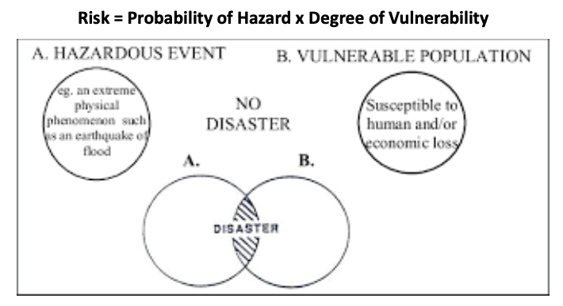
- Risk is a measure of the expected losses due to a hazard event occurring in a given area over a specific time period. Disaster risk arises when hazards interact with physical, social, economic and environmental vulnerabilities. - It considers the probability of harmful consequences, or expected losses (deaths, injuries, property, livelihoods, economic activity disrupted or environmentally damaged) resulting from interactions between natural or human induced hazards and vulnerable conditions. - Risk = \( \text{Probability of Hazard} \times \text{Degree of Vulnerability} \) - Student Notes: - There are different ways of dealing with risk, such as: - Risk Acceptance: - It is an informed decision to accept the possible consequences and likelihood of a particular risk. - Risk Avoidance: - It is an informed decision to avoid involvement in activities leading to risk realization. - Risk Reduction: - It refers to the application of appropriate techniques to reduce the likelihood of risk occurrence and its consequences. - Risk Transfer: - It involves shifting of the burden of risk to another party. One of the most common forms of risk transfer is Insurance. - 1.3. Classification of Disasters - On the basis of Source: - Natural Disasters - Disasters which are caused because of natural phenomena (meteorological, geological or even biological origin). - Examples: - Cyclones, tsunamis, earthquake and volcanic eruption which are exclusively of natural origin. - Socio-Natural Disasters - Disasters with causes that are both natural and manmade. - Examples: - Landslides, floods, drought, fires. - Anthropogenic Disasters - Disasters which occur due to human intervention or negligence, associated with industries or energy generation facilities. - Examples: - Explosions, leakage of toxic waste, pollution, dam failure, wars or civil strife. - On the basis of Duration: - Rapid Onset Disasters - Characterized by the sudden and acute intensity of the impact during a short period. - Examples: - Earthquakes, cyclones, floods, tsunamis. - Slow Onset Disasters - Can be predicted much further in advance and unfold over months or even years, also termed as ‘Creeping Emergencies’. - Examples: - Climate change (global warming), desertification, soil degradation, droughts. - Slow onset disasters like global warming and desertification must find adequate reflection in disaster preparedness. Unlike the rapid onset disasters, their impact is not felt immediately; however societies lose their ability to derive sustenance from their surroundings, over a period of time. - 2. Disaster Management Cycle - 2.1. Introduction to the Disaster Management Cycle -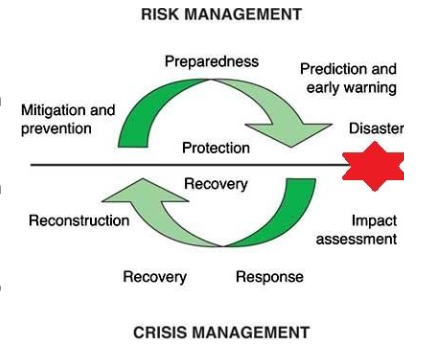
- Disaster Management includes sum total of all activities, programs and measures which can be taken up before, during and after a disaster. - A typical disaster management continuum consists of: - A pre-disaster Risk Management Phase which includes prevention, mitigation and preparedness. - Post-disaster Crisis Management Phase which includes relief, response, rehabilitation, reconstruction and recovery. - The three key stages of activities that are taken up within disaster risk management are: - Before a disaster (pre-disaster) - This is the period when the potential hazard risk and vulnerabilities can be assessed and steps taken for preventing and mitigating the crisis. These include long-term prevention measures such as construction of embankments and earthquake resistant structures, afforestation, adoption of watershed management etc. Short term measures such as carrying out awareness campaigns, ensuring enforcement of building codes etc. can also assist in mitigation. Risk reduction measures taken under this stage are termed as mitigation and preparedness activities. - During a disaster (disaster occurrence) - When a crisis actually occurs, those affected by it require a speedy response to alleviate and minimize suffering and losses. In this phase, certain ‘primary activities’ become indispensable. These are evacuation, search and rescue, followed by provision of basic needs such as food, clothing, shelter, medicines and other relief material. - After a disaster (post-disaster) - Recovery involves a set of policies, tools and procedures to enable the recovery or continuation of vital technology infrastructure and systems following a disaster. - Rehabilitation: - Rehabilitation consists of actions taken in the aftermath of a disaster to enable basic services to resume functioning, assist victims’ self-help efforts to repair dwellings and community facilities, and to facilitate the revival of economic activities. - Reconstruction: - Includes construction of damaged infrastructure and habitats and enabling sustainable livelihoods. It must be fully integrated into ongoing long-term development plans, taking account of future disaster risks. -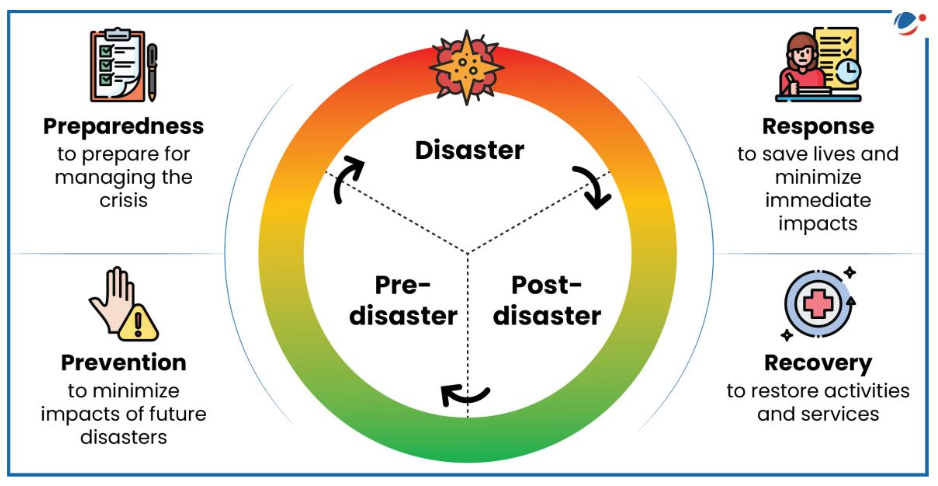
- 2.2. Disaster Preparedness - Disaster preparedness refers to measures taken to prepare for and reduce the effects of disasters. That is, to predict and, where possible, prevent disasters, mitigate their impact on vulnerable populations, and respond to and effectively cope with their consequences. - Preparedness is defined by the United Nations International Strategy for Disaster Reduction (UNISDR) as knowledge, capabilities, and actions of governments, organizations, community groups, and individuals “to effectively anticipate, respond to, and recover from, the impacts of likely, imminent or current hazard events or conditions.” - Preparedness efforts range from individual-level activities (such as first aid training), to household actions (e.g. stockpiling of equipment and supplies), community efforts (like training and field exercises), and governmental strategies (including early warning systems, contingency plans, evacuation routes, and public information dissemination). The traditional 3 Rs (Rescue, Relief & Restoration) are now being replaced by 3 Ps (Prevention, Preparedness & Proofing). -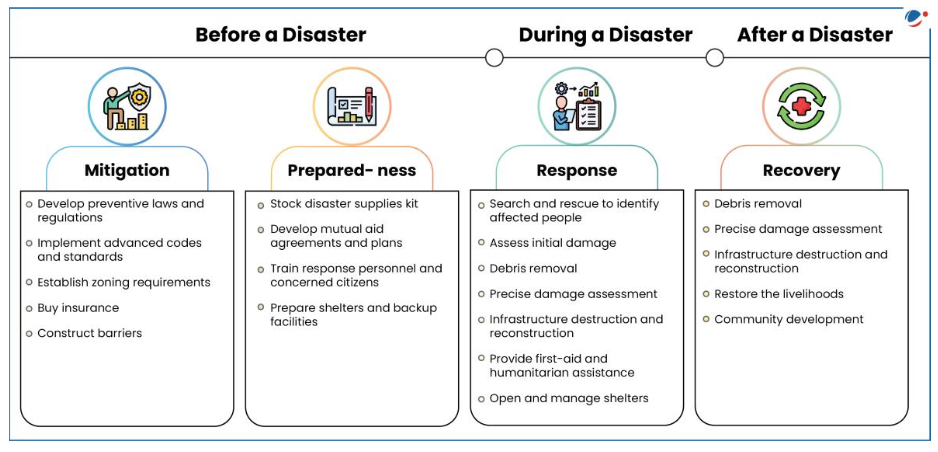
- 2.3. Disaster Risk Reduction and Planning -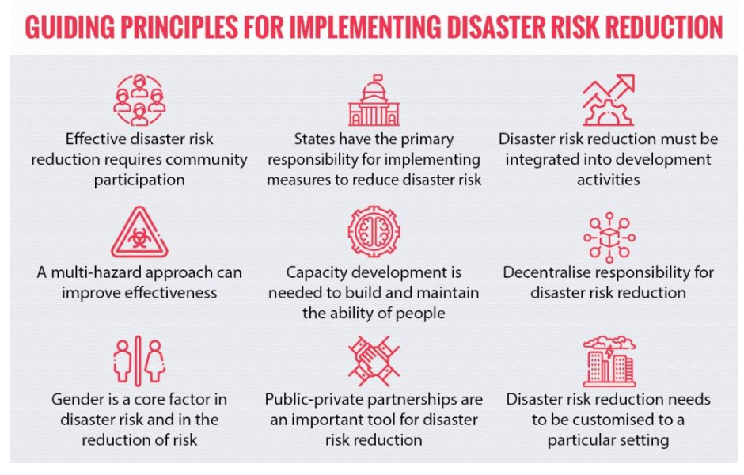
- Disaster risk reduction is the concept and practice of reducing disaster risks through reduced exposure to hazards, lessened vulnerability of people and property, wise management of land and the environment, and improved preparedness for adverse events. - It covers activities which support preparedness, prevention and mitigation from a local to an international level. The disaster risk reduction framework is composed of the following fields of action: - A policy framework backed by legal and institutional mechanism that focuses on risk management must be outlined. - Risk assessment based on hazards and community resilience must be done. - Risk Awareness: - Having assessed the risk the next step is to make the stakeholders and the decision makers aware of the risk enabling government and civil society to take decisions. - Implementation of the plan: - The plan must be implemented taking all stakeholders into account including measures like environment management, urban planning etc. - Early Warning Systems are a key part of risk reduction through provision of timely and reliable information through identified institutions. - Use of Knowledge: - Effective disaster risk management depends on the informed participation of all stakeholders. The exchange of information and easily accessible communication practices play key roles. - The Prime Minister has enunciated ten-point agenda on Disaster Risk Reduction (DRR) during the Asian Ministerial Conference on Disaster Risk Reduction (AMCDRR) held in New Delhi in November 2016. The all-inclusive agenda presents a holistic approach to disaster risk reduction and addresses a whole range of issues, from community preparedness to use of technology and international cooperation. Each of the ten points on the Prime Minister’s ten-point agenda is aligned with one or more priorities of action of Sendai Framework for Disaster Risk Reduction 2015-2030. -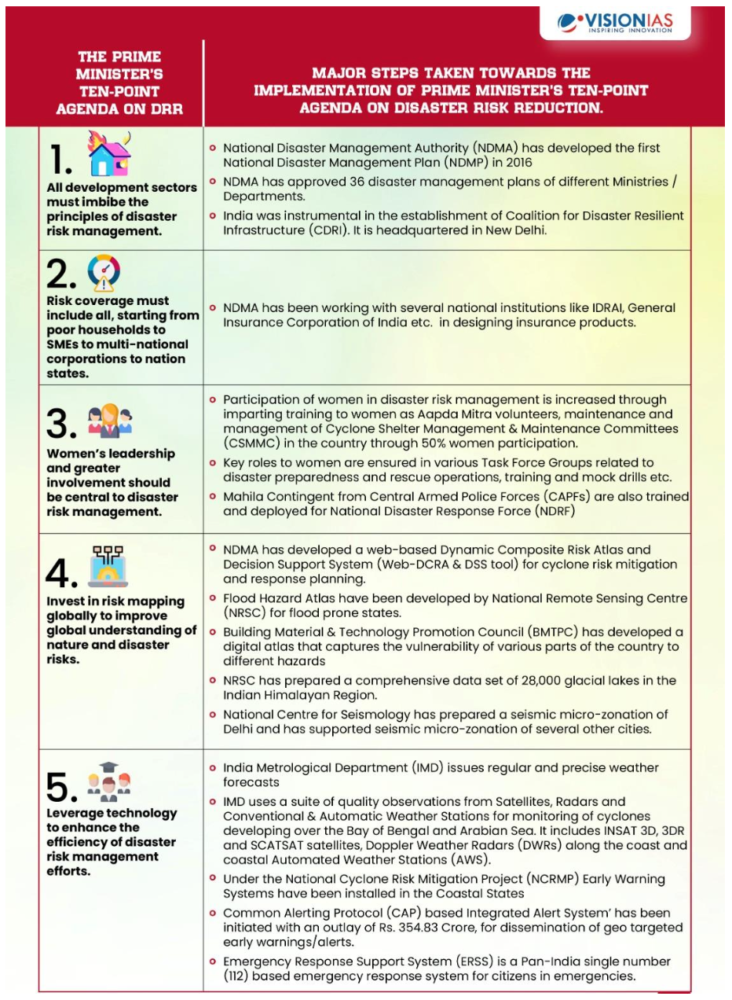
-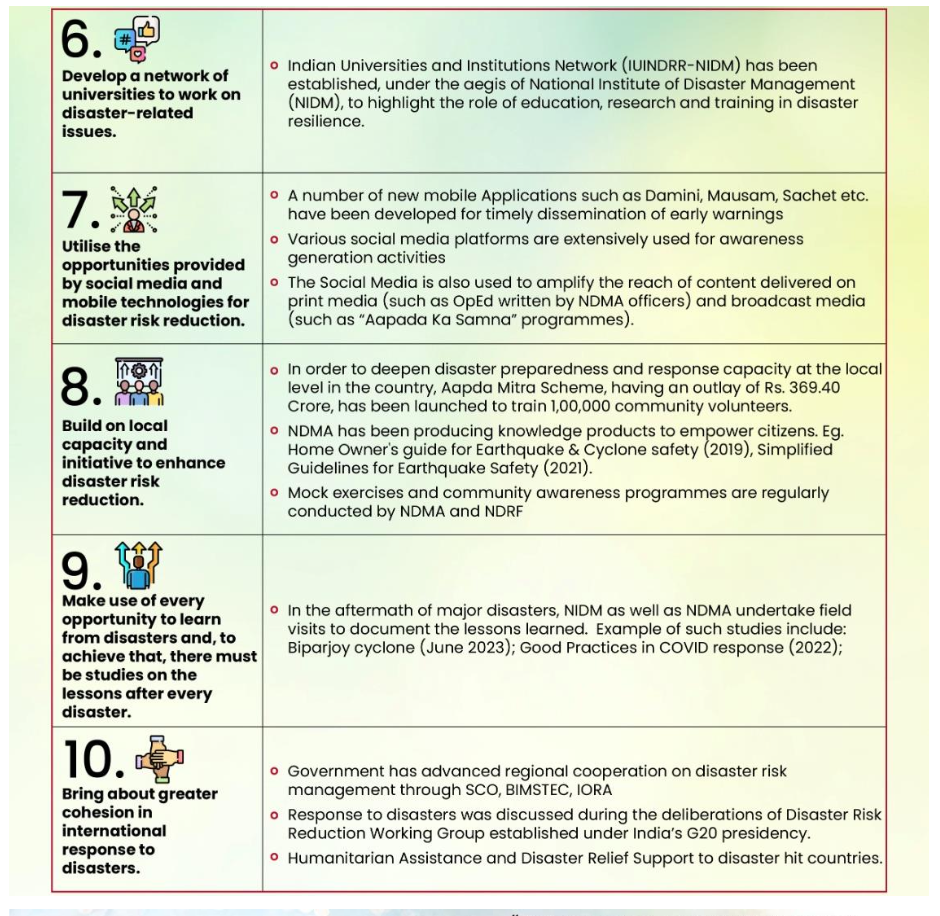
- 2.4. Relief and Rehabilitation -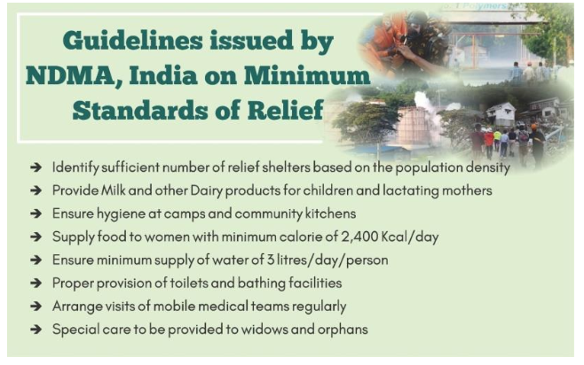
- When an emergency or a disaster affects a city or a region, efforts are conducted initially to care for the wounded, to restore lifelines and basic services, and subsequently to restore livelihoods and to reconstruct communities. Such efforts can be structured in the following phases: - The Relief phase: - In the immediate aftermath of the disaster, activities such as search & rescue, rapid damage and needs assessments, and the provision of relief and first aid are conducted. Temporary shelters are opened for those left homeless as well as humanitarian assistance is provided to those affected. - The Rehabilitation phase: - Rehabilitation refers to the actions taken in the aftermath of a disaster to enable basic services to resume functioning, revive economic activities and provide support for the psychological and social well-being of the survivors. In this phase basic services and lifelines are restored, even on a temporary basis, including the road network and other essential facilities including bridges, airports, ports and helicopter landing sites. It focuses on enabling the affected population to resume more-or-less normal (pre-disaster) patterns of life. It may be considered as transitional phase between immediate relief and more major, long-term development. - 2.5. Post-Disaster Recovery and Reconstruction - Reconstruction refers to the full restoration of all services, and local infrastructure, replacement of damaged physical structures, the revitalization of economy and the restoration of social and cultural life. Reconstruction must be fully integrated into long-term development plans, taking into account future disaster risks and possibilities to reduce such risks by incorporating appropriate measures. - The long-term recovery plans are related with Recovery and Reconstruction activities on the one side and institutionalizing disaster management in district administration on the other. The Incident Command System is now deactivated as the rehabilitation phase is over. Thereafter the normal administration shall take up the remaining reconstruction works in the disaster-affected areas. - Student Notes: - Incident Command System (2003)- The Incident Command System or ICS broadly refers to a management system to be used for incidents of various kinds. The system provides scope to organize various functions, tasks and staffs within the overall response process while emphasizing greater coordination and communication among different organizations involved. - 3. DISASTER MANAGEMENT IN INDIA - 3.1 LEGAL AND INSTITUTIONAL FRAMEWORK IN INDIA - Introduction - Disaster management in India has evolved from an activity-based reactive setup to a proactive institutionalized structure with a holistic approach for reducing risk. - In 1990s a ‘Disaster Management Cell’ was set up under the Ministry of Agriculture following the declaration of the decade of 1990 as the ‘International Decade for Natural Disaster Reduction’ (IDNDR) by the UN General Assembly. - The Government of India enacted the Disaster Management Act, 2005, which envisaged the creation of a three-tier structure comprising of the National Disaster Management Authority (NDMA), State Disaster Management Authorities (SDMAs) and District Disaster Management Authorities (DDMAs). - Institutional Framework at the National Level - At the national level, overall coordination of disaster management vests with the Ministry of Home Affairs (MHA). It coordinates with disaster affected states, line ministries, National Disaster Management Authority (NDMA), National Disaster Response Force (NDRF), National Institute of Disaster Management (NIDM), Home Guards and Civil Defence, and Armed Forces etc. - National Platform for Disaster Risk Reduction (NPDRR) - It is a multi-stakeholder and multi-decision making body on disaster management. It is chaired by the Union Home Minister with other ministers as its members. The minister of state in-charge of disaster management in the home ministry and the vice-chairman of the National Disaster Management Authority are the NPDRR's vice chairpersons. - The minister of each state government and UT dealing with disaster management and mayors of Delhi, Mumbai, Kolkata, Chennai, Bangalore and Hyderabad are its members too. Four Lok Sabha members (nominated by speaker) and two Rajya Sabha members (nominated by Chairman) are also its members along with ten chairpersons of urban local bodies (nominated by the Urban Development ministry). - Its functions include to review the progress made in the field of disaster management from time to time, appraise the extent and manner in which the disaster management policy has been implemented by the central and state governments, and other agencies concerned. It also advises on coordination between central and state governments. -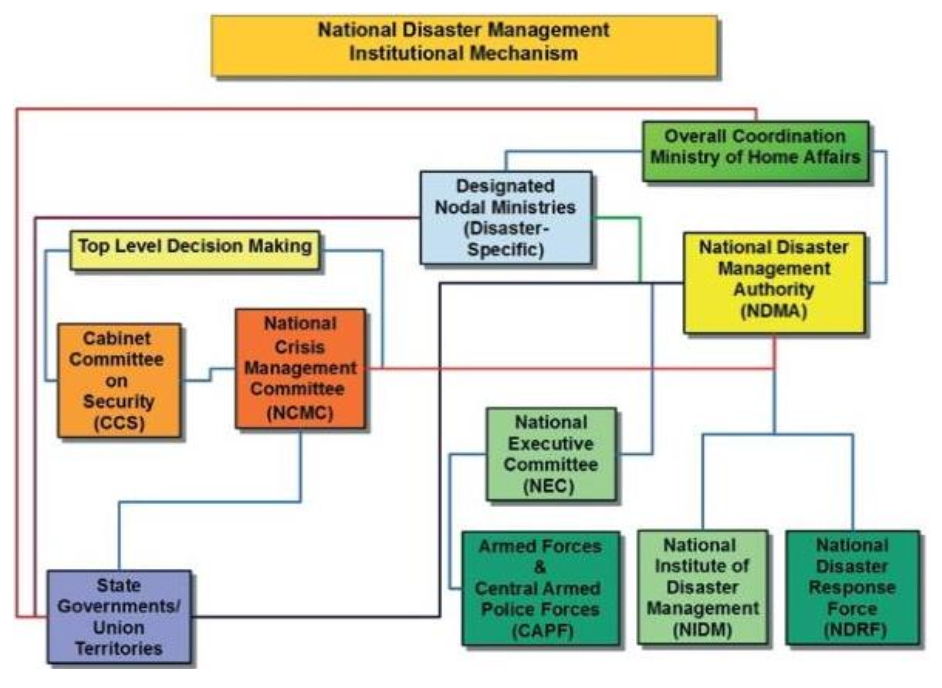
- National Executive Committee - Constituted under the DM Act, 2005 and chaired by the Union Home Secretary it acts as the coordinating and monitoring body for disaster management in India. - It also comprises of Secretary level officers from the Ministries and departments having control of agriculture, atomic energy, defence, drinking water supply, environment and forests, finance (expenditure), health, power, rural development, science and technology, space, telecommunications, urban development and water resources. The Chief of Integrated Defence Staff of the Chiefs of Staff Committee is also its member. - The NEC may give directions to the relevant Ministries/Departments of the GoI, the State Governments, and the State Authorities regarding measures to be taken by them in response to any specific threatening disaster situation or disaster as per needs of the State. - The Cabinet Committee on Security (CCS) is involved in decision making if the disaster has serious security implications. The National Crisis Management Committee (NCMC) deals with major crises that have serious or national ramifications such as terrorism, hijacking which require involvement of security forces. - National Disaster Management Authority (NDMA) - It is the apex body for disaster management, constituted under the DM Act, 2005 and headed by the Prime Minister of India. It is responsible for laying down the policies, plans, and guidelines for disaster management. The guidelines of NDMA assist the Central Ministries, Departments, and States to formulate their respective Disaster Management (DM) plans. - It approves the National Disaster Management Plans and plans of the Central Ministries / Departments. - The general superintendence, direction, and control of the National Disaster Response Force (NDRF) are vested in and are exercised by the NDMA. - The National Institute of Disaster Management (NIDM) works within the framework of broad policies and guidelines laid down by the NDMA. - NDMA has the power to authorize the Departments or authorities, to make emergency procurement of materials for rescue and relief in a threatening disaster situation or disaster. - It oversees the provision and application of funds for mitigation and preparedness measures. - National Institute of Disaster Management (NIDM) - The National Institute of Disaster Management is the nodal agency responsible for human resource development, capacity building, training, research, documentation and policy advocacy in the field of disaster management. It provides technical support to the state governments through the Disaster Management Centres (DMCs). - National Disaster Response Force (NDRF) - The NDRF is a specialist response force that can be deployed in a threatening disaster situation or disaster. The general superintendence, direction and control of this force is vested in and exercised by the NDMA and the command and supervision of the Force vests in the Director General of National Disaster Response Force. - At present, NDRF has strength of 12 Battalions with each Battalion consisting of 1149 personnel including from ITBP, BSF, CRPF and CISF. - It also has specialist search and rescue teams comprising of engineers, technicians, paramedics and dog squads. The “proactive availability” of this Force to the States and its “pre-positioning” in threatening disaster situations has immensely helped minimise damage, caused due to calamities in the country. - Institutional Framework at State Level - State Disaster Management Authority - The DM Act, 2005 mandates the creation of a State Disaster Management Authority with Chief Minister as the ex-officio Chairperson. It is responsible for laying down the State Disaster Management Policy and approve the State DM Plans in accordance with the guidelines laid down by the Union. It is also responsible for coordinating the implementation of the plan and review the measures being taken for mitigation, capacity building and preparedness by the various state departments. - State Executive Committee - It is responsible for coordinating and monitoring of DM related activities in the state. The Chief Secretary of the state is its ex-officio chairperson. It lays down the guidelines for preparation and implementation of national and state DM plans. It coordinates response in the event of a disaster and gives directions to departments. It is also responsible for promotion of general awareness and community training. - Institutional Framework at the District Level -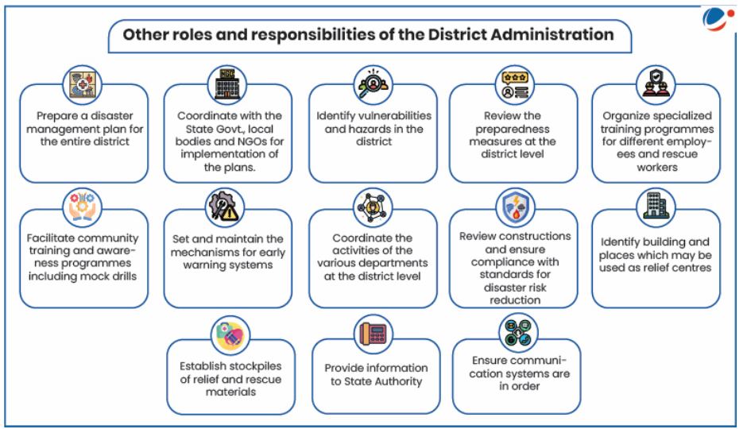
- At the district level, District Disaster Management Authority (DDMA), headed by the District Collector/District Magistrate, is responsible for overall coordination of the disaster management efforts and planning. - As per provisions of the Act, each State Government establishes a District Disaster Management Authority for every district in the State. - The DDMA is headed by the District Collector with the elected representative of the local authority as the Co-Chairperson. - The DDMA prepares the Disaster Management plan for the District and monitors its implementation. It also ensures that the guidelines laid down by the NDMA and the SDMA are followed by all the district-level offices. - Local Authorities - Panchayati Raj Institutions (PRI), Municipalities, District and Cantonment Boards, and Town Planning Authorities, which control and manage civic services, ensure capacity building of their employees for managing disasters, carrying out relief, rehabilitation and reconstruction activities in the affected areas. They also prepare their disaster management plans as per the national and state guidelines. - Financial Arrangements under National Disaster Management Act, 2005 - National Disaster Response Fund is a fund managed by the Central Government for meeting the expenses for emergency response, relief and rehabilitation. If the requirement of funds for relief operations is beyond the funds available in the State Disaster Response Fund account, additional Central assistance is provided from National Disaster Response Fund. The National Calamity Contingency Fund (NCCF) introduced by 11th Finance Commission was merged with NDRF. - The State Disaster Response Fund is used only for meeting the expenditure for providing immediate relief to the victims of disasters. - Recently the Standing Committee on Finance (Chairperson: Dr. M. Veerappa Moily) submitted its report on ‘Central Assistance for Disaster Management and Relief’ in 2019. Key observations made by the committee are: - Scale of relief: - Rates and scale of assistance under SDRF and NDRF should be enhanced to cover major heads of expenditure such as restoration of government buildings, transmission power station etc. - Disaster Mitigation Fund: - The Committee recommended that a separate Disaster Mitigation Fund should be operationalised for undertaking permanent mitigation measures in disaster-prone states. - The NDRF is funded through the National Calamity Contingency Duty (NCCD) imposed on specified goods under central excise and customs. with the introduction of GST, the scope of NCCD is shrinking. The revenue collected from NCCD has decreased significantly from Rs 5,690 crore in 2015-16 to Rs 2,500 crore in 2018-19. - Funding Mechanism: - It recommended that an additional 10% of the allocation of the centrally sponsored schemes may be specially earmarked for permanent restoration of damaged structures. - Increase in Funding: - Given the wide gap between the funds sought by affected states and those released by the central government, the Committee recommended an annual increase of 15% (from the current 5%) in the total corpus of SDRF, for the period 2020-25. - Other Plans and Policies - National Policy on Disaster Management (NPDM), 2009 - It is prepared with the vision “To build a safe and disaster resilient India by developing a holistic, proactive, multi-disaster oriented and technology driven strategy through a culture of prevention, mitigation, preparedness and response”. - Objectives of the National Policy on Disaster Management, 2009 - Promoting a culture of prevention, preparedness and resilience at all levels through knowledge, innovation and education. - Encouraging mitigation measures based on technology, traditional wisdom and environmental sustainability. - Mainstreaming disaster management into the developmental planning process. - Establishing institutional and techno-legal frameworks to create an enabling regulatory environment and a compliance regime. - Ensuring efficient mechanism for identification, assessment and monitoring of disaster risks. - Developing contemporary forecasting and early warning systems backed by responsive and fail-safe communication with information technology support. - Ensuring efficient response and relief with a caring approach towards the needs of the vulnerable sections of the society. - Undertaking reconstruction as an opportunity to build disaster resilient structures and habitat for ensuring safer living. - Promoting a productive and proactive partnership with the media for disaster management. - The National Disaster Management Plan, 2016 - The Government of India, for the first time, released its first National Disaster Management Plan in 2016. It has been aligned broadly with the goals and priorities set out in the Sendai Framework for Disaster Risk Reduction, the Sustainable Development Goals 2015-2030 and the Paris Agreement on Climate Change at COP-21. - It provides a framework and direction to the government agencies for all phases of disaster management cycle. It, therefore, specifies who is responsible for what at different stages of managing disasters. - The plan covers all phases of disaster management: - prevention, mitigation, response and recovery. - For each hazard, the approach used in this national plan incorporates the four priorities enunciated in the Sendai Framework into the planning framework for Disaster Risk Reduction under the five Thematic Areas for Actions: - Understanding Risk – This thematic area focuses on understanding disaster risk, the Priority-1 in the Sendai framework. - Major action themes - (a) Observation Networks, Information Systems, Research, Forecasting, - (b) Zoning / Mapping, - (c) Monitoring and Warning Systems, - (d) Hazard Risk and Vulnerability Assessment (HRVA), and - (e) Dissemination of Warnings, Data, and Information. - Inter-Agency Coordination - Inter-agency coordination is a key component of strengthening the disaster risk governance - Priority-2 of the Sendai Framework. - The major themes for action required for improving the top level interagency coordination are - (a) Overall disaster governance - (b) Response - (c) Providing warnings, information, and data and - (d) Non-structural measures. - Investing in DRR – Structural Measures - Undertaking necessary structural measures is one of the major thematic areas for action for disaster risk reduction and enhancing resilience. These consist of various physical infrastructure and facilities required to help communities cope with disasters. - Investing in DRR – Non-Structural Measures - Sets of appropriate laws, mechanisms, and techno-legal regimes are crucial components in strengthening the disaster risk governance to manage disaster risk, which is Priority-2 of the Sendai Framework. These non-structural measures comprising of laws, norms, rules, guidelines, and techno-legal regime (e.g., building codes) framework and empowers the authorities to mainstream disaster risk reduction and disaster resilience into development activities. - Capacity Development - Capacity development is a theme in all the thematic areas for action. The Sendai Priority-2 (Strengthening DRR governance to manage DR) and Priority-3 (Investing in DRR for resilience) are central to capacity development. The capacity development includes training programs, curriculum development, large-scale awareness creation efforts, and carrying out regular mock drills and disaster response exercises. - The Response part of the Plan has identified eighteen broad activities which have been arranged into a matrix to be served as a ready reckoner. Some of the activities include Early Warning Systems and information dissemination, Search and rescue, housing and temporary shelter, media etc. - The plan also spells out the roles and responsibilities of all levels of Government right up to Panchayat and Urban Local Body level in a matrix format. It is designed in such a way that it can be implemented in a scalable manner in all phases of disaster management. -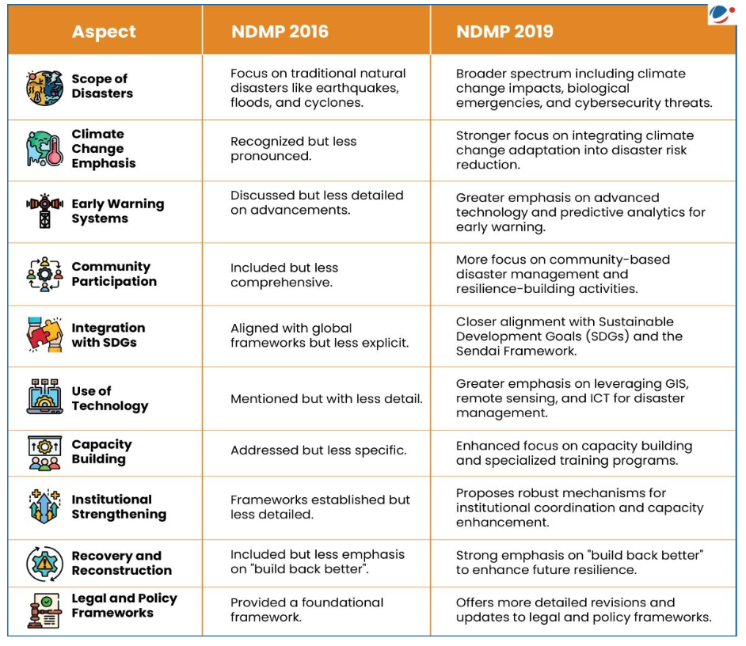
- Shortcomings of National Disaster Management Plan, 2016 - It is too generic in its identification of the activities to be undertaken by the central and states governments. - The plan refrains from providing a precise time frame for undertaking these activities. - It does not project the requirement of funds needed or how funds shall be mobilized. - The plan is aligned with the Sendai Framework for Disaster Risk Reduction and Sustainable Development Goals, but unlike in the Sendai Framework or the SDGs, the plan does not set any goals or targets, nor does it spell out how the Sendai goals and targets shall be achieved. - The activities mentioned in the NDMP are not new and they have already been mentioned in the Act and the guidelines issued by the NDMA. - 3.2 VULNERABILITY PROFILE OF INDIA - India is one of the ten worst disaster prone countries of the world. Disasters occur in India with grim regularity causing enormous loss of life and property. According to an UN Office for Disaster Risk Reduction (UNISDR) report 2017, India has been ranked as the world's most disaster-prone country for displacement of residents. - India is vulnerable to a large number of natural, as well as, human-made disasters on account of its unique geo-climatic and socio-economic conditions. - Out of the 36 states and union territories in the country, 28 of them are disaster prone. - Almost 85% of the country is vulnerable to single or multiple disasters - About 57% of its area lies in high seismic zones. - Approximately 40 million hectares of the country’s land area is prone to flood - About 8% of the total land mass is vulnerable to cyclone - 68% of the area is susceptible to drought. - The five distinctive regions of the country: - Himalayan region: - earthquakes and landslides - The plain: - Floods. - The desert: - Droughts and famine - The coastal zone: - Cyclones and storms. - Anthropogenic vulnerability: - Deforestation - Unscientific construction and development activity - Faulty agricultural practices - The Building Materials and Technology Promotion Council (BMPTC) has recently released the third edition of the Vulnerability Atlas of India in 2019. It contains maps and tables for each State and Union Territory of India for the following hazards: Earthquakes, Wind, Floods, Landslide, Cyclone and frequency of thunderstorms. It also contains housing stock vulnerability indicating the risk for each type of house. -| Region | Major Hazards |
|---|---|
| Himalayan Region | Earthquakes, Landslides |
| The Plain | Floods |
| The Desert | Droughts, Famine |
| The Coastal Zone | Cyclones, Storms |
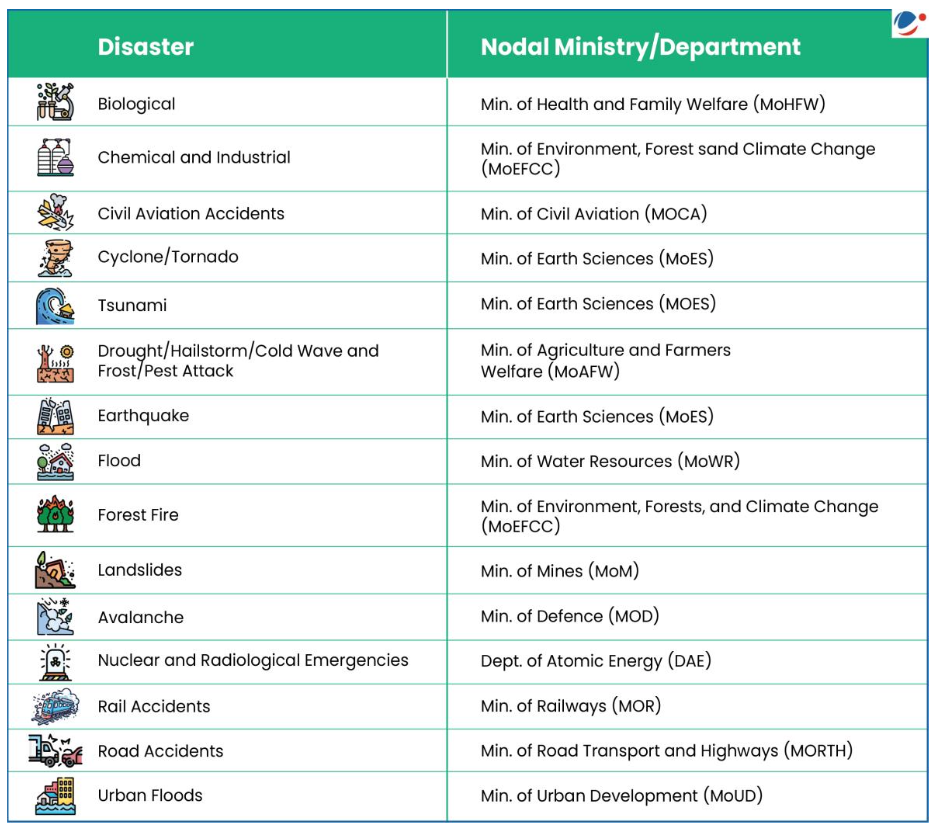
- 3.3 NATURAL HAZARDS - 3.3.1 Earthquake - An earthquake is the sudden shaking of the earth crust. The impact of an earthquake is sudden and there is hardly any warning, making it impossible to predict. - What causes an earthquake? -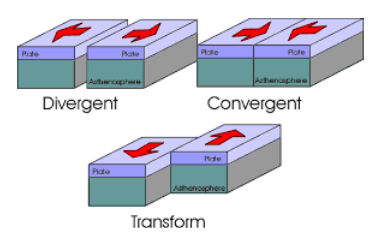
- Earthquakes occur due to movements along the plates’ boundaries. When these plates contact each other, stress arises in the crust. The movement along the plate’s boundaries can be classified as: - Divergent: - Pulling away from each other - Convergent: - Pushing against one another - Transform: - Sliding sideways relative to each other - The areas of stress at plate boundaries which release accumulated energy by slipping or rupturing are known as 'faults'. A rupture then occurs along the fault and the rock rebounds under its own elastic stresses until the strain is relieved. The fault rupture generates vibration called seismic waves. - Earthquakes can be measures by the use of two distinctively different scales of measurement demonstrating magnitude (by Richter scale) and intensity (by Mercalli Scale). - Earthquake Risk in India -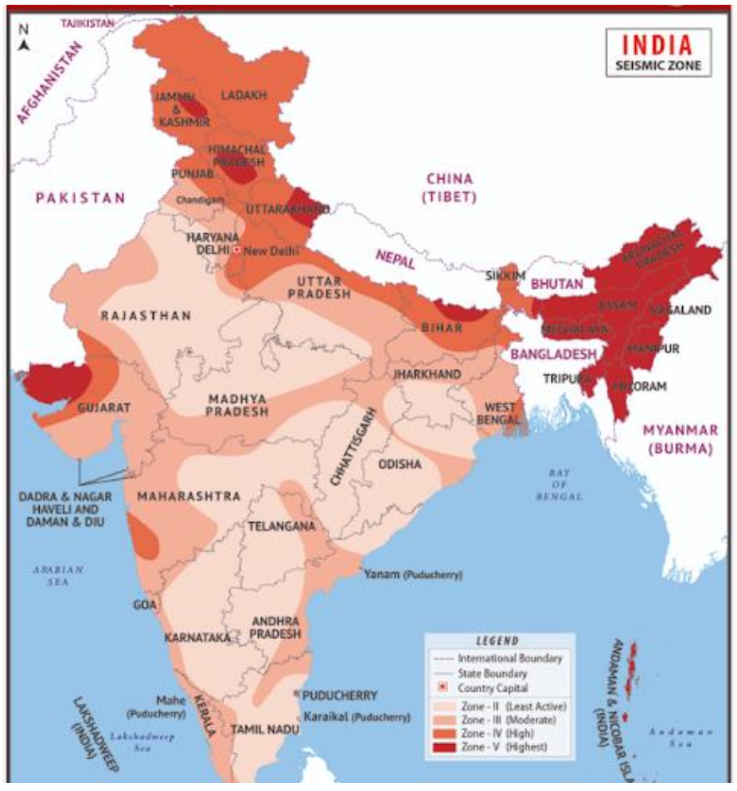
- India falls prominently on the 'Alpine - Himalayan Belt'. This belt is the line along which the Indian plate meets the Eurasian plate. Being a convergent plate, the Indian plate is thrusting underneath the Eurasian plate at a speed of 5 cm per year. This makes the entire region covering fourteen states (located in western and central Himalayas, northeast, and parts of Indo-Gangetic basin) highly prone to earthquakes. - The other seismically active regions of the country include the Gulf of Khambhat and Rann of Kutch in Western Gujarat, parts of peninsular India, the islands of Lakshadweep and Andaman and Nicobar Islands - Earthquake Zones in India - Introduction - India is among the most earthquake-prone regions of the world due to the collision between the Indian Plate and Eurasian Plate. - Nearly 54% of the Indian landmass is prone to moderate to severe seismic hazard. - Seismic zoning is based on IS Code 1893:2002. - Seismic Zonation (as per Bureau of Indian Standards) - Zone I - No longer exists in India (removed in latest classification). - Zone II - Low damage risk zone - Modified Mercalli Intensity (MMI) less than VI - Example: - Most of Deccan Plateau - Zone III - Moderate damage risk zone - MMI: VI – VII - Example: - Kerala, Goa, interior Karnataka, Andhra Pradesh parts - Zone IV - High damage risk zone - MMI: VII – VIII - Example: - Delhi, Bihar, Western Uttar Pradesh, parts of Jammu & Kashmir - Zone V - Very high risk zone - MMI: IX and above - Example: - North-east India, Jammu & Kashmir, Himachal Pradesh, Uttarakhand, Andaman & Nicobar Islands - Major Seismic Belts of India - Himalayan Belt - Highly active, plate collision zone - Indo-Gangetic Belt - Ganga plains, moderate activity - Peninsular Belt - Relatively stable, but intraplate activity (e.g., Latur 1993) - Andaman & Nicobar Belt - Subduction zone, highly vulnerable - Distribution: - Zone II → ~41% land area - Zone III → ~30% land area - Zone IV → ~18% land area - Zone V → ~11% land area - Most vulnerable areas: - Himalayas, North-East, Andaman & Nicobar Islands - Seismic zoning maps must be followed in urban planning and infrastructure development. - Earthquakes can neither be prevented nor predicted in terms of their magnitude, or place and time of occurrence. Therefore, the most effective measures of risk reduction are pre-disaster mitigation, preparedness and preventive measures for reducing the vulnerability. - Measures to prevent and mitigate earthquake loss - National Centre for Seismology submits earthquake surveillance and hazard reports to governmental agencies - National Earthquake Risk Mitigation Project - Strengthening the structural and non-structural dimensions of earthquake mitigation efforts - reducing the vulnerability in the high-risk districts - National Building Code Comprehensive building code and a national instrument providing guidelines for regulating the building construction activities across the country - Building Material & Technology Promotion Council - mandated to promote resource-efficient, climate resilient, disaster resistant construction practices - undertakes projects for retrofitting of life-line structures to generate awareness - NDMA Guidelines on Earthquake Management -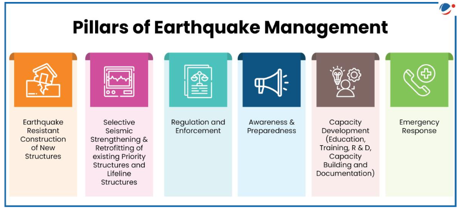
- Guidelines issued by NDMA rest on six pillars of seismic safety for improving the effectiveness of earthquake management in India: - 1. Earthquake Resistant Construction of New Structures: - All central ministries and departments and state governments will facilitate the implementation of relevant standards for seismically safe design and construction of buildings and other lifeline and commercially important structures falling within their administrative control such as bridges, flyovers, ports, harbours etc. - 2. Selective Seismic strengthening & retrofitting of existing Priority structures and Lifeline Structures: - All central ministries and state governments are required to draw up programs for seismic strengthening of priority structures through ULBs and PRIs. Buildings of national importance such as Raj Bhavans, Legislatures, Courts, critical buildings like academic institutions, public utility structures like reservoirs, dams and multi-storeyed buildings with five or more floors. The responsibility to identify these structures rests with the State Governments. - 3. Regulation and Enforcement: - State Governments are responsible for establishing mechanisms to implement Building Codes and other safety codes to ensure that all stakeholders like builders, architects, engineers, government departments adhere to seismic safety in all design and construction activities. The Home Ministry had constituted a national level expert group which recommended modifications to the town and country planning Acts, land use and zoning regulations, DCRs and building bye-laws which are technically rigorous and conform to globally accepted norms. - 4. Awareness & Preparedness: - Sensitization of all stakeholders is one of the most challenging tasks in earthquake preparedness and mitigation. It recommends preparation of handbooks on earthquake safety, homeowner's seismic safety manuals, a manual on structural safety audit and video films for the general public. It also highlights the need to create vulnerability maps of land areas and streamlining of NGOs and Volunteer Groups. National Centre for Seismology, New Delhi developed a mobile app named ‘India Quake’ for automatic dissemination of earthquake parameter (location, time and magnitude) after the occurrence of earthquakes. The App will make information broadcasting faster with no restrictions on the number of recipients. - 5. Capacity Development (Education, Training, R&D, Capacity Building and Documentation): - The target groups for capacity development include elected representatives and government, officials, professionals in visual and print media, urban planners, engineers, architects and builders, NGOs, Community Based Organizations (CBOs), social activists, social scientists, schoolteachers, and school children. - 6. Emergency Response: - All response activities are undertaken through Incident Command System coordinated by the local administration through the Emergency Operations Centre network. It includes involvement of community, corporate sector and specialized teams. - The National Building Code of India (NBC) provides guidelines for regulating the building construction activities on different materials, planning, design and construction practices of buildings. It lays down provisions designed to protect the safety of the public with regard to structural sufficiency, fire hazards and health aspect of buildings. - Critical Existing Challenges for Earthquake Mitigation in India - Inadequate enforcement of earthquake-resistant building codes and town planning bye-laws; - Absence of earthquake-resistant features in constructions in urban and rural areas. - Lack of formal training among professionals in earthquake-resistant construction practices. - Lack of adequate preparedness and poor response capacity of various stakeholder groups. - Lack of awareness among various stakeholders about the seismic risk; - Absence of systems of licensing of engineers and masons. - 3.3.2 Tsunami - Tsunami is a Japanese word meaning 'harbour' wave. A tsunami is a series of large waves of extremely long wavelength and period usually generated by an undersea disturbance or activity near the coast or in the ocean. - What causes a Tsunami? -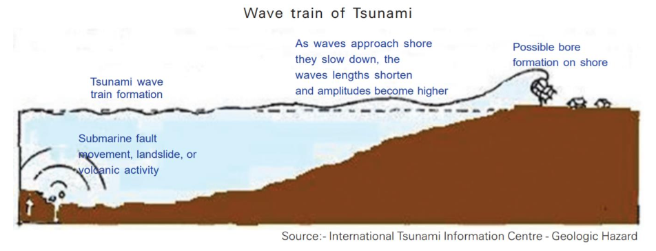
- Tsunamis are generated by a large, impulsive displacement of the sea bed level. Earthquakes generate tsunamis by vertical movement of the sea floor. Tsunamis can also be triggered by landslides into or under the water surface, volcanic activity and meteorite impacts. Landslide triggered tsunamis can be a possible scenario in the Bay of Bengal and the Arabian Sea due to the huge sediment deposition by the Ganges and Indus Rivers. - The effects of a tsunami depend on the following factors: - Characteristics of the seismic event that generated the tsunami. - Distance from its point of origin, its size (magnitude) - Configuration of the bathymetry (that is the depth of water in oceans). - Indian Ocean tsunami of December 2004 along the Indian coast highlighted that the maximum damage had occurred in low-lying areas near the coast and high casualties were found in thickly populated areas. Mangroves, forests, sand dunes and coastal cliffs provided the best natural barriers to reduce the impact of the tsunami and heavy damage was reported in areas where sand dunes were heavily mined. - Tsunami Risks in India - Both East and West Indian shorelines are vulnerable to tsunami wave action. It has more than 2200 km shoreline which is heavily populated. - Even though tsunamis occur very rarely in the Indian Ocean region, in the last 300 years, this region recorded 13 tsunamis and 3 of them occurred in the Andaman and Nicobar region. The Indian Ocean Tsunami of 26th December 2004 is one of the most destructive Tsunamis known to have hit India. - Mangroves, forests, sand dunes and coastal cliffs provided the best natural barriers to reduce the impact of the tsunami and heavy damage was reported in areas where sand dunes were heavily mined. - NDMA Guidelines on Management of Tsunamis in India - 1. Tsunami Risk Assessment and Vulnerability Analysis: - NDMA recommends assessment of vulnerability and risk mapping in the tsunami hazard based on coastal land use maps and coastal bathymetry. It suggests development of models to estimate the arrival and wave run up height of tsunami waves. In India, the Indian Naval Hydrographic Department (INHD) functions under the Chief Hydrographer to the Government of India. It regularly provides bathymetry information to authorized agencies for drawing the inundation maps. - 2. Tsunami Preparedness: - A 17-station Real Time Seismic Monitoring Network (RTSMN) is envisaged to be established by IMD and Bottom Pressure Recorders (BPRs) are used to detect the propagation of Tsunami waves in the Open Ocean. A major concern is that the unattended ocean observation platforms in sea are being vandalized either accidentally. The National Institute of Ocean Technology (NIOT) has implemented the National Data Buoy Programme for the protection of surface buoys. Tsunami Bulletins and warning systems are an important part of preparedness. "Tsunami Escape" direction sign boards must be set up in coastal areas. Visual and radio media also play an important role in alert and warning and Public awareness campaigns must be held more frequently. - 3. Structural Mitigation Measures: - Following are the various structural measures recommended: - Construction of cyclone shelters, submerged sand barriers/dykes, sand dunes with sea weeds and plantation of mangroves and coastal forests along the coast line. - Development of a network of local knowledge centres (rural/urban) along the coast lines to provide necessary training and emergency communication during crisis time (e.g. centres developed by M.S. Swaminathan Foundation in Pondicherry). - Construction of location specific sea walls and coral reefs in consultation with experts. - Development of break waters along the coast to provide necessary cushion, - Development of a “Bio-Shield” - a narrow strip of land along coastline. It can be developed as coastal zone disaster management sanctuary, which must have thick plantation and public spaces for public awareness, dissemination and demonstration. - Identification of vulnerable structures and appropriate retrofitting for tsunami/cyclone resistance of all such buildings along with identification of Tsunami shelters. - 4. Regulation and Enforcement of Techno-Legal Regime: - Following measures can be taken: - Strict implementation of the coastal zone regulations (within 500 m of the high tide line with elevation of less than 10 m above mean sea level) - Adoption the model techno-legal framework, developed by MHA, for ensuring compliance of tsunami-safe zoning, planning, design and construction practices and encourage optimum land use. - 5. Emergency Tsunami Response: - As community is the first responder, launching a series of public awareness campaign throughout the coastal area by various means can be undertaken. SHGs, NGOs, CBOs can be involved in search and rescue operations. Inflatable motorized boats, helicopters and search & rescue equipment are required immediately after a tsunami to carry out search and rescue of people trapped in inundated areas, on tree tops and hanging on to structures. - The Indian Naval Hydrographic Department plays a crucial role in disasters affecting coastal areas. During the Indian Ocean Tsunami of 26th December 2004, seven survey ships were deployed to open the sea lines of communication apart from providing the medical aid. They were engaged to urgently re-chart the area and bring out the latest bathymetry information. - 6. Ensuring Implementation: - Aggressive capacity building requirements for the local people and the administration for facing the disasters in wake of tsunami and cyclone, ‘based on cutting edge level’. - Awareness generation and training among the fishermen, coast guards, officials from fisheries department and port authorities and local district officials etc., in connection with evacuation and post tsunami storm surge management activities. Regular drills should be conducted to test the efficacy of the DM plans. - The Indian Tsunami Early Warning System has been established in collaboration with the Department of Space (DOS), Department of Science and Technology (DST) and the Council of Scientific and Industrial Research (CSIR). - It comprises a real-time network of seismic stations, Bottom Pressure Recorders (BPPRs) and tide gauges to detect tsunamigenic earthquakes and to monitor tsunamis and to provide timely advisories to vulnerable community by means of latest communication methods with back-end support of scenario database, vulnerability modeling and Decision Support System. - The seismic subsystem receives real-time seismic data from the national seismic network of the Indian Meteorological Department (IMD) and other International seismic networks and is capable of detecting all earthquake events occurring in the Indian Ocean in less than 10 minutes of occurrence. - Tsunami N2 model has been customized by Integrated Coastal and Marine Area Management (ICMAM) and Indian National Centre for Ocean Information Services (INCOIS) for the purpose of predicting surges for different scenarios of earthquakes and to indicate the extent of inundation of seawater into the land. This information has been used for taking precautionary and mitigation measures such as evacuation of people, Avoiding human settlements, large investment, designing of appropriate structures, etc. in the risk prone areas. - Existing Challenges - The critical areas of concern, with respect to Tsunami Risk management in India are: - Lack of easily accessible tsunami documentation and paleo-tsunami studies for better understanding of past tsunami events for improved risk assessment; - Lack of high resolution near-shore bathymetric and topographic data will prove to be a limiting factor for inundation models; - Inadequate community awareness on tsunami risk and vulnerability. - Lack of people's participation in strengthening disaster preparedness, mitigation and emergency response in the coastal areas. - Lack of documentation of traditional knowledge for tsunami risk management. - 3.3.3 Volcano - A volcano is a vent or chimney which transfers molten rock known as magma from depth to the Earth's surface. Magma erupting from a volcano is called lava and is the material which builds up the cone surrounding the vent. - A volcano is active if it is erupting lava, releasing gas or generates seismic activity. A volcano is dormant if it has not erupted for a long time, but could erupt again in the future. Once a volcano has been dormant for more than 10 000 years, it is termed extinct. The explosiveness of a volcanic eruption depends on how easily magma can flow and the amount of gas trapped within the magma. - Causes of Volcano - Volcanic eruptions predominantly occur in areas with vibration activities or weak zones. Magma can rise when tectonic plates slowly move away from each other. Magma also rises when these tectonic plates move toward each other. The high heat and pressure cause the crust to melt and rise as magma. - Hot Spot: - Magma also rises over hot spots. A hot spot is an area on Earth that exists over a mantle plume. Hot spot volcanoes occur far from plate boundaries. - Volcano Risks in India -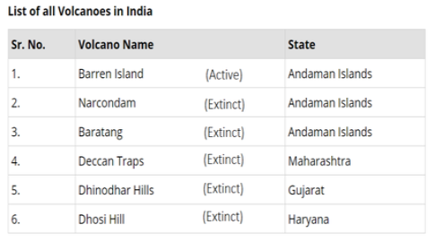
- India's only live volcano is the Barren Island volcano in the Andaman and Nicobar Islands, which had started showing activity in the year 1991 after being dormant for over 150 years. It has once again started spewing ash in January 2017. The volcanic island is uninhabited and the northern part of the island is barren and devoid of vegetation. - 3.3.4 Floods - What is Flood? - Flood is a state of high water level along a river channel or on the coast that leads to inundation of land. India is highly vulnerable to floods. Out of the total geographical area, the Rashtriya Barh Ayog (RBA) has assessed that more than 40 million hectare area is flood prone. - Causes of Floods - Inadequate capacity of the rivers to contain within their banks the high flows brought down from the upper catchment areas following heavy rainfall, leads to flooding. - Indiscriminate deforestation, unscientific agricultural practices, disturbances along the natural drainage channels and colonization of flood-plains and river-beds are some of the human activities that play an important role in increasing the intensity, magnitude and gravity of floods. - Some of the causes of flood are as follows: - Natural causes - Heavy rainfall: - Heavy rain in the catchment area of a river causes water to over flow its banks, which results in the flooding of nearby areas. - Sediment deposition: - River beds become shallow due to sedimentation. The water carrying capacity of such river is reduced. As a result the heavy rainwater over flow the river banks. - Cyclone: - Cyclone generated sea waves of abnormal height spreads the water in the adjoining coastal areas. In October 1994 Orissa cyclone generated severe floods and caused unprecedented loss of life and property. - Change in the course of the river: - Meanders, erosion of river beds and banks, and obstruction of flow due to landslides also lead to changes in river courses. - Tsunami: - Large coastal areas are flooded by rising sea water, when a tsunami strikes the coast. - Lack of Lakes: - Lakes can store the excess water and regulate the flow of water. When lakes become smaller, their ability to regulate the flow become less and hence flooding. - Snowmelt and glacial melt are gradual processes and usually does not cause major floods. But sometimes glaciers hold large quantity of bounded water, which may be suddenly released with melting of ice block resulting into Glacial Lake Outburst Floods (GLOFs). - Anthropogenic causes - Deforestation: - Vegetation facilitates percolation of water in the ground. As a result of deforestation, the land becomes obstruction free and water flows with greater speed into the rivers and causes flood. - Interference in drainage system: - Drainage congestion caused by badly planned construction of bridges, roads, railway tracks, canals etc. hampers the flow of water and results in floods. - International dimension - The rivers originating in China, Nepal and Bhutan cause severe floods in the states of Uttar Pradesh, Bihar, West Bengal, Arunachal Pradesh and Assam. For flood management, cooperation with the neighboring countries is essential. - Population pressure - Because of large amount of people, more materials are needed, like wood, land, food, etc. This aggravates overgrazing, land encroachment, over cultivation and soil erosion which increases the risk of flooding. - Poor Water and Sewage Management - Old drainage and sewerage systems in urban areas have not been overhauled. During the rainy season every year, the drainage and sewerage system collapse, resulting in urban flooding. - Flood Risks in India - Floods occur in almost all the river basins of the country. Around 12 per cent (40 million hectare) of land in India is prone to floods. Our country receives an annual rainfall of 1200 mm, 85% of which is concentrated in 3-4 months i.e. June to September. Due to the intense and periodic rain, most of the rivers of the country are fed with huge quantity of water, much beyond their carrying capacity leading to mild to severe flood situations in the region. - Distribution Pattern of Flood Areas in India - The Brahmaputra River Region - This region consists of the rivers Brahmaputra and Barak and their tributaries, and covers the states of Assam, Arunachal Pradesh, Meghalaya, Mizoram, Manipur, Tripura, Nagaland, Sikkim and the northern parts of West Bengal. - The catchments of these rivers receive heavy rainfall during monsoons. - These rivers originate in fragile hills susceptible to erosion leading to high silt discharge. - The region is subject to severe and frequent earthquakes, which cause numerous landslides and upset river regime. - Cloud bursts followed by flash floods and heavy soil erosion are also prevalent. - The Ganga River Region - The river Ganga has many tributaries, the important ones being Yamuna, Sone, Ghaghra, Raphti, Gandak, Burhi Gandak, Bagmati, Kamla Balan, Adhwara group of rivers, Kosi and the Mahananda. It covers the states of Uttarakhand, Uttar Pradesh, Jharkand, Bihar, south and central parts of West Bengal, Punjab, parts of Haryana, Himachal Pradesh, Rajasthan, Madhya Pradesh and Delhi. - The flood problem is mostly confined to the areas on the northern bank of the river Ganga as most of the damage is caused by the northern tributaries of the Ganga. - In general, the flood problem increases from the west to the east and from south to north. - In recent years, the states of Rajasthan and Madhya Pradesh have also experienced some incidents of heavy floods. - Large-scale encroachment of flood plains of the rivers for habitation and various developmental activities is one of the main causes in this region. - The North-West River Region - The main rivers in this region are the Indus, Sutlej, Beas, Ravi, Chenab and Jhelum. This region covers the states of Jammu and Kashmir, Punjab and parts of Himachal Pradesh, Haryana and Rajasthan. Compared to the Ganga and the Brahmaputra river regions, the flood problem is relatively less in this region. - The major problem is that of inadequate surface drainage which causes inundation and water-logging over vast areas. - Indiscriminate use of water for irrigation and development of low-lying areas and depressions has created problem of drainage congestion and water logging. - These rivers change their courses frequently and leave behind vast tracts of sandy waste. - The Central and Deccan India - Important rivers in this region are the Narmada, Tapi, Mahanadi, Godavari, Krishna and Cauvery. These rivers have mostly well-defined and stable courses. They have adequate capacities within the natural banks to carry the flood discharge except in the delta area. The region does not have serious flood problem except that some of the rivers in Orissa State namely Mahanadi, Brahmini, Baitarni, and Subarnarekha are prone to floods every year. The delta and coastal areas of the states on the east coast periodically face flood and drainage problems in the wake of monsoon depression and cyclonic storms. - Consequences of Floods - Frequent inundation of agricultural land and human settlement has serious consequences on the national economy and society. - Floods destroy valuable crops and also damage physical infrastructure such as roads, rails, bridges and human settlements. - Millions of people are rendered homeless and are also washed down along with their cattle in the floods. - Spread of diseases like cholera, gastro-enteritis, hepatitis and other water-borne diseases spread in the flood-affected areas. - Floods also make a few positive contributions. Every year, flood deposit fertile silt over agricultural fields which restores fertility of the soil. - NDMA Guidelines on Flood Management - The main thrust of the flood protection programme undertaken in India so far has been on structural measures. - Flood Prevention, Preparedness and Mitigation - Structural Measures - Reservoirs, Dams, Other Water Storages: - By constructing reservoirs in the courses of rivers could stores extra water at the time of flood. Such measures adopted till now however, have not been successful. Dams built to control floods of Damodar could not control the flood. - Embankments/Flood Levees/Flood Walls: - By building flood protection embankments, floods water can be controlled from overflowing the banks and spreading in nearby areas. Building of embankments on Yamuna, near Delhi, has been successful in controlling the flood. - Drainage improvement: - Drainage system is generally choked by the construction of roads, canals railway tracks etc. Floods could be checked if the original form of drainage system is restored. - Channel Improvement/Desilting/Dredging of Rivers: - A channel can be made to carry flood discharge at levels lower than its prevailing high flood level by improving its discharge carrying capacity. It aims at increasing the area of flow or the velocity of flow (or both) to increase its carrying capacity. Selective desilting/dredging at outfalls/confluences or local reaches can, however, be adopted as a measure to tackle the problem locally. - Diversion of Flood Water: - Diverting all or a part of the discharge into a natural or artificially constructed channel, lying within or in some cases outside the flood plains is a useful means of lowering water levels in the river. - Catchment Area Treatment/Afforestation: - Watershed management measures such as developing the vegetative cover i.e. afforestation and conservation of soil cover in conjunction with structural works like check dams, detention basins etc. serve as an effective measure in reducing flood peaks and controlling the suddenness of the runoff. - Non-Structural Measures - Flood Plain Zoning: -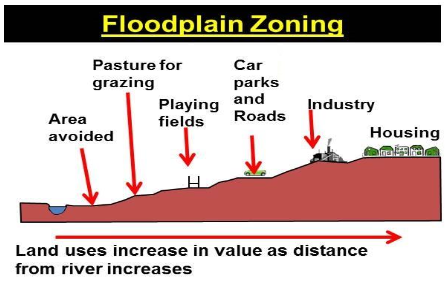
- It is to regulate land use in the flood plains in order to restrict the damage due to floods, while deriving maximum benefits from the same. The vulnerable areas in the districts can be identified and mapped as per past analysis of floods into extremely (red) and partially (blue) affected zones. - Flood Proofing: - It is a combination of structural change and emergency action, not involving any evacuation. It includes providing raised platforms for flood shelter for men and cattle, raising the public utility installation especially the platforms for drinking water hand pumps and bore wells above flood level, promoting construction of double-storey buildings wherein the first floor can be used for taking shelter during floods. - Flood Management Plans: - All government departments and agencies must prepare their own FMPs. - Integrated Water Resources Management aiming at integrating management of water resources at the basin or watershed scale must be undertaken. - Flood Forecasting and Warning in India: - Real time discharge and rainfall data is the basic requirements for the formulation of a flood forecast. Most of the hydro-meteorological data are observed and collected by the field formations of Central Water Commission; IMD supplies the daily rainfall data. - Aapada Mitra Scheme - The NDMA has approved a Centrally Sponsored Scheme focusing on training community volunteers in disaster response in the 30 most flood-prone districts of 25 states in India. It aims to train community volunteers with the skills that they would need to respond to their community’s immediate needs and to undertake basic relief and rescue tasks from emergency situations such as floods, flash floods, and urban flooding, when emergency services are not readily available. - 3.3.5 Urban Floods - What is Urban Flood? - There has been an increasing trend of urban flood disasters in India over the past several years. Urban flooding is not just flooding that happens in an urban area. It is caused by excessive runoff in urban areas due to overburdened drainage and unregulated construction. - How urban flooding is different from riverine flooding? - Urban flooding is significantly different from rural flooding as urbanization leads to developed catchments, which increases the flood peaks from 1.8 to 8 times and flood volumes by up to 6 times. Consequently, flooding occurs very quickly due to faster flow times (in a matter of minutes). - As urban areas are densely populated, people are more vulnerable to flooding and secondary effect of exposure to infection. - Urban areas being centers of economic activities have key infrastructure that has a bearing on national and global economy. - Causes of Urban Floods - Factors contributing to urban flooding can be categorized as follows: - Meteorological Factors: - Rainfall, Cyclonic Storms, Small-scale storms, snowfall and snow melt are some of the meteorological factors that contribute to urban flooding. In the Indian context, the following weather systems cause heavy rainfall in India: - Southwest Monsoon: - Localized and concentrated rainfall in 3-4 months. E.g., Mumbai floods 2005, Ahmadabad floods, 2022 - Northeast Monsoon: - Along with frequent cyclones covering middle of October to end of December. E.g.,. Chennai floods, 2015 - Depressions and Cyclones: - These are associated with hazards like very strong winds, very heavy rainfall and storm surges causing urban flooding in coastal areas. E.g., Hyderabad floods in 2020 - Western disturbances are extra-tropical weather systems (low pressure areas) which move from west to east, regularly, causing widespread rainfall over the extra-tropical areas. - Thunderstorms and Cloudbursts are experienced in hilly areas due to localized weather events where rainfall occurs at a fast rate. - Anthropological Factors: - Most of the urban areas have been built with little to no regard to the natural topography. - Land use changes: - surface sealing due to urbanization, deforestation increase runoff and sedimentation owing to the urban canyon topography. - Occupation of the flood plains causes obstruction of flows due to unregulated growth of infrastructure. - Sudden release of water from dams located upstream of cities/towns and efficient drainage system is upstream areas increases flood peak. - Urban Heat Island Effect: - Due to urban heat island effect highly localized rainfall occurs which may sometimes be of high intensity. - Improper disposal of solid waste: - including domestic, commercial and industrial waste and dumping of construction debris into the drains Inefficient management of religious gatherings like Kumbh Mela also results in unwanted concretization of rivers, which narrows down their channels. - Climate Change: - As the incidence of climate variability and extreme weather events increases and urban flooding becomes more and more common. - Hydrological Factors: - Synchronization of runoffs from various parts of watershed - Natural surface infiltration rate and Presence of impervious cover - Soil moisture level and Groundwater level prior to storm - Presence or absence of over bank flow, channel network; Channel cross-sectional shape and roughness - High tide impeding drainage - Urban Flood Risks in India - There has been an increasing trend of urban flood disasters in India over the past several years. Floods of Delhi (2023), Chennai (December 2015), the Kashmir Floods (2014), the Surat Floods (2006) and the Mumbai Floods (2005 & 2017) reflect the vulnerability of our Cities. - NDMA Guidelines on Urban Flood - Early Warning System and Communication: - National Hydro-meteorological Network and Doppler Weather Radars should be integrated with the urban area planning. They provide and a lead time of 3 to 6 hours for monitoring rainfall. Automated rain gauges also communicate rainfall on a real time basis. Once flood forecast is generated, these can be used to characterize the flood severity and implement the associated flood management plan. For e.g. A severe flood forecast may lead to large scale inundation and thus require complete evacuation of houses and businesses - ‘Nowcasting’ is a technique for very short-range forecasting that maps the current weather and then uses an estimate of its speed and direction of movement to forecast the weather a short period ahead. It can even generate ultra-short term forecasts at 5 to 30 minutes. - Vulnerability Analysis and Risk Assessment: - Identification of areas at risk, classification of structures according to function and estimation of risk for each structure and function using Hazard Risk Zoning. - Strengthening Disaster Risk Governance to Manage Disaster Risk: - A Decision Support System is set in place to generate a flood warning and map the hazard accordingly. This is usually done by the Urban Local Bodies. Warning must be issued to general public only through government officials. - Design and Management of Urban Drainage: - Rapid urbanisation has resulted in increased impermeable surfaces in the form of pavements, roads and built-up areas, thereby reducing the infiltration and natural storage. - Drainage System: - A proper inventory of water supply system with details of all pumping, storage etc. must be maintained, particularly of the minor drainage systems. - Catchment as a basis of design: - As run off processes are independent of states and city administrative boundaries outlines of drainage divides must be depend on watershed delineation. - Contour Data: - Accurate contours are necessary for determining the boundaries of a watershed/ catchment and for computing directions of flow. - Design Flow: - Estimation of peak flow rates for adequate sizing and quantity control facilities. - Removal of Solid Waste: - Most towns and cities have open surface drains besides the road, into which there is unauthorized public disposal of waste. Solid waste increases hydraulic roughness, causes blockage and generally reduces flow capacity. - Drain Inlet Connectivity: - It is seen that the inlets to drain the water from the roads into the roadside drains are either not properly aligned or non-existent leading to severe waterlogging on the roads. - Rain gardens consist of a porous soil covered with a thin layer of mulch. Storm water runoff is directed into the facility, allowed to pond and infiltrates through the plant/mulch/soil environment. - Urban Flooding Cells: - A separate Urban Flooding Cell (UFC) will be constituted within MoUD which will coordinate all UFDM activities at the national level. ULBs will be responsible for the management of urban flooding at the local level. - Response: - Emergency Operation Centres, Incident Response System, flood shelters, search and rescue operations, emergency logistics are some key action areas of flood response mechanism. - Sanitation: - Diseases like malaria, dengue and cholera can spread if adequate sanitation and disinfection are not carried out. - Investing in disaster reduction for resilience and enhancing disaster preparedness: - Capacity Development, Awareness Generation and Documentation: - Participatory urban flood planning and management involving both local government and the community. - Existing Challenges - Less importance to comprehensive risk assessment of urban flooding. It includes understanding, analysis and assessment of urban flood risks, before flood mitigation measures are planned and implemented. - Ignorance of mapping of different factors and risks in different cities and non-inclusion of the same in development planning - Unsatisfactory coordination among different institutions for experience sharing for the purpose of public awareness and imparting professional training of disaster managers. - Lack of information sharing, - Disintegrated investment decisions, and - Lack of consultation with stakeholders. - 3.3.6 Landslides - What is a Landslide? - A landslide is defined as the movement of a mass of rock, debris, or earth down a slope. Landslides are a type of "mass wasting," which denotes any down-slope movement of soil and rock under the direct influence of gravity. - Landslides are one of the natural hazards that affect at least 15 per cent of the land area of our country. The Himalayas are formed due to collision of Indian and Eurasian plate. The northward movement of the Indian plate (@5cm/year) towards Eurasian plate causes continuous stress on the rocks rendering them friable, weak and prone to landslides and earthquakes. - Causes of Landslides -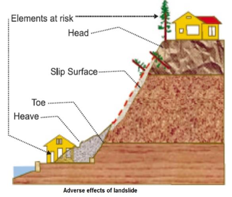
- Natural Causes - Heavy rain: - Heavy rain is the main cause of landslides. - Earthquakes and volcanic explosions: - Earthquake is a common feature in the Himalaya. Tremors destabilize the mountains and the rocks tumble downwards. Volcanic explosions also trigger landslides in the mountainous areas. - Anthropogenic Causes - Deforestation: - Deforestation is another major cause of landslides. Tree, brushes and grasses keep the soil particles compact. Mountain slope looses their protective cover by felling of trees. The rain water flows on such slopes with unimpeded speed. - Building of roads: - In mountainous regions, heavy construction activities dislodges rock structure and change the angle of slope leaving them vulnerable for landslide. - Shifting agriculture: - In the North Eastern part of India, the number and frequency of landslides has increased due to the practice of shifting agriculture. - Construction of houses and other buildings: - For giving shelter to the ever-increasing population and promotion of tourism more and more house and hotels are being built. In building processes large amount of debris created. This causes the landslides. - Landslide Risk in India - On the basis of frequency and other controlling factors like geology, geomorphic agents, slope, land-use, vegetation cover and human activities, India has been divided into a number of vulnerability zones as shown in table below: -| Vulnerability Zone | Description |
|---|---|
| Very High Vulnerability Zone | Highly unstable, relatively young mountainous areas in the Himalayas and Andaman and Nicobar, High rainfall regions with steep slopes in the Western Ghats and Nilgiris, the north-eastern regions, Areas that experience frequent ground-shaking due to earthquakes, etc. and Areas of intense human activities, particularly those related to construction of roads, dams, etc. |
| High Vulnerability Zone | Very high vulnerability zone are included in this category. (except the plains of Assam) The only difference between these two is the combination, intensity and frequency of the controlling factors. |
| Moderate to Low Vulnerability Zone | Areas that receive less precipitation such as- Trans-Himalayan areas of Ladakh and Spiti (Himachal Pradesh), undulated yet stable relief and low precipitation areas in the Aravali, rain shadow areas in the Western and Eastern Ghats and Deccan plateau. Landslides due to mining and subsidence are most common in states like Jharkhand, Orissa, Chhattisgarh, Madhya Pradesh, Maharashtra, Andhra Pradesh, Karnataka, Tamil Nadu, Goa and Kerala. |
| Other Areas | The remaining parts of India, particularly states like Rajasthan, Haryana, Uttar Pradesh, Bihar, West Bengal (except district Darjiling), Assam (except district Karbi Anglong) and Coastal regions of the southern States are safe as far as landslides are concerned. |
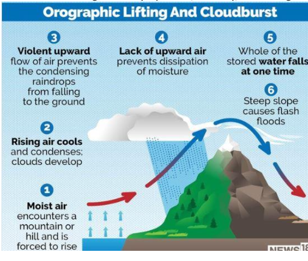
- Cloudbursts happen when saturated clouds are unable to produce rain because of the upward movement of very warm current of air. Raindrops, instead of dropping down, are carried upwards by the air current. New drops are formed and existing raindrops gain in size. After a point, the raindrops become too heavy for the cloud to hold on to, and they drop down together in a quick flash. Hilly terrains aid in heated air currents rising vertically upwards, thereby, increasing the probability of a cloudburst situation. - In India, they are likely to occur when monsoon clouds associated with low pressure area travel northward from the Bay of Bengal across the Ganges plains onto the Himalayas and ‘burst’ in heavy downpours. There can be individual or multiple cloudburst events in each instance. The Uttarakhand disaster of 2013, for example, had several cloudburst events, two of them big ones. - Cloudburst risks in India - Cloudburst in India occurs during the monsoon season over the orographically dominant regions like Himalayan region, north-eastern states and Western Ghats. Cloudbursts do happen in plains as well, but there is a greater probability of them occurring in mountainous zones. For example-like steep hills favour the formation of these clouds. - While NDMA has not released guidelines specifically on Cloudbursts, guidelines on floods and landslides are also applicable to cloudbursts because it is the consequences of heavy rain, especially in the hilly terrain, that causes death and destruction. - Impact and Mitigation - Cloudbursts are known to frequently trigger flash floods and landslides. They can be especially dangerous in compact and enclosed spaces on slopes due to their suddenness. Rescue and relief and evacuations cannot be enough due to the sudden nature of the disaster. - Increasing anthropogenic activities, venturing in unsafe areas due to limited land availability and heavy localized precipitation are continuously increasing the landslide vulnerability. - While IMD provides real time rainfall situation and intensity as well as rainfall forecast for different temporal and spatial scales, it is very difficult to predict the cloud bursts due to its very small scale in space and time. - Some important measures that can be undertaken to mitigate the risk of cloudbursts are: - People should inhabit areas on hard rock and firm ground of slopes instead if valleys and abandoned channels. - At locations where ground fissures have developed and subsidence taken place appropriate measures for checking infiltration of water must be taken. - People living around should be trained to remain vigilant and any physical change in the slope must be brought to the immediate notice of the authorities. - Indiscriminate and unscientific construction should be banned especially in landslide affected areas. - Safe disposal of rainwater needs to be given due importance, therefore, surface and subsurface drainage measures should be planned and executed. Drain pipes may be provided on debris slope. - The bioengineering technology can be successfully implemented by using specific and local vegetation along with engineering measures to reduce instability and soil erosion. - A dense network of rain gauges particularly in the areas identified as being vulnerable to cloudburst may be put in place. - Five worst cloudburst events in India: - Great Musi flood of 1908 near Hyderabad - Mumbai Cloudburst 2005 - Jammu and Kashmir cloudburst 2010 - Uttarakhand cloudbursts 1998 and 2013 - 3.3.8 Cyclone - What is Cyclone? - Cyclone is a region of low atmospheric pressure surrounded by high atmospheric pressure resulting in swirling atmospheric disturbance accompanied by powerful winds. They occur mainly in the tropical and temperate regions of the world. - Within the cyclone field, strong winds blow around the low pressure center in an anti-clockwise direction in the Northern Hemisphere and clockwise in Southern Hemisphere, though the wind at the center (known as eye of the cyclone) is very little and generally free from cloud and rain. Winds increase rapidly to its peak (often exceeding 150 km/h) at about 20 to 30 km from the center and thereafter decrease gradually. -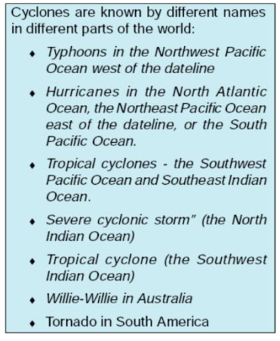
- Causes of Cyclones - Cyclones are centered on areas of low atmospheric pressure, usually over warm ocean waters near the equator. - How cyclones are formed? The warm moist air over the ocean rises from the surface in the upward direction, resulting in the formation of the low-pressure zone over the surface. Air from the surrounding region, with higher pressure, pushes into the low-pressure area. The cool air becomes warm and moist and rises again, thus the cycle continues. As the warm air rises, the moisture in the air cools thus leading to the formation of cloud. The whole system grows gradually and becomes fast with time. As a result of this, an eye is created in the centre, which is the low-pressure center into which the high-pressure air flows from above, thus creating a cyclone. - There are six main requirements for tropical cyclogenesis: - sufficiently warm sea surface temperatures - atmospheric instability - high humidity in the lower to middle levels of the troposphere - enough Coriolis force to sustain a low pressure center - a preexisting low level focus or disturbance, and - low vertical wind shear. - Cyclone Risks in India -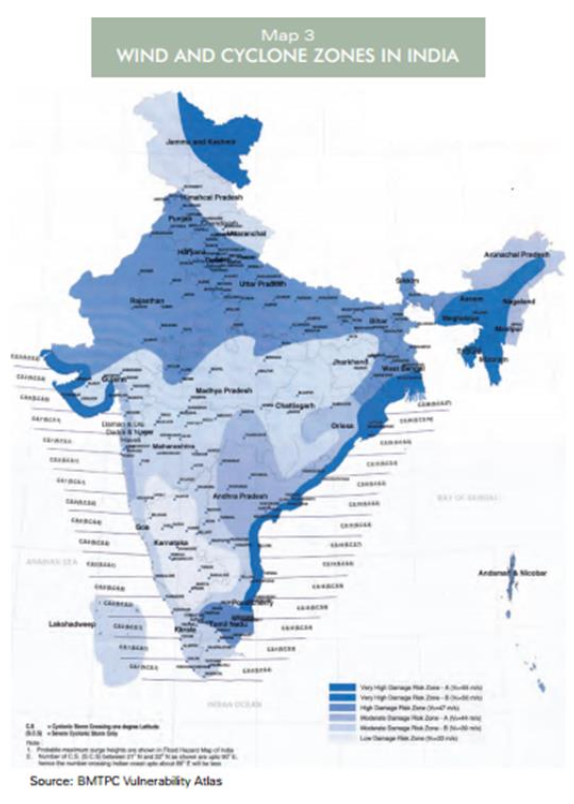
- More than 8000 km of coastline in the east and the west face the hazards of tropical cyclones, and associated storm surges and heavy rainfall, before and after the monsoon. Post monsoon cyclones are usually more intense both in numbers and intensity. It has been estimated that over 58 per cent of the cyclonic storms that develop in the Bay of Bengal approach or cross the east coast in October and November. Only 25 per cent of the storms that develop over the Arabian Sea hit the west coast. - Thirteen coastal states and Union Territories (UTs) in the country, encompassing 84 coastal districts, are affected by tropical cyclones and most coastal cities have high population density. - NDMA guidelines on cyclones - The NDMA had come up with its National Guidelines of Management of Cyclones in 2008. The basic premise of these guidelines is that the mitigation has to be multi-sectoral. - Early Warning System: - IMD in India has operationalized a satellite based communication system called Cyclone Warning Dissemination System for direct dissemination of cyclone warnings to the cyclone prone coastal areas. Cyclone warnings are provided by IMD from the Area Cyclone Warning Centers (ACWCs) at Calcutta, Chennai and Mumbai and Cyclone Warning Centers (CWCs) at Bhubaneswar, Visakhapatnam and Ahmedabad. Use of Doppler radars is also extensive. - Aircraft Probing of Cyclone (APC) facility: - Aircraft probing and surveillance enables the observation of upper air phenomena, especially cloud aerosol interaction. The guidelines recommend the establishment of aircraft probing for cyclone (APC) facilities to understand the cyclone core environment. - National Disaster Communication Infrastructure: - The guidelines recommend the commissioning of the National Disaster Communication Infrastructure (NDCI) at the NDMA/MHA, State Disaster Management Authorities (SDMAs) of coastal states/UTs. - Structural safety of lifeline infrastructure in coastal areas must be ensured and multi-purpose cyclone shelters and cattle mounds must be constructed and identified. All weather roads linking habitations to these shelters must be constructed. - Coastal flood zoning, flood plain development and flood inundation management and regulatory plans must be implemented. - Saline embankments and coastal bio-shields to prevent ingress of saline water associated with cyclonic storm surge must be constructed and capacity of drains and canals must be maintained. - The IMD’s four colour codes are: - Green: - This code means that “all is well” and there is no likelihood of any adverse weather-related incident, and there are no advisories issued. - Yellow: - The colour yellow signals authorities to “be aware” or on their guard, with the likelihood of severely bad weather that could last several days at a stretch, while also suggesting that the weather could take a turn for the worse and upset daily activities. - Orange: - Meaning “be prepared”, the orange alert is a warning for extremely bad weather, electricity blackouts, and the possibility of communication disruptions, including road and rail closures. - Red: - The IMD issues the highest level of warning—indicating authorities should “take action”—only when it is guaranteed that bad weather is going to upend travel and power and pose a significant risks to life. - Mitigation and Challenges - The Government of India has initiated the National Cyclone Risk Mitigation Project (NCRMP) with a view to address cyclone risks in the country. The overall objective of the Project is to undertake suitable structural and non-structural measures to mitigate the effects of cyclones in the coastal states and UTs of India. It aims to reduce vulnerability of coastal communities to cyclone and other hydro meteorological hazards through: - improved early warning dissemination systems - enhanced capacity of local communities to respond to disasters - improved access to emergency shelter, evacuation, and protection against wind storms, flooding and storm surge in high areas - Strengthening DRM capacity at central, state and local levels in order to enable mainstreaming of risk mitigation measures into the overall development agenda. - The Project has identified 13 cyclone prone States and Union Territories (UTs) classified into two categories, based on the frequency of occurrence of cyclone, size of population and the existing institutional mechanism for disaster management. These categories are: -| Category | Description | States/UTs |
|---|---|---|
| Category I | Higher vulnerability States | Andhra Pradesh, Gujarat, Odisha, Tamil Nadu, West Bengal |
| Category II | Lower vulnerability States | Maharashtra, Karnataka, Kerala, Goa, Pondicherry, Lakshadweep, Daman and Diu, Andaman and Nicobar Islands |
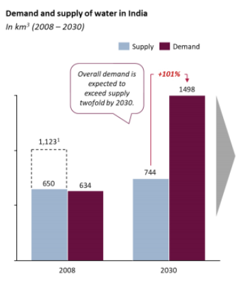
- Droughts refer to a serious shortfall in availability of water, mainly, but not exclusively, due to deficiency of rains, affecting agriculture, drinking water supply and industry. It is a slow onset disaster which evolves over months or even years and affects a large spatial extent. - Drought is a complex phenomenon as it involves elements like precipitation, evaporation, evapotranspiration, agricultural elements like ground water, soil moisture, storage and surface run-off, agricultural practices, particularly the types of crops grown and social elements like socio-economic practices and ecological conditions. - Types of Droughts - 1. Meteorological Drought - When there is a prolonged period of inadequate rainfall marked with mal-distribution of the same over time and space. - Rainfall less than 90% of average is categorized as meteorological drought. - 2. Agricultural Drought - Characterized by low soil moisture that is necessary to support crops, resulting in crop failures. - If an area has more than 30% of its gross cropped area under irrigation, the area is excluded from the drought-prone category. - Extreme agricultural drought can lead to famine (Akal / Anavrishty in Hindi), i.e., prolonged shortage of food in a restricted region causing widespread disease and death from starvation. - Government declares an area as drought-affected if more than 50% crop loss occurs due to meteorological conditions. - 3. Hydrological Drought - When the availability of water in storages and reservoirs like aquifers, lakes, reservoirs, etc. falls below what the precipitation can replenish. - 4. Ecological Drought - When the productivity of a natural ecosystem fails due to shortage of water, and as a consequence, ecological distress causes damages in the ecosystem. - Causes of Drought - Drought results from a long continued dry weather and/or insufficient rain, which causes loss of soil moisture, depletion of underground water supply and reduction of stream flow. - The causative factors are both natural and man-made. The causes for droughts are increasingly attributable to the mismatch between supply and demand. - Droughts in India have their own peculiarities requiring appreciation of some basic facts. These are: - India has an average annual rainfall of around 1150 mm, however, there is considerable annual variation. - More than 80% of rainfall is received in less than 100 days during the South-west monsoon and the geographic spread is uneven. - 21% area receives less than 700 mm rains annually making such areas the hot spots of drought. - Inadequacy of rains coupled with adverse land-man ratio compels the farmers to practice rain-fed agriculture in large parts of the country. - Per capita water availability in the country is steadily declining. - The traditional water harvesting systems have been largely abandoned. - Production of ill-suited, water intensive cash crops by farmers. One stark example of such practice is production of ‘Mentha’ crop in Bundelkhand region of Uttar Pradesh, an area known to face droughts frequently. - EL Nino effect which has occurred frequently in recent years. - Activities like deforestation and the encroachment of wetlands reduce the natural ability of the land to retain water. - Global warming and changes in climate patterns lead to fluctuations in monsoon patterns and exacerbate drought conditions - The IMD recognizes five drought situations: -| Drought Situation | Description |
|---|---|
| Drought Week | When the weekly rainfall is less than half of the normal. |
| Agricultural Drought | When four drought weeks occur consecutively during mid-June to September. |
| Seasonal Drought | When seasonal rainfall is deficient by more than the standard deviation from the normal. |
| Drought Year | When annual rainfall is deficient by 20 per cent of normal or more. |
| Severe Drought Year | When annual rainfall is deficient by 25 to 40 per cent of normal or more. |
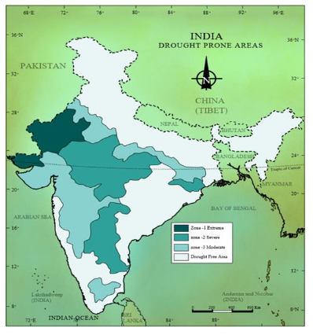
- In India, around 68% of the country is prone to drought in varying degrees. Over 500 of India’s 718 districts monitored by the India Meteorological Department (IMD) are currently reporting meteorological drought conditions, ranging from mildly dry to extremely dry. Most of India — 53 per cent of the districts — was found to be in the ‘mildly dry’ category. Almost the whole of Northeast India, pockets of eastern India, Jammu and Kashmir and large parts of the Southern Peninsula, stretching from Maharashtra, Karnataka to Andhra Pradesh in the eastern coast were in the ‘moderately dry’ or ‘extremely dry’ categories. - Recently the NITI Aayog, under the Composite Water Management Index report highlighted that about two lakh people die in India every year due to inadequate water and sanitation. It states that the 6% of GDP will be lost by 2050 due to water crisis. - While declining per capita water availability contributes towards India’s water crisis, failure to manage its water resources effectively is also a major reason. The Composite Water Management Index (CWMI), to evaluate States, has been developed by the NITI Aayog and comprises 9 broad sectors with 28 different indicators covering various aspects of groundwater, restoration of water bodies, irrigation, farm practices, drinking water, policy and governance. - Approximately, 820 million people of India - living in twelve river basins across the country have per capita water availability close to or lower than 1000m3 – the official threshold for water scarcity as per the Falkenmark Index. - On the basis of severity of droughts, India can be divided into the 3 regions: - Extreme Drought Affected Areas - Most parts of Rajasthan, particularly areas to the west of the Aravali hills (Marusthali) and the Kachchh region of Gujarat fall in this category. - Districts like Jaisalmer and Barmer in the Indian desert, which receive less than 90 mm average annual rainfall, are examples. - Severe Drought Affected Areas - Parts of eastern Rajasthan, most parts of Madhya Pradesh, eastern parts of Maharashtra, interior Andhra Pradesh and Karnataka Plateau. - Also includes northern parts of interior Tamil Nadu, southern parts of Jharkhand, and interior Odisha. - Moderate Drought Affected Areas - Northern Rajasthan, Haryana, southern districts of Uttar Pradesh. - Remaining parts of Gujarat, most of Maharashtra (except Konkan), Jharkhand, Coimbatore plateau of Tamil Nadu, and interior Karnataka. -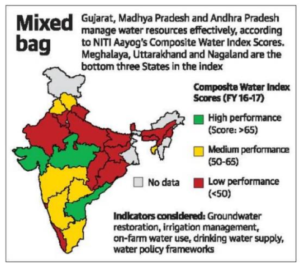
- NDMA Guidelines on Management of Drought - The NDMA guidelines on management of drought were issued in 2010. It is observed in the guidelines that state intervention in drought management has a significant positive impact. - Some of the recommendations in the guidelines are as follows: - Separate Drought Monitoring Cells (DMCs) should be created at the state level under the control of State Disaster Management Authorities which will prepare vulnerability maps in collaboration with National Remote Sensing Centre. - A control room should be established for drought management and specific guidelines should be issued for the use of Information and Communication Technology (ICT) for real-time information related to droughts. - Government of India should undertake the watershed development approach through various programs. - Automatic weather stations set up by IMD to include moisture sensors for obtaining information about soil moisture levels. The Village Resources Centers established by ISRO may be used towards drought management. A cloud seeding policy may be considered as the national level. - Assessment of damage must be done in terms of agricultural production, depletion of water resources, livestock population, land degradation and deforestation as well as human health. - To support income credit should be provided promptly including consumption loan. Insurance products will be developed for different agro-climatic zones providing coverage against drought. - Afforestation with subabul, seemaruba, casurina, eucalyptus and bio diesel plantation like jetropha and pongomia will be encouraged. - A realistic national training and capacity building programme for drought management should be formulated and implemented. PRIs and ULBs will ensure capacity building of their officers and employees in DM to carry out relief, rehabilitation and reconstruction activities. They will be encouraged to take up awareness programmes. - In case of late monsoons or dry spells, seeds with short duration varieties should be made available on subsidy. Inter-cropping, mulching, weeding should be promoted. - For animals, creation of fodder banks, use of tank bunds, undertaking market intervention to keep fodder prices stable must be done. - Impact and Mitigation - Drought has direct and negative impacts on agricultural production. Drought-prone districts account for 42 per cent of the country’s cultivable lands. Rainfed crops account for 48 per cent of the total area under food crops and 68 per cent of the area under non-food crops, according to the National Rainfed Areas Authority. Severe droughts in rainfed areas have reduced agricultural production by 20 to 40 per cent. - Drought in rainfed areas hits small and marginal farmers hard, threatening their food and livelihood security. Around 78 per cent of the farmers who committed suicide in the last one decade were small farmers and 76 per cent of them were dependent on rain-fed agriculture. - To tackle the complex water challenge facing India, it is imperative to take a holistic view of water, starting with the hydrological system, the interactions of this system with climate change on the one hand, and with human factors across agriculture, industrial, and energy production activity on the other. - In the early 1970s, the Drought Prone Areas Programme (DPAP) and the Desert Development Programme (DDP) were implemented to revive the ecology in hot and cold deserts. The drought in 1987 forced to shift the focus of government to long-term measures such as water shed development. The DPAP and DDP programmes were redrafted to make watershed development a unit of drought proofing. Other watershed-based programmes were also launched, including the National Watershed Development Programme for Rain-fed Areas (NWDPRA) and the Watershed Development Programme for Shifting Cultivation (WDPSC). - Now rainwater harvesting – specifically revival of traditional systems – has been given priority in drought management, particularly under the Mahatma Gandhi National Rural Employment Guarantee Scheme (MGNREGA). In 2013, the Government of India announced the setting up of 50,000 groundwater monitoring wells and “embarked upon the ambitious national aquifer mapping programme towards Sustainable Water Management” - Drought mitigation efforts should be complemented with better monsoon forecast and promotion of other drought-proofing mechanisms such as saving on seeds and grains and easy loans to tide over the rough weather. Adoption of soil conservation measures, water harvesting practices, optimum use of water resources, transfer of water from surplus to deficit areas, plantation of drought resistant vegetation are some measures to reduce the vulnerability of drought prone areas. - Irrigation has proved to be the most effective drought proofing mechanism and single biggest factor in bringing about the large measure of stability in agriculture production. Construction of storage dam facilitated irrigation by making use of water at proper time of need. The drought prone areas coming under the command of irrigation project is thus provided with assured irrigation water supply throughout the year. - Institutional Framework - Ministry of Agriculture is the nodal ministry for management of drought crisis in India. Ministry of Jal Shakti is involved in drought management mainly on policy guidelines, monitoring and technical & financial assistance to schemes which are drought proofing. Crop Weather Watch Group (CWWG), an inter-Ministerial mechanism of Central Govt. meets once a week during rainy season (June-September). IMD and the National Centre for Medium Range Weather Forecasting offer meteorological information support for drought preparedness and early warning. - Existing Challenges - Some of the key challenges with water and drought management in India are as follows: - Lack of proper, reliable data on water: Data in the water sector exists in silos, with very little horizontal and vertical data sharing across the value chain of water thereby reducing efficiencies. For example, estimates on groundwater are mostly based on observation data from 15,640 wells, while there are 30 million groundwater structures in the country. - Remote sensing and geographic information system can enable real time data on water and catalyse communities to conserve water resources. Every single water asset including borewell can be geo-tagged and groundwater levels monitored on an online platform. These need to be used extensively. - India needs to radically improve its farm water efficiency which is presently amongst the lowest in the world. Our farmers use 3-5 times more water than Chinese, Israeli and American farmers for producing the same crop. States also need to segregate agricultural power feeders so that electricity consumption, particularly for water extraction, can be measured and monitored. - Successful Initiatives in Drought Management - Adoption of both short and long term measures would remain sub-optimal unless larger issues like the National Water Budget and a policy regime that takes cognizance of the mismatch between supply and demand are properly addressed. - Jalyukt Shivar in Maharashtra, Mukhya Mantri Jal Swavalamban Abhiyan in Rajasthan, Mission Kakatiya in Telangana, Sujalam Sufalam in Gujarat are making a difference. - Under Jalyukt Shivar water harvesting structures made nearly 11,000 villages drought free. It also resulted in groundwater table rise by 1.5-2m. - Jabalpur, Indore and Gwalior corporations have granted rebate on property tax for rainwater harvesting facility. - In Telangana nearly 17,000 minor irrigation tanks were restored, supplying collected rainwater to 19 lakh acres of agricultural land. - A major cause for India’s groundwater crisis is the legal framework that ties up water rights with land rights and allows landowners to extract unlimited groundwater. Maharashtra, which has controlled extraction of groundwater through legislation. Permission for digging new wells necessitate building a groundwater recharge structure alongside. - There is an imperative for a rational and pragmatic policy for pricing water. There is great willingness to pay for regular supply of water. Pricing of water will ensure adequate investment in water infrastructure. - 3.3.10 Heat Wave - What is a Heat Wave? - A Heat Wave is a period of abnormally high temperatures that leads to physiological stress, which may sometimes cause death. The World Meteorological Organization defines a heat wave as five or more consecutive days during which the daily maximum temperature exceeds the average maximum temperature by five degree celsius. In India heat wave conditions are considered if maximum temperature of a station reaches at least 40°C or more for plains, 37°C or more for coastal areas and at least 30°C or more for hilly regions. - How do heat waves occur? -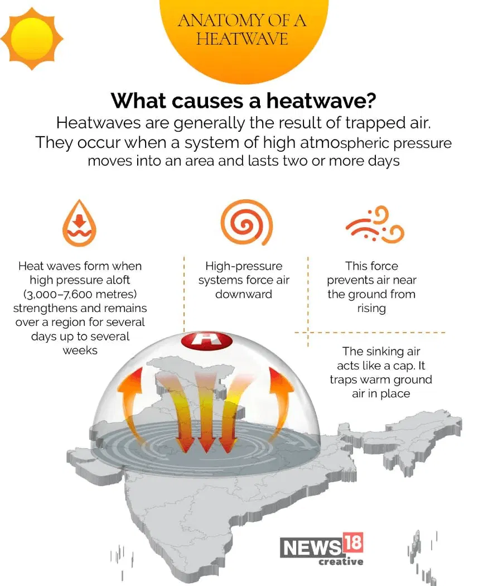
- Heat waves occur when a ridge of high pressure sits over a region for an extended period of time, bringing down dry, hot air to the ground. As the air sinks, it warms and compresses and it becomes very hot by the time it reaches the surface. - This hot air quickly heats up the ground, which raises the air temperature. Since the centre of high pressure areas are usually cloud free, the direct sunlight further raises the day time temperature creating a heat wave. - Heat Wave Risks in India - Higher daily peak temperatures and longer, more intense heat waves are becomingly increasingly frequent globally due to climate change. Heat waves have also increased in frequency, from about 75 events averaged over 1979-1983 to about 98 over 2016-2020. - In India, April to June is a typical heat wave season. Most of the states across northwest India, Gangetic Plains, Central India and east coast India are affected during the heat wave season. - According, to NDMA, heatwave caused 24223 deaths since 1992 to 2015 in various states. However, it is likely that the death figure is much higher as heat related illness is often recorded inaccurately and figures from rural areas are hard to attain. Cities are hotter than rural areas due to population density, pollution from industrial activities and presence of buildings. Mostly weaker sections of the society have to work in the extreme heat to make their ends meet and are extremely vulnerable to the adverse impacts of heat waves such as dehydration, heat and sun strokes. - Criteria for Heat Wave in India - The Indian Meteorological Department (IMD) has given the following criteria for Heat Waves: - Heat wave need not be considered till maximum temperature of a station reaches at least 40°C for Plains and at least 30°C for Hilly regions. -| Condition | Description |
|---|---|
| When normal maximum temperature of a station is less than or equal to 40°C | Heat Wave: Departure from normal is 5°C to 6°C Severe Heat Wave: Departure from normal is 7°C or more |
| When normal maximum temperature of a station is more than 40°C | Heat Wave: Departure from normal is 4°C to 5°C Severe Heat Wave: Departure from normal is 6°C or more |
| When actual maximum temperature remains 45°C or more | Heat wave should be declared irrespective of normal maximum temperature. |
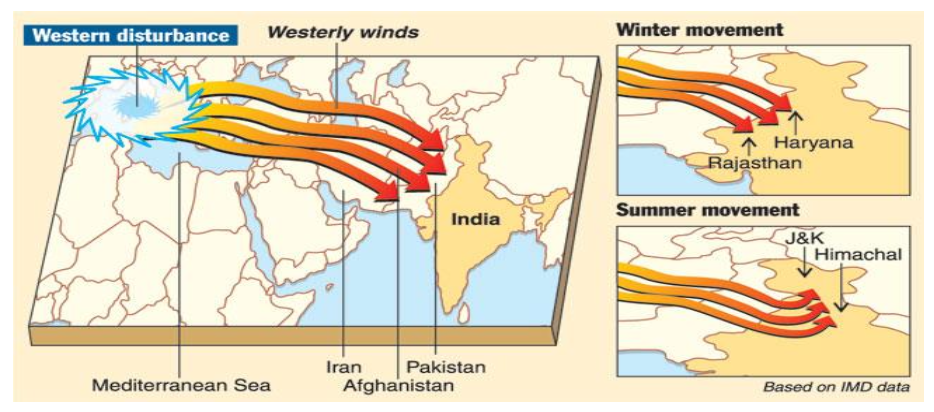
- Cold waves over India are primarily due to transport of cold air from higher latitudes. It is usually associated with La-Nina, cyclonic activities and Jet streams (western disturbances). - Western disturbances manifest as eastward moving well marked troughs in the upper tropospheric westerlies north of 20° N and often extend to the lower troposphere. It transports cold air from northern latitudes into India. There are also few instances of occurrence of cold waves due to a low pressure system over the North Arabian Sea. In these cases, the easterlies to the north of the low pressure system transport cold air from higher latitudes. - Cold Wave Risks in India - Cold waves that occur during winter months from November to February exert considerable stress to the people of northern India. During cold wave episodes, a drop of more than 4°C is observed in minimum temperatures, and these episodes generally persist for 3–5 days and their occurrence peaks in the month of January. - Distribution Pattern for Cold Waves in India -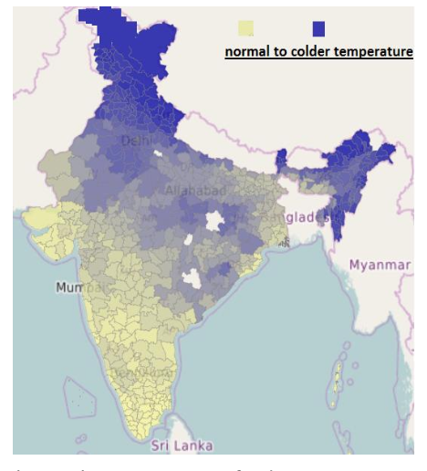
- Northern India: - December and January are the coldest months in the northern plain. The night temperature may go below freezing point in Punjab and Rajasthan. Reasons for the excessive cold in north India can be: - States like Punjab, Haryana and Rajasthan being far away from the moderating influence of sea experience continental climate. - The snowfall in the nearby Himalayan ranges creates cold wave situation; and - Around February, the cold winds coming from the Caspian Sea and Turkmenistan bring cold wave along with frost and fog over the north western parts of India. - The Peninsular Region: - The Peninsular region of India does not have any well-defined cold weather season. There is hardly any seasonal change in the distribution pattern of the temperature in coastal areas because of moderating influence of the sea, and proximity to the equator. - Cold Wave Hazard Mitigation - In case of cold wave/frost situation, States needs to initiate location specific measures as outlined in District Crop Contingency Plans and in consultation with respective State Agricultural Universities to minimise its impact. - Farmers are to provide light irrigation as per need, immediately prune damaged tips of branches or shoot, burn leave/waste material in the orchard to create smoke and manage rejuvenation of damaged crops through pruning of dead material, application of extra doses of fertilizer through foliar sprays. - Plan for the potential to convert schools and other public buildings into shelters to keep vulnerable citizens out of the cold. - Remain aware of the effects that exposure to extreme cold has on children, the elderly, as well as those already ill, and promote outreach and preparedness efforts. - Insulate any water lines running along exterior walls so your water supply will be less likely to freeze. - Adequate preparedness of the community and local governments can prevent deaths due to cold waves. -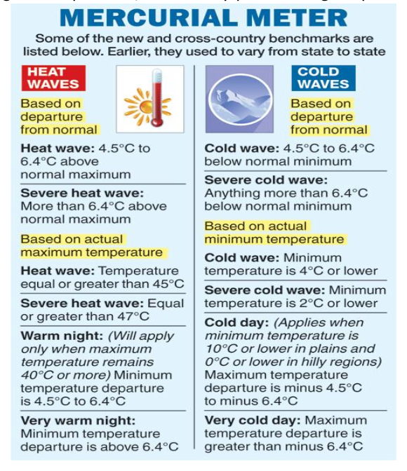
- Existing Challenges in Cold Wave Hazard Management - As Cold Wave/Frost is a localised disaster event, location specific mitigation plans should be drawn up by the concerned State Governments instead of a National level plan. - Lack of participation at community level like SHGs, PRIs. - Lack of preparedness in advance. - 3.3.12 Wild Fire - What is Wild Fire? - Fires in forests are not unnatural and are usually considered good for natural forest development and regeneration. A wildfire is simply an uncontrolled combustion that consumes large fields and areas of land. - Factors of Heat Supply in a Forest - Out of three essential components of fire triangle, two components i.e. fuel and oxygen are naturally available in forest. It is the third component i.e. heat that really initiates fire in the forest. Heat may be supplied by either natural or artificial reasons. - Causes of Wild Fires - Natural Factors: Lightning, Friction of rolling stone, Rubbing of dry bamboo clumps, volcanic explosion etc. - While wild fires are caused by both natural as well as manmade factors, more than ninety five percent forest fires are caused either by negligence or unknowingly by the human beings. - Anthropogenic Factors may be further be categorized into: - Deliberate Causes: Shifting Cultivation, Fires induced for flush growth of tendu leaves, good growth of grass and fodder, to encroach upon the forest land, to conceal illicit felling. - Accidental Causes: Burning farm residues, Camp fires by picnickers, sparks from vehicle exhaust, resin tapping, throwing burning bidis/cigarettes. - Topography also has a role to play in the spread of wild fires. On hill slopes, for example, if the fire starts downhill, it spreads up fast as heated air adjacent to a slope tends to flow up the slope spreading flames along with it. If the fire starts uphill, there is less likelihood of it spreading downwards. - Types of Forest Fire - There are two types of forest fire: - Surface Fire: - A forest fire may burn primarily as a surface fire, spreading along the ground as the surface litter (senescent leaves and twigs and dry grasses etc.) on the forest floor and is engulfed by the spreading flames. - Crown Fire: - The other type of forest fire is a crown fire in which the crown of trees and shrubs burn, often sustained by a surface fire. A crown fire is particularly very dangerous in a coniferous forest because resinous material given off burning logs burn furiously. - Wild Fires Risks in India - Forest fires are a regular phenomenon in our country often observed during the fire season. 54.40% of forests in India are exposed to occasional fires, 7.49% to moderately frequent fires and 2.405 to high incidence levels. - Distribution Pattern for Wild Fires in India - According to a report “Strengthening Forest Fire Management in India”, jointly released by the MoEF&CC and the World Bank, forest fires in India are both widespread and concentrated. Every year, forest fires occur in around half of the country’s 647 districts and in nearly all the states. Yet, though fires are spread throughout the country, they occur much more frequently and affect forest more in some districts than in others. Just 20 districts, representing 3 percent of the India’s land area accounted for 44 percent of all forest fire detections from 2003 to 2016. - The vulnerability of the Indian forests to fire varies from place to place depending upon the type of vegetation and the climate. The coniferous forest in the Himalayan region comprising of fir, spruce, Deodar, Pine are very prone to fire. The other affected area to fire in the country happens to be in the Ganga-Yamuna watershed. The other parts of the country dominated by deciduous forests are also damaged by fire. - Impact of Wild Fires - Huge investment by the government to suppress wildfires. Increase the potential for flooding, debris flows, and landslides. - Smoke and other emissions contain pollutants that can cause significant health problems. - Losses in productivity of the land, impacts on regeneration of species, and deleterious impacts on water shed - Global warming, soil erosion, loss of fuel, wood and fodder, damage to water - Short-term effects: - destruction of timber, forage, wildlife habitats, scenic vistas, and watersheds - Long-term effects: - reduced access to recreational areas; destruction of community infrastructure and cultural and economic resources - Forest Fire Prevention & Management Scheme - It's a centrally sponsored scheme with an aim to focus solely on the issue of forest fire prevention & management and related activities. It aims to prevent forest fires through awareness campaigns, improving traditional practices, encouraging community participation and imparting training. - In the long term, it seeks to institutionalize partnership with forest communities and prepare a forest fire forecasting system. - Forest Fires Hazard Mitigation in India - During the British period, fire was prevented in the summer through removal of forest litter all along the forest boundary. This was called Forest Fire Line, and was used to prevent fire breaking into the forest from one compartment to another. - In 2016, Forest Survey of India developed an indigenous “Pre Warning Alert System” based on parameters like Forest Cover, Forest Type, Climatic Variables (Temperature and Rainfall) and recent fire incidences over the area. In 2017, the analysis was shifted to a grid based system (5km x 5km). - In 2019, Forest Survey of India launched the beta-version of the Large Forest Fire Monitoring Programme using near real time SNPP-VIIRS (Suomi-National Polar-orbiting Partnership - Visible Infrared Imaging Radiometer Suite) data. This programme is a part of the FAST 3.0 (FSI Fire Alerts System). It will monitor continuous, large forest fires using near-real time basis. - The FAST 3.0 is a collaborative effort between the US National Aeronautics and Space Administration (NASA), Indian Space Research Organisation (ISRO) and FSI. - Working: The NASA’s active fire data is sent to ISRO’s National Remote Sensing Centre in Hyderabad and from there, it is sent to FSI. Then, based on naming convention centred around forest ranges, the fire is labeled, like Dehradun I etc. Then, this update of Dehradun I fires is sent to all the 40,000 registered users–both governmental and public–of the forest alert system and gets updated in real time - Burnt Scar Assessment - It assesses forest area affected by the forest fires to assess damage. In the year 2015 and 2016, high temporal data from Indian Remote Sensing (IRS) AWiFS (Advanced Wide Field Sensor) was used to delineate burnt scars. - Presently, FSI is working on developing a semi-automated methodology for burnt area assessment and severity class classification using modern technologies - A full spectrum of strategies that can be used to reduce wild fire risks in the unincorporated area are as follows: - The fire spreads only if there is continuous supply of fuel (Dry vegetation) along its path. The best way to control a forest fire is therefore, to prevent it from spreading, which can be done by creating firebreaks in the shape of small clearings of ditches in the forests. - Participation of the volunteers not only for firefighting but also to keep watch on the start of forest fire and sound an alert. - Arrange firefighting drills frequently. - Proper utilization of media and available technologies for dissemination of exact information to the people and the government. - Existing Challenges in Wild Fires Hazard Management - The incidence of forest fires in the country is on the increase and more area is burned each year. The major cause of this failure is the piecemeal approach to the problem. Both the national focus and the technical resources required for sustaining a systematic forest fire management programme are lacking in the country. - Inadequate research on previous wildfires, including ignition sources, burn severity patterns, season of burning, and fire size - Half-hearted attempts to study the effects of post fire runoff and erosion on aquatic ecosystems and species - Narrow spatial reach to monitor and provide early warnings using new technology, sensor webs, and satellite technology - Need to develop tools and methods to minimize impacts on human life and property, especially in the wild land urban interface - We never ask village communities to participate in managing forest resources, but expect their support at times of crisis. Such attitude and approach should be changed by making them aware of the situation and teach them what to do in case of such emergencies. - There is a need to establish a National Institute of Forest Fire Management with satellite centres in different parts of the country. - Important forest fire management elements like strategic fire centres, coordination among Ministries, funding, human resource development, fire research, fire management, and extension programmes are missing. - 3.3.13 Other uncommon disasters - Solar flares and Coronal Mass Ejections - Asteroid impact - 3.4 Anthropogenic Disasters - 3.4.1 Biological Disasters - What is Biological Disaster? - Biological disasters are scenarios involving disease, disability or death on a large scale among humans, animals and plants due to toxins or disease caused by live organisms or their products. - Such disasters may be natural in the form of epidemics or pandemics or man-made by the intentional use of disease causing agents in Biological Warfare (BW) operations or incidents of Bioterrorism (BT). - Causes of Epidemics - Poor sanitary conditions leading to contamination of food and water or due to inadequate disposal of human or animal carcasses in post disaster situations. - They become real dangers during floods and earthquakes. - Poor solid waste management may create epidemics like plague. - Incidence of plague is quite uncommon now but it can still occur claiming many human lives and disrupting normal life as it did in Surat in 1994. - Major Sources of Epidemics in India - 1. Water-borne Diseases - Includes cholera (and forms of gastroenteritis), typhoid, Hepatitis A, Hepatitis B, etc. - Major epidemics of such diseases have been recorded in the past and continue to occur. - 2. Vector-borne Diseases - Often mosquito-borne epidemics like dengue fever, chikungunya fever, Japanese encephalitis, malaria, kala-azar, etc. - These usually occur in certain regions of the country. - 3. Person-to-Person Transmission - Includes diseases like AIDS and other venereal diseases. - 4. Air-borne Diseases - Includes influenza and measles. - These can also be transmitted through fomites such as used clothes. - In addition to the above, there are certain types of emerging infectious diseases such as epidemic of Severe Acute Respiratory Syndrome (SARS), which had occurred in China or the recent outbreak of avian flu in poultry in certain parts of the country and which has the potential of being transmitted to human beings. Epidemics due to the Dengue virus have occurred in many metropolitan cities of India and outbreak of various other types of viral diseases is also a recurring phenomenon. - Trends Favouring Biological Disaster - Low cost and wide spread availability - More efficient in terms of coverage per kilogram of payload - Advances in biotechnology has made production easy - Used agents are largely natural pathogens to simulate existing diseases - Have unmatched destructive potential - Lethal biological agents can be produced easily and cheaply - The lag time between infection and appearance of symptoms are longer than with chemical exposure. - Consequences of Biological Disaster - It can result into heavy mortalities in the short term leading to a depletion of population with a corresponding drop in economic activity - It leads to diversion of substantial resources of an economy to contain the disaster. - Bio weapons of mass destruction - Prevention and Mitigation Measures - The general population should be educated and made aware of the threats and risks associated with it. - Only cooked food and boiled/chlorinated/filtered water should be consumed. - Insects and rodent control measures must be initiated immediately. - Clinical isolation of suspected and confirmed cases is essential. - A network of laboratories should be established for proper laboratory diagnosis. - Existing diseases surveillance system as well as vector control measures have to be pursued more rigorously. - Mass immunization programs in suspected areas have to be followed more rigorously. - More focus should be given on the research of the vaccines which are not available. - Nodal Agencies for dealing with Biological Disasters in India - The nodal agency for handling epidemics – Ministry of Health and Family Welfare. It is the chief decision-making, advisory body. - As Health is a State Subject under Schedule VII of the Indian Constitution, the primary responsibility of dealing with biological disasters is with the State Governments. - The nodal agency for investigating outbreaks – National Institute of Communicable Diseases (NICD) - Nodal ministry for Biological Warfare – Ministry of Home Affairs (Biological warfare is the use of biological agents as an act of war) - Steps Required for Biological Disaster Management in India - Legal framework - The Epidemic Diseases Act was enacted in 1897 and needs to be repealed. This Act does not provide any power to the centre to intervene in biological emergencies. It has to be substituted by an Act which takes care of the prevailing and foreseeable public health needs including emergencies such as BT attacks and use of biological weapons by an adversary, cross-border issues, and international spread of diseases - Operational framework - At the national level, there is no policy on biological disasters. The existing contingency plan of MoH&FW is about 10 years old and needs extensive revision. All components related to public health, namely apex institutions, field epidemiology, surveillance, teaching, training, research, etc., need to be strengthened. - Command, control and coordination - One of the lessons learned during the plague outbreak in Surat in 1994 and avian influenza in 2006 is the need to strengthen coordination with other sectors like animal health, home department, communication, media, etc., on a continuous basis for the management of outbreaks of this nature - Augmentation in human resource - There is a shortage of medical and paramedical staff at the district and sub-district levels. There is also an acute shortage of public health specialists, epidemiologists, clinical microbiologists and virologists. There have been limited efforts in the past to establish teaching/training institutions for these purposes. - Basic infrastructural setup – Biosafety laboratories for prompt diagnosis, network of sub centres, PHCs and CHCs, dispensaries with stockpile of essential vaccines and medicines need to be expanded to handle epidemic. - COVID-19 was the first pan India biological disaster being handled by the legal and constitutional institutions of the country. The lockdown had been imposed under the Disaster Management Act, 2005 (DM Act) for the first time. The National Disaster Management Authority (NDMA) directed the ministries and departments of Government of India and State Governments along with State Disaster Management Authorities to take measures for "ensuring social distancing so as to prevent the spread of COVID-19 in the country. Though the Constitution of India is silent on the subject ‘disaster’, the legal basis of the DM Act, is Entry 23, Concurrent List of the Constitution “Social security and social insurance”. Entry 29, Concurrent List “Prevention of the extension from one State to another of infectious or contagious diseases or pests affecting men, animals or plants,” can also be used for specific law making. - 3.4.2 Industrial Chemical Disasters - What are Industrial Chemical Disasters? - Industrial hazards are threats to people and life-support systems that arise from the mass production of goods and services. Increased industrial activities and the risks associated with hazardous chemicals and enhanced vulnerability lead to industrial and chemical accidents. When these threats exceed human coping capabilities or the absorptive capacities of environmental systems they give rise to industrial disasters. - Sources and Initiators of Industrial Disasters - Industrial hazards can occur at any stage in the production process, including extraction, processing, manufacture, transportation, storage, use, and disposal. Chemical disasters in general may result from Fire, Explosion, Toxic release, Poisoning and various such combinations. - 1. Process and System Failures - Causes include design defects, fatigue, and corrosion leading to technical failure in equipment. - Human errors such as neglecting safety instructions or deviating from specified procedures also play a role. - Organizational lapses like lack of information, poor emergency planning or coordination, and non-compliance with mock drills are major initiators of chemical disasters. - 2. Natural Calamities - Natural calamities may trigger accidental chemical reactions. - Examples: Release of acrylonitrile during the 2001 earthquake in Kandla; damage to phosphoric acid sludge containment during the 1999 Odisha cyclone. - 3. Sabotage or Terrorist Attack - Vulnerability to chemical disasters can be aggravated by deliberate sabotage or terrorist and warfare activities. - Institutional Framework and Statutory Laws - The regulatory framework on chemical safety can be traced to the Factories Act, 1948 and chemical class-specific regulations like the Explosives Act, 1884; the Insecticide Act, 1968; and The Petroleum Act, 1934. Later, an umbrella Act, the Environment (Protection) Act, 1986, was enacted, which also deals with chemical management and safety. - The Ministry of Labour and Employment along with its technical organ - the Directorate General Factory Advice Service and Labour Institutes (DGFASLI) - amended the Factories Act, 1948 notifying activities as hazardous processes. Various Central and state ministries are responsible for the enforcement of these guidelines. - In the aftermath of the Bhopal disaster, the environment ministry came up with the Manufacture, Storage and Import of Hazardous Substances Rules, 1989. In addition, the Hazardous Wastes (Management, Handling and Trans boundary Movement) Rules, 2008, provide for means of safe storage and disposal of “hazardous waste" (which is listed in its schedules) with the help of central and state pollution control boards. - The Chemical Accidents (Emergency Planning, Preparedness, and Response) Rules, 1996, seek to address gas leaks and similar events. These rules define both “chemical accident" and a “major chemical accident". They set up a Central Crisis Committee with the secretary of the environment ministry as chairman “to deal with major chemical accidents and to provide expert guidance for handling major chemical accidents". It has provisions for state-, district- and even local-level crisis groups. The central crisis group is required to constantly monitor post-accident situations, conduct analyses of these accidents and suggest preventive steps to avoid recurrence. - The Public Liability Insurance Act, 1991 provides for immediate and interim relief to disaster victims till their claims of compensation are finally decided. The National Green Tribunal (NGT) was set up by an Act of Parliament in 2010 for this purpose. The Act also provides for the “principle of no fault liability", which means that the company can be held liable even if it had done everything in its power to prevent the accident. The compensation that is ordered to be paid by the NGT is credited to the Environmental Relief Fund scheme, 2008, established under Public Liability Insurance Act, 1991. - Industrial Disaster Risk in India - There are about 1861 Major Accident Hazard (MAH) units, spread across 301 districts and 25 states & 3 Union Territories, in all zones of country. Besides, there are thousands of registered and hazardous factories (below MAH criteria) and un-organized sectors dealing with numerous range of hazardous material posing serious and complex levels of disaster risks. With rapid industrialization, the threat of industrial disasters has increased. - Industrial Disaster Prevention and Mitigation Strategies - Design and Pre-modification review: - this involves proper layout, facilities and material selection. Research should be done try to substitute extremely toxic chemicals with safer ones. Less chemicals should be stored; a reduction in inventory will automatically mean less damage if an accident is to occur. - Chemical Risk Assessment: - Chemicals are assessed based on compatibility, flammability, toxicity, explosion hazards and storage. - Process Safety Management: - reliability assessment of process equipment, incorporating safety trips and interlocks, scrubbing system, etc. should be done before effecting major process changes. Management should try to develop a culture of safety in industrial organizations - Safety Audits: - Periodical assessment of safety procedures and practices, performance of safety systems and gadgets along with follow up measures should be carried out. - Emergency Planning: - A comprehensive risk analysis indicating the impact of consequences and specific written down and practiced emergency procedures along with suitable facilities should be done. This can be done by communities as well as national or regional corporation authorities - Training: - Proper training of employees and protective services should be done. - Special times and escorts for dangerous vehicles - Public Cooperation on the road: - the public should cooperate with the police and any tankers and heavy duty vehicles to avoid accidents and allow for the shortest possible on road time for dangerous vehicles. - Public awareness: - Everyone should be aware of potential disasters and informed of protective and safety measures. Cautions must be placed to standout on dangerous household and car care products. - Proper storage of hazardous Materials: - All chemicals and hazardous materials should be kept at proper storage temperature and in locked cupboards away from children and animals. Also, if reactive substances are stored, it should be stored is a watertight container. - Proper and safe disposal of hazardous waste to be ensured as per existing regulations. - Transition towards the use of safer alternatives and adoption of safer, affordable and sustainable technologies and processes. - Strict implementation of land use policy should be there. A legislation on the buffer zone (or to be referred as ‘no man’s’ zone) should be introduced so that residential/slum colonies are not established in proximity to industries. The already settled residential colonies need to be relocated. - A scheme for giving good performance awards to industries for achieving exemplary safety standards and statutory compliance shall be developed and implemented. - Existing Challenges - In spite of the existence of a large number of laws, their enforcement has left much to be desired. - There is a lack of understanding and research towards devising a sustainable solution to the issue of industrial disasters. - No adequate separation of parameters, awareness and preparedness for such disasters. Absence of national regulations on occupational safety and health and medical emergency management. - Harmonization of classification and definitions in existing regulations including petroleum and petroleum products. - Absence of regulations on storage and transportation of cryogenics. Lack of legislation on risk assessment requirements and classification, labeling and packaging for industrial chemicals. - Non-availability of statutes for grant of compensation to chemical accident victims. Harmonisation and incorporation of international laws in chemical management. - 3.4.3 Nuclear Disasters - What is a Nuclear Hazard? - Risk or danger to human health or the environment exposed by the radiation emanating from the atomic nuclei is called as nuclear hazard. - Sources of Nuclear Hazard - Natural Resources: - Cosmic rays from the outer space, emissions from the radioactive materials from the earth’s crust. - Man-Made Sources: - Nuclear power plants, X-Rays, nuclear bombs, nuclear accidents, nuclear weapons, mining and processing of radioactive ores. - Nuclear emergencies can also arise due to factors beyond the control of the operating agencies; e.g., human error, system failure, sabotage, earthquake, cyclone, flood, etc. - Nuclear Hazard Risk in India -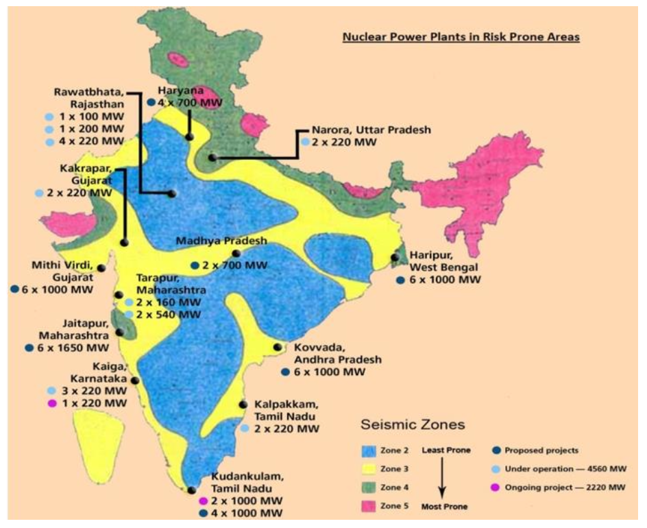
- India has traditionally been vulnerable to natural disasters on account of its unique geo climatic conditions. - India has a flourishing and largely indigenous nuclear power programme. It aims to supply 25% of electricity from nuclear power by 2050. Nuclear and Radiological Emergency can arise in a nuclear facility at plant level leading to plant/site or offsite emergency depending upon the extent of its impact on the surroundings. - Nuclear Hazard Mitigation Strategies - There are four ways in which people are protected from identified radiation sources: - Limiting time: - In occupational situations, dose is reduced by limiting exposure time. - Distance: - The intensity of radiation decreases with distance from its source. - Shielding: - Barriers of lead, concrete or water give good protection from high levels of penetrating radiation such as gamma rays. Intensely radioactive materials are therefore often stored or handled under water, or by remote control in rooms constructed of thick concrete or lined with lead. - Containment: - Highly radioactive materials are confined and kept out of the workplace and environment. Nuclear reactors operate within closed systems with multiple barriers which keep the radioactive materials contained. - Institutional and Legislative Framework in India - The Atomic Energy Act, 1962 is the main Nuclear Legislation in India. With increased emphasis on power generation through nuclear technology, the threat of nuclear hazards has also increased. - The Department of Atomic Energy (DAE) has been identified as the nodal agency in the country in respect of manmade radiological emergencies in the public domain. A Crisis Management Group (CMG) chaired by the Additional Secretary, DAE has been set up. In the event of any nuclear/radiological emergency in the public domain, CMG is immediately activated and it coordinates with the local authority in the affected area and all the concerning authorities at the centre (NCMC/NEC/NDMA) to ensure that the necessary technical inputs are available to respond to the nuclear/radiological emergency. - The Atomic Energy Regulatory Board is the nuclear regulatory authority in India which, as per the legal framework of Atomic Energy Act, 1962, has the mandate for issuance of licenses to nuclear and radiation facilities upon ensuring compliance with the applicable standards and codes. - It develops safety policies in nuclear, radiological and industrial safety areas. - It grants consent for siting, constructing, commissioning and decommissioning after appropriate safety review and assessment, for the nuclear and radiological facilities. - It develops safety codes, guides and standards for siting, designing, construction, commissioning, operation and decommissioning of different types of nuclear and radiological facilities. - It reviews the emergency preparedness plans for nuclear and radiological facilities and transportation of large radioactive sources, irradiated fuel and fissile material. - It takes such steps as necessary to keep the public informed of major issues of radiological safety significance. - It reviews the training programs, qualifications and licensing policies for personnel of nuclear and radiological facilities. - 3.4.4 Oil Spills - Oil is an ancient fossil fuel that we use to heat our homes, generate electricity, and power large sectors of our economy. But when oil accidentally spills into the ocean, it can cause big problems. Oil spills can harm sea creatures, ruin a day at the beach, and make seafood unsafe to eat. - Oil spills can happen any place where oil is being extracted, transported, or stored. The magnitude of harm from a spill is determined by many factors, including the amount and type of oil, location, season, weather, and actions taken to clean up the spill. - How do oil spills happen? - Oil spills into rivers, bays, and the ocean most often are caused by accidents involving tankers, barges, pipelines, refineries, drilling rigs, and storage facilities. Spills can be caused by: people making mistakes or being careless. - There are many types of oil spills and most are minor, for example when oil spills from a ship when it is being refueled. But serious incidents, like the 2020 oil spill in Mauritius, bring consequences that can be felt for decades. Most of the major oil spills happen when a pipeline breaks, a tanker sinks or runs aground or when a drilling operation goes wrong. - In December 2023, an oil spill originated from the Chennai Petroleum Corporation Ltd (CPCL) refinery. It reached at least 20 square kilometers into the sea. The aftermath of the spill, which had been ongoing for a week, continues to exacerbate damage to Chennai's ecologically sensitive Ennore creek. The impact was visible along the river Kosasthalaiyar, where tar balls and substantial oil layers mar the coastline, leaving a trail of deposits on shores and fishing boats. - Deepwater Horizon oil spill - The Deepwater Horizon oil spill in the Gulf of Mexico is one of the most notorious examples. It resulted in the release of approximately 4.9 million barrels of oil over 87 days. This disaster had catastrophic impacts on marine and wildlife habitats, local fishing and tourism industries, and posed serious health risks to cleanup workers and residents. The economic cost ran into billions of dollars, and the environmental recovery is ongoing even years later. - Impact of oil spills - Injuries to animals: - Animals can suffer due to internal exposure (by ingesting or inhaling oil) and external exposure. Since most oils float, the animals most affected by oil are often those that live on or near the sea surface or in shoreline habitats. Fish and shellfish can be harmed if oil gets mixed into the water column or sinks below the surface. - Loss of habitat: - Oil discharged into the environment can harm habitats such as wetlands and oyster reefs. Habitat losses may alter migration patterns and disrupt life cycles of animals and result in erosion of shorelines. - Impacts to local economies and recreation: - can result in closures of beaches, parks, waterways, and recreational and commercial fisheries. There may also be restrictions on hunting and boating. As a result, local economies may be severely impacted, both in the short and long term. - Disruption of Food Chain: - Oil spills affects the availability of food sources for marine organisms. Phytoplankton, the primary producers in the marine food chain, can be killed or inhibited from photosynthesizing due to oil contamination affecting the entire food web. - Mitigation measures to oil spill - Mitigating the impact of oil spills involves several strategies and measures designed to contain, control, and clean up the spill as efficiently as possible. Key mitigation measures include: - Containment: - Floating barriers used to stop the spread of oil on the water surface. - Chemical Dispersants: - These are chemicals sprayed on the oil to break it down into smaller droplets, enhancing natural degradation processes. The most common surfactants used are non-ionic (fatty acid esters and ethoxylated fatty acid esters) and anionic (sodium alkyl sulphosuccinate). - In Situ Burning: - Controlled burning of the oil on the water surface to reduce the amount of oil and its potential impact. - Bioremediation: - Use of microorganisms to degrade the oil naturally. This method can be enhanced by adding nutrients to stimulate microbial growth. - Oilzapper is used to get rid of oil from a surface. Oil Zapping is a bio-remediation technique involving the use of 'oil zapping' bacteria. It developed by The Energy and Resources Institute (TERI). Oil zapper feeds on hydrocarbon compounds present in crude oil and the hazardous hydrocarbon waste generated by oil refineries. It converts oil sludges into harmless CO2 and water. - Oilivorous-S is an innovative technology designed to mitigate the environmental impact of oil spills. It has an additional bacterial strain that makes it more effective against sludge and crude oil with high sulphur content. It was jointly developed by – TERI and Indian Oil Corporation Ltd. - Steps taken to prevent Oil Spills - India - National Oil Spill Disaster Contingency Plan by Indian Coast Guard: - The Indian Coast Guard conducted the 25th National Oil Spill Disaster Contingency Plan (NOSDCP) and preparedness meeting at Vadinar, Gujarat on 23 Nov 2023. The NOSDCP outlines a coordinated response strategy involving various government agencies, ports, and oil handling companies. - Merchant Shipping Act, 1958: - It has provision of Prevention and Containment of Pollution of sea by oil. - Global - International Convention for Safety of Life at Sea (SOLAS), and - Prevention of Pollution of marine environment from Ships (MARPOL). - International Convention on Civil Liability for Bunker Oil Pollution Damage, 2001 (Bunker Convention) - India is a party to all these conventions - 3.4.5 Stampedes - A stampede is a deadly and dangerous situation that occurs when a crowd surges beyond the capacity of a space, moving in the same direction at the same time. During a stampede, people collide and pile up against or on top of one another. - When crowd density is critical at any place, people’s movement is governed by involuntary forces which include pushing each other in a tightly packed situation. Such uncoordinated rush or push of people, may result in crowd disaster or stampede. - Incident of Stampede/Crowd Disaster - The majority of the crowd disasters in India and developing countries have occurred at religious places while stadia, venues of music concerts, nightclubs, & shopping malls have been the typical places of disasters in the developed countries. With population explosion and rapid urbanization, Indian cities are likely to be susceptible to crowd disasters at such venues in the days to come. - A global database of deaths from crowd accidents shows more than 1,477 people have lost their lives since 2000 in over 50 disastrous mass gatherings in India (excluding the very recent incident). India remains one of the biggest hotspots for deadly crowd accidents in the world, particularly over the past two decades. Other major hotspots include Saudi Arabia, mainly due to incidents during the annual Hajj pilgrimage, and some parts of West Africa. - In recent history, India has witnessed several tragic crowd-related catastrophes. - On July 02, 2024, A stampede at a religious congregation in Hathras, Uttar Pradesh, killed 121 people, mostly women, as devotees suffocated to death and bodies piled atop each other. The incident occurred as the 'Satsang' ended, and some accounts say people slipped in the slush as they ran after the preacher's car, triggering the stampede. - On November 25, 2023, a crowd incident at a university concert in Kerala in India’s south caused four deaths and numerous injuries. - On January 1, 2022, a disaster at the Mata Vaishno Devi shrine in Jammu and Kashmir resulted in 12 deaths and 15 injuries. The incident was triggered by an argument among pilgrims during New Year celebrations. - On December 28, 2022, a stampede at a political rally in Andhra Pradesh state in India’s south led to eight deaths as supporters surged towards the stage. - Major Incident: - In 1954, millions gathered for a religious pilgrimage at the Prayag Kumbh Mela in northern India, resulting in a crowd disaster that claimed around 800 lives. This incident remains the deadliest crowd disaster in India’s history. - In 29 October 2022, a crowd surge occurred during Halloween festivities in the Itaewon neighborhood of Seoul, South Korea. According to the South Korean government, 159 people were killed and 196 others were injured. - During a Japanese air raid on 5–6 June 1941 in Chongqing, panic erupted in an overcrowded tunnel shelter (the “Great Tunnel” or Shiba Ti Tunnel). The shelter’s exits were locked, ventilation was inadequate, and crowding led to stampede, suffocation, and trampling. Historical estimates of fatalities vary, with ≈ 4,000 commonly cited, though some accounts suggest as low as 900 or as high as 12,000. -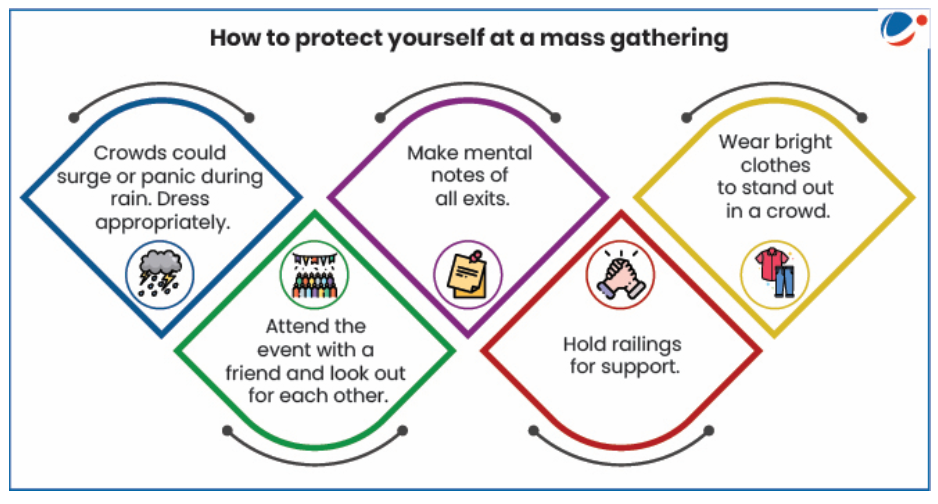
- Causes -| Category | Description |
|---|---|
| Structural | Disaster caused by collapse of structures. Example, Morbi Bridge Collapse across Machchhu River in Gujarat. |
| Fire/Electricity | Fire in the habitation or a shop, non-availability of fire extinguisher, short circuit from electrical generator, etc. Example, Uphaar Cinema Fire in 1997 that happened due to fire code violations. |
| Administrative or Managerial Measures | Underestimation of audience/staffing/services, closed/locked exit, sudden opening of entry door, etc. Example, stampede at the Mahakumbh Mela in 1954. |
| Crowd Behaviour | Mad rush to exit/parking space, last minute change in platform for train arrival/departure, etc. Example, stampede at the Mahakumbh Mela in 1954. |
| Security | Security agency firing/teargas/using force leading to panic, weapon brandished in the crowd, Ineptitude of the police in effectively enforcing prohibitory orders, etc. Example, Seoul crowd tragedy (2022) happened primarily due to lack of safety precautions and other police errors. |
| Lack of Coordination Among Stakeholders | Such as lack of understanding of range of duties entrusted, communication delays, coordination gap between agencies, etc. |
| Other Reasons | Overcapacity, poor crowd control, poorly planned event spaces with no clear exits, narrow spaces. |
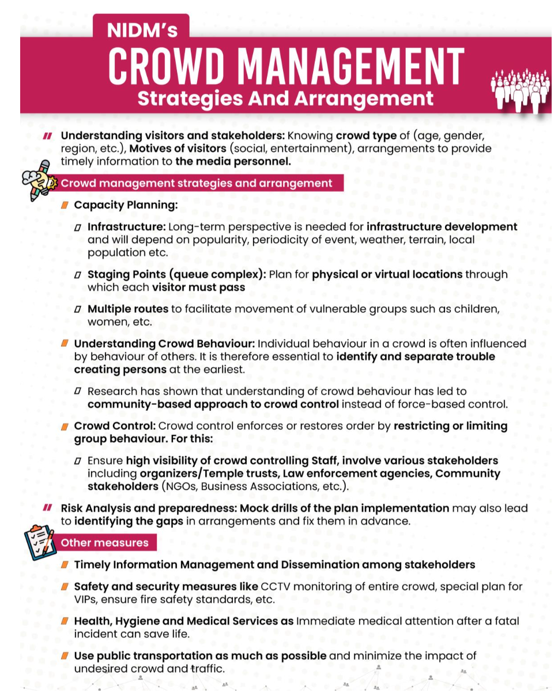
- 3.4.5 Technological Disasters - What are Technological Disasters? - Technological disasters are catastrophic events resulting from the failure or malfunction of human-made systems, technologies, or infrastructure, leading to significant harm to human life, property, or the environment. These disasters are often caused by accidents, human error, system failures, or inadequate safety measures in technological processes or facilities. In the modern context, they increasingly include cyber-related incidents that disrupt critical infrastructure, such as power grids, communication networks, and financial systems, amplifying the scale and speed of impacts. - Why cyber issues count in DM: - They can cause large-scale disruption of critical infrastructure (power grids, banking, transport, healthcare, defence). - NDMA (National Disaster Management Authority) officially recognizes Cyber Security as part of the disaster management framework (classified under “man-made / technological disasters”). - India’s National Cyber Security Policy, CERT-In, NCIIPC all are mechanisms that work in line with disaster preparedness, mitigation, and response. - UPSC Mains questions (GS-III) have directly linked cyber threats with national security and disaster management. - Causes of Technological Disasters - System Failures: - Malfunctions in critical infrastructure due to technical glitches, such as software bugs or hardware overloads, e.g., the global CrowdStrike Falcon Sensor update failure in July 2024 that caused widespread Windows system crashes affecting airlines, banks, and hospitals worldwide. - Human Error: - Mistakes in operation, maintenance, or configuration, such as misconfigurations leading to data breaches or unintended shutdowns. - Design Flaws: - Vulnerabilities in software or hardware design, e.g., unpatched security holes exploited in attacks. - Cyber Incidents: - Hacking, malware, ransomware, or DDoS attacks targeting digital systems, e.g., state-sponsored intrusions into power grids or phishing campaigns compromising networks. - Maintenance Neglect: - Failure to update or patch systems, leading to exploitable weaknesses, e.g., outdated antivirus software allowing virus propagation. - Sabotage or Geopolitical Attacks: - Deliberate cyber operations, such as nation-state hacking into grids to cause blackouts. - Examples of Technological Disasters - CrowdStrike Falcon Sensor Update (2024) - A faulty software update from cybersecurity firm CrowdStrike caused a defective kernel driver that crashed millions of Windows systems globally. - Consequences included flight cancellations, hospital disruptions, and economic losses estimated at $5.4 billion. - Highlighted supply chain vulnerabilities in global tech ecosystems. - Mumbai Power Outage (2020) - Suspected Chinese hackers targeted load dispatch centers, causing a major blackout in Mumbai affecting 16 million people for over 12 hours. - Investigations revealed suspicious logins from Singapore and South Asia, amid border tensions. - Kudankulam Nuclear Power Plant Cyber Intrusion (2019) - Malware (variant of DTrack from North Korea's Lazarus group) infiltrated administrative networks at India's largest nuclear plant, stealing sensitive data. - Operational systems were air-gapped, but the incident exposed risks to nuclear infrastructure. - Colonial Pipeline Ransomware Attack (2021) - DarkSide hackers encrypted systems of the U.S. fuel pipeline, causing fuel shortages across the East Coast. - Similar tactics were observed in Indian banking phishing attacks, such as the 2016 ATM PIN theft affecting millions. - Impact of Technological Disasters - Human Losses: - Injuries or deaths from physical failures (e.g., explosions) or indirect effects (e.g., hospital system crashes delaying treatments during CrowdStrike outage). - Environmental Damage: - Pollution from industrial spills or uncontrolled emissions triggered by cyber manipulations in factories. - Economic Losses: - Billions in damages from downtime, e.g., CrowdStrike outage cost global businesses $5.4 billion; cyber attacks on grids cause cascading economic halts. - Social Disruption: - Panic from blackouts or data breaches, loss of trust in digital services, and inequality in access to recovery (e.g., rural areas hit harder by communication failures). - Cyber-Specific Impacts: - Data theft leading to identity fraud, service outages disrupting emergency responses, and national security threats from grid hacks. - NDMA Guidelines for Technological Disasters - The National Disaster Management Authority (NDMA) emphasizes a holistic, technology-driven approach to technological disasters, including cyber threats, under the broader Disaster Management Act, 2005. While specific cyber guidelines fall under MeitY and CERT-In, NDMA integrates them into national plans: - Risk Assessment and Mapping: - Conduct cyber vulnerability audits for critical infrastructure alongside physical hazard assessments; use tools like AI for threat modeling. - Safety Audits and Inspections: - Mandate regular audits for IT systems, software updates, and penetration testing; enforce compliance with standards like ISO 27001. - Emergency Response Plans: - Develop integrated plans for hybrid threats (physical + cyber), including incident response teams and coordination with NCCC for cyber incidents. - Capacity Building: - Train stakeholders on cyber hygiene, phishing awareness, and resilience; collaborate with NIDM for simulations of grid cyber attacks. - Public Awareness: - Campaigns on digital safety, e.g., avoiding suspicious updates; integrate with NDMA's tech-driven strategy for resilient India. - Technology Upgradation: - Promote zero-trust architectures, blockchain for secure data, and real-time monitoring via IoT for early detection. - Legal Framework: - Align with IT Act, 2000, and NDMA's policies for multi-hazard response, including attribution of state-sponsored attacks. - Institutional Framework - Nodal Agency: - NDMA under Ministry of Home Affairs coordinates with MeitY for cyber aspects; CERT-In handles incident response. - State and District Authorities: - SDMAs and DDMAs localize plans, including cyber cells for grid and communication security. - Technical Support: - CERT-In, NCCC, and NISCC provide cyber expertise; CISF secures physical-tech interfaces. - Mitigation and Prevention Strategies - Design and Maintenance: - Implement secure-by-design principles, regular patching, and redundancy in critical systems like grids. - Early Warning Systems: - Deploy SIEM tools and AI for anomaly detection in cyber networks; integrate with NDMA's monitoring for hybrid threats. - Cybersecurity Measures: - Multi-factor authentication, encryption, and threat intelligence sharing via platforms like Cyber Swachhta Kendra. - Community Engagement: - Digital literacy programs to prevent phishing; drills for outage scenarios. - Inter-Agency Coordination: - Joint exercises between NDMA, MeitY, and power ministries for simulated cyber-grid attacks. - Research and Development: - Invest in quantum-resistant encryption and AI defenses against evolving threats. - Challenges - Lack of Comprehensive Regulations: - Gaps in cyber-specific laws for critical infrastructure, with uneven enforcement. - Aging Infrastructure: - Legacy systems in grids vulnerable to exploits, lacking modern security. - Limited Awareness: - Low cyber literacy among users and operators, exacerbating phishing and insider threats. - Resource Constraints: - Funding shortages for advanced tools and skilled cyber experts in disaster-prone areas. - Coordination Gaps: - Siloed responses between physical disaster teams and cyber units. - Rapid Evolution: - Keeping up with AI-driven attacks and zero-day vulnerabilities in interconnected systems. - 3.4.6 Transportation Disasters - What are Transportation Disasters? - Transportation disasters are catastrophic events arising from failures or accidents in various modes of transport, including road, rail, aviation, maritime, and pipelines, leading to significant loss of life, injuries, property damage, and environmental harm. These incidents often result from human error, mechanical failures, adverse weather, poor infrastructure, or external factors like sabotage. In the context of disaster management, they are classified as man-made or technological disasters, requiring coordinated response to minimize cascading effects on communities and economies. - In India, transportation disasters have been a persistent challenge due to high population density, rapid urbanization, and expanding transport networks. The National Disaster Management Authority (NDMA) recognizes these under its broader framework for man-made hazards, emphasizing prevention, preparedness, and resilient infrastructure. Globally, aviation and rail incidents often garner attention due to their scale, while road accidents cause the highest annual fatalities. - Why Transportation Issues Count in Disaster Management (DM): - They disrupt critical mobility, supply chains, and emergency services, amplifying impacts during crises. - NDMA integrates transportation safety into its multi-hazard approach, coordinating with ministries like Road Transport and Highways, Railways, Civil Aviation, and Shipping. - India's National Transport Development Policy and initiatives like Bharatmala and Sagarmala address disaster resilience in transport planning. - UPSC and policy discussions link transportation disasters to economic security, urban planning, and sustainable development goals. - Causes of Transportation Disasters - Human Error: - Driver/pilot fatigue, speeding, impaired judgment, or miscommunication, e.g., signal failures in rail or pilot errors in aviation. - Mechanical/System Failures: - Brake malfunctions, engine failures, or structural defects, such as derailments due to faulty tracks or aircraft component breakdowns. - Infrastructure Deficiencies: - Poor road/rail maintenance, inadequate signage, or overloaded bridges, e.g., collapses during monsoons. - Environmental Factors: - Adverse weather like fog, floods, or cyclones causing visibility issues or structural stress. - Overcrowding and Capacity Issues: - Exceeding vehicle limits leading to instability, common in buses, trains, and ferries. - External/Sabotage: - Terrorism, vandalism, or cyber intrusions affecting signaling systems. - Examples of Transportation Disasters - Rail Disasters - Balasore Train Accident (2023): - On June 2, 2023, in Odisha's Balasore district, three trains collided due to a signaling error, killing over 290 people and injuring more than 1,000. It was India's deadliest rail accident in decades, highlighting systemic issues in track management and signal systems. - Jalgaon Train Accident (2025): - On January 22, 2025, 12 people, including seven from Nepal, were killed and 15 injured when passengers of the Pushpak Express disembarked onto tracks following a false fire alarm and were struck by the Karnataka Express. - New Delhi Railway Station Stampede (2025): - On February 15, 2025, at least 20 people died and several were injured in a stampede at New Delhi station due to confusing announcements causing a rush to board a train for the Prayag Maha Kumbh Mela. - Road Disasters - Morbi Bridge Collapse (2022): - On October 30, 2022, a suspension bridge over the Machchhu River in Gujarat collapsed, killing 141 people. The incident was attributed to overloading, poor maintenance, and structural weaknesses after renovation. - Delhi-Mumbai Expressway Multi-Vehicle Crash (2024): - In a hypothetical escalation based on patterns, heavy fog in January 2024 led to a pile-up of over 50 vehicles, killing 15 and injuring dozens, underscoring visibility and barrier issues on high-speed corridors. - Aviation Disasters - Air India Flight 171 Crash (2025): - On June 12, 2025, a Boeing 787 Dreamliner with 242 passengers and crew crashed shortly after takeoff from Ahmedabad en route to London, killing over 200. Preliminary reports cited engine fuel cutoff, marking India's deadliest aviation disaster in nearly three decades. - Air India Express Crash (2020): - On August 7, 2020, in Kozhikode, Kerala, the flight overshot the runway during heavy rain, breaking apart and killing 21, including both pilots. - Maritime/Ship Disasters - MV Sewol Sinking (2014, Global Example): - Though not Indian, this ferry disaster off South Korea killed 304, mostly students, due to overloading and improper evacuation; lessons applied to Indian coastal ferries. - Chennai Oil Spill (2023): - In December 2023, an oil spill from Chennai Petroleum Corporation Ltd refinery spread over 20 square kilometers, damaging Ennore creek ecosystems and fishing livelihoods, as an example of maritime transport-related environmental disaster. - Impact of Transportation Disasters - Human Losses: - Immediate fatalities from collisions, falls, or fires; long-term injuries including trauma and disabilities, e.g., over 270 deaths in the 2023 Balasore crash. - Economic Losses: - Disruptions to trade, tourism, and daily commutes; repair costs in billions, e.g., the 2025 Air India crash's economic ripple effects on aviation sector estimated at $2-3 billion. - Environmental Damage: - Oil spills contaminating waterways, wildlife harm from crashes in sensitive areas, and emissions from fires. - Social Disruption: - Family separations, psychological trauma, and inequality in access to rescue (rural vs. urban), leading to loss of public trust in transport systems. - Infrastructure and Cascading Effects: - Road/rail blockages halting emergency services, amplifying secondary disasters like delayed medical aid. - NDMA Guidelines for Transportation Disasters - The NDMA, under the Disaster Management Act, 2005, provides integrated guidelines for transportation hazards, emphasizing multi-modal coordination. While specific to chemical/industrial, they extend to hazmat transport; broader IRS (Incident Response System) applies to all transport incidents: - Risk Assessment and Mapping: - Conduct vulnerability audits for high-risk corridors (e.g., Himalayan roads, coastal shipping); integrate GIS for hazard-prone zones. - Safety Audits and Inspections: - Mandate regular checks on vehicles, tracks, and airports per BIS/ISO standards; enforce anti-collision devices in rails. - Emergency Response Plans: - Develop mode-specific SOPs, e.g., rail evacuation drills; coordinate with NDRF for on-site response within golden hour. - Capacity Building: - Train drivers, pilots, and responders via NIDM simulations; public awareness on safe travel behaviors. - Public Awareness: - Campaigns via Doordarshan and apps on weather alerts, seatbelt usage, and avoiding overcrowded vehicles. - Technology Upgradation: - Promote AI-based signaling, drone surveillance for roads, and satellite tracking for ships. - Legal Framework: - Align with Motor Vehicles Act, 1988; Aircraft Act, 1934; and Railways Act, 1989 for liability and compensation. - Institutional Framework - Nodal Agencies: - NDMA coordinates with Ministry of Road Transport and Highways (MoRTH) for roads; Ministry of Railways for rails; Ministry of Civil Aviation (MoCA) for air; Ministry of Ports, Shipping and Waterways for maritime. - State and District Authorities: - SDMAs/DDMAs localize plans, e.g., state transport departments for route-specific drills. - Technical Support: - NDRF for rescue; IRCTC/AAI for infrastructure security; CERT-In for cyber threats to transport systems. - Mitigation and Prevention Strategies - Design and Maintenance: - Adopt resilient infrastructure like earthquake-resistant bridges; routine vehicle fitness tests. - Early Warning Systems: - Integrate IMD forecasts with transport apps; automated alerts for fog-prone areas. - Safety Measures: - Strict licensing, speed cameras, and black box mandates; international standards like ICAO for aviation. - Community Engagement: - Road safety education in schools; fisherfolk training for maritime hazards. - Inter-Agency Coordination: - Joint exercises under IRS for multi-modal incidents, e.g., hazmat rail spills. - Research and Development: - Invest in electric/automated vehicles and AI predictive maintenance. - Challenges - Infrastructure Gaps: - Aging rail networks and potholed roads vulnerable to failures. - Enforcement Issues: - Lax traffic rules compliance and overloading in public transport. - Limited Resources: - Funding shortages for rural airports/ports and skilled responders. - Coordination Gaps: - Between central ministries and local bodies during peak seasons. - Rapid Urbanization: - Increasing traffic volumes outpacing safety upgrades. - Climate Variability: - More frequent weather-induced disruptions requiring adaptive strategies. -| Mode | Key Causes | Major Impacts | NDMA Focus |
|---|---|---|---|
| Road | Over-speeding, poor roads | High fatalities (1.35M global/year) | Black spots elimination |
| Rail | Signal failures, derailments | Mass casualties, disruptions | Kavach anti-collision system |
| Aviation | Human error, weather | Rare but catastrophic | Runway safety audits |
| Maritime | Storms, spills | Environmental harm | Oil spill contingency plans |
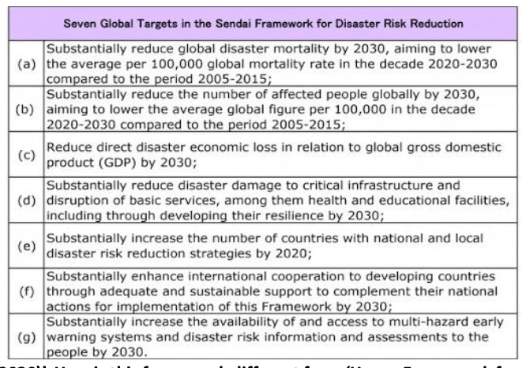
- To support the assessment of global progress in achieving the outcome and goal of the Sendai Framework, seven global targets have been agreed: - 1. Substantially reduce global disaster mortality by 2030, aiming to lower the average per 100,000 global mortality rate in the decade 2020-2030 compared to 2005-2015 - 2. Substantially reduce the number of affected people globally by 2030, aiming to lower the average global figure per 100,000 in the decade 2020-2030 compared to 2005-2015 - 3. Reduce direct disaster economic loss in relation to global gross domestic product (GDP) by 2030 - 4. Substantially reduce disaster damage to critical infrastructure and disruption of basic services, notably health and educational facilities, including through developing their resilience by 2030 - 5. Substantially increase the number of countries with national and local disaster risk reduction strategies by 2020 - 6. Substantially enhance international cooperation to developing countries through adequate and sustainable support to complement their national actions for implementation of this Framework by 2030 - 7. Substantially increase the availability of and access to multi-hazard early warning systems and disaster risk information and assessments to people by 2030 - 5. INTERNATIONAL COOPERATION ON DISASTER MANAGEMENT - India plays an active role in global initiatives on disaster management. India is one of the participating countries and works closely with the United Nations International Strategy for Disaster Reduction (UNISDR) and is a signatory to the Sendai Framework for Disaster Risk Reduction. India has signed bilateral/multilateral agreements with several countries for cooperation in the field of disaster management. Some of them include: - SAARC Agreement on Rapid Response to Natural Disasters - Agreement for cooperation among SAARC member states for rapid response to natural disasters. - Agreement between India and Russia - Cooperation in the field of Emergency Management. - Joint Declaration of Intent (JDI) between India and Germany - Cooperation in the field of Disaster Management. - Government of India has partnership with various International Agencies in the field of Disaster Management such as: - United Nations Office for Disaster Risk Reduction (UNISDR) - The World Conference on Disaster Risk Reduction (WCDRR) - Global Platform for Disaster Risk Reduction (GPDRR) - Asian Ministerial Conference for Disaster Risk Reduction (AMCDRR) - United Nations Office for the Coordination of Humanitarian Affairs (UNOCHA) - United Nations Disaster Assessment and Coordination (UNDAC) - International Search and Rescue Advisory Group (INSARAG) - Global Facility for Disaster Reduction and Recovery (GFDRR) - SAARC Disaster Management Centre - Interim Unit (SDMC-IU) - Asian Disaster Reduction Center (ADRC) - Asian Disaster Preparedness Centre (ADPC) - ASEAN Regional Forum (ARF) - Various International Meetings/Exercises hosted by India - South Asian Annual Disaster Management Exercise (SAADMEx) - Held from 23-26 November 2015, in New Delhi. - SAARC Disaster Management Centre Inauguration - Inaugurated at the Gujarat Institute of Disaster Management (GIDM) in 2017. - Meeting of BRICS Ministers for Disaster Management - Held in 2016 in Udaipur, Rajasthan. - Asian Ministerial Conference on Disaster Risk Reduction (AMCDRR) - Hosted by India in collaboration with UNISDR in 2016 in New Delhi. - BIMSTEC Disaster Management Exercise (BIMSTEC DMEx-2017) - First Annual Disaster Management Exercise for BIMSTEC countries, hosted in 2017. - International Workshop on Disaster Resilient Infrastructure (IWDRI) - Organized by NDMA in collaboration with UNISDR in January 2018. - India-Japan Workshop on Disaster Risk Reduction - Organized by Ministry of Home Affairs in March 2018. - Shanghai Cooperation Organization (SCO) Joint Exercise on Urban Earthquake Search and Rescue (SCOJtEX)-2019 - Hosted in New Delhi in 2019. - First G20 Disaster Risk Reduction Working Group (DRR WG) Meeting - Held in April 2023 under India’s G20 Presidency, highlighting the importance of Disaster Risk Reduction (DRR). The G20 DRR WG intended to include considerations for the Sendai Framework’s mid-term review, renew multilateral cooperation at all levels, and inform future global policies and initiatives related to DRR. - 6th World Congress on Disaster Management - Held in Dehradun, Uttarakhand from November 28 to December 1, 2023, organized by Government of Uttarakhand and Disaster Management Initiatives and Convergence Society (DMICS). The mission of WCDM is to promote interaction of science, policy and practices to enhance understanding of risks and advance actions for reducing risks and building resilience to disasters. - GLOBAL PLATFORM FOR DISASTER RISK REDUCTION (GPDRR) - The Global Platform is the most important international forum dedicated to the disaster risk reduction agenda. - The UN General Assembly recognizes the Global Platform as a critical mechanism to review progress on the implementation of the Sendai Framework for Disaster Risk Reduction. - At the Platform, governments, the UN system and all stakeholders get together to identify ways to further accelerate the implementation of the Sendai Framework. Since 2007, seven sessions of the Global Platforms have taken place, including the 2022 session. - The outcomes are recognized by the General Assembly as a contribution to the deliberations of the High-Level Political Forum on Sustainable Development (HLPF), held each year in July and thus, contributing to risk-informed implementation and monitoring of the 2030 Agenda for Sustainable Development. - The seventh session of the Global Platform (GP2022) was organized and convened by the UN Office for Disaster Risk Reduction (UNDRR) from 23 to 28 May 2022, in Bali, Indonesia, hosted by the Government of Indonesia. The event was co-chaired by the Government of Indonesia and UNDRR. - COALITION FOR DISASTER RESILIENT INFRASTRUCTURE - India announced the creation of a Coalition for Disaster Resilient Infrastructure (CDRI) after the Asian Ministerial Conference on Disaster Risk Reduction (2016), held in New Delhi. The coalition will work towards developing common standards in infrastructure building, financial and compliance mechanisms and invest in R&D that will also determine funding from multilateral banks onwards future investments by countries. - Preliminarily, four broad thematic areas have been identified for the work of the coalition: - 1. Disaster Risk Assessment - It would require good, time-series data on past hazards patterns (e.g. wind speeds, high flood levels) and capability to analyse this data to generate probabilistic risk assessments that can guide investment in disaster resilient infrastructure. - 2. Standards of Design & Implementation - The national frameworks for design and construction standards must reflect the evolving understanding of natural hazards as well as advancements in engineering technologies. - 3. Financing New Infrastructure and Mechanisms for Covering Risks - Disaster Risk Financing strategy could include budget reserve funds as well as disaster risk transfer instruments like catastrophic bonds. - 4. Reconstruction and Recovery of Infrastructure after Disasters - The “Build Back Better” principle must be followed not only for the structural design of the infrastructure but also in terms of management systems around it. - Disaster resilient Infrastructure: - Infrastructure that can stand any huge damage from any kind of natural disaster is known as Disaster Resilient Infrastructure. It encompasses structural and non-structural measures: - Structural Measures involve adjusting engineering designs and standards to reflect disaster risk such as flood control systems, protective embankments, seawall rehabilitation, and retrofitting of buildings. - Non-structural measures refer to risk-sensitive planning, enabling institutional frameworks, hazard mapping, ecosystem-based management, and disaster risk financing. - SUVA EXPERT DIALOGUE ON LOSS AND DAMAGE - It is an expert dialogue decided at COP23 in Bonn due to demands of developing nations for a separate agenda item on loss and damage. - The dialogue aims for facilitating the mobilization and securing of expertise, and enhancement of support, including finance, technology and capacity-building, for addressing loss and damage associated with the adverse effects of climate change. - Warsaw International Mechanism on Loss and Damage - It was established in COP 19 under UNFCCC in 2013. It deals with Climate Change Impacts (Loss and Damage Mechanism), including extreme events and slow onset events, in vulnerable developing countries through: - Enhancing knowledge and understanding of comprehensive risk management approaches to address L&D; - Strengthening dialogue, coordination, coherence and synergies among relevant stakeholders; - Enhancing action and support, including finance, technology and capacity-building. - It is also anchored in the Article 8 of the 2015 Paris agreement which emphasizes the “importance of averting, minimizing and addressing loss and damage associated with the adverse effects of climate change”. - 6. MISCELLANEOUS - Climate Change and Disaster Displacement - On an average 13.9 million people each year are displaced due to natural disaster with eight of the top ten most disaster prone countries being in South and South-east Asia. In this regard, investments in disaster risk reduction and climate resilience as part of overall sustainable development planning will reduce the scale of future displacement associated with disasters. - Some of the issues involved with respect to such displacement are: - Humanitarian crisis: - The displaced often experience discrimination in the provision of assistance, as there are limited resources to share. - Gender violence: - Sexual abuse and rape of women is unfortunately common among women displaced by both natural disasters and conflict. - Breeding ground for extremism: - Displaced people are often more susceptible to recruitment by terrorist organizations. - Spatial variation: - Natural disasters in poorer countries have higher casualties than disasters of similar magnitude in wealthier countries. - Non recognition: - Those displaced due to disasters are not considered to be refugees under international law, leaving them without any basic rights of rehabilitation and compensation. - Role of Community in Disaster Management - Disaster management can be effective only if the communities participate in it. As a community is the repository of knowledge and skills which have evolved traditionally, these needs to be integrated in the management strategy. Community is the first line of responders, thus, it is necessary to educate the community and impart skills and assign specific roles regarding disaster management to ensure a coordinated response while disaster. This can be achieved by: - Undertaking location specific training programmes for the community: Cascading approach should be used to impart training as the number of people to be imparted skills is very large. Thus this responsibility can be entrusted at the local level, say, to the village panchayats. - Disaster management education needs to be integrated within the formal and informal systems of education. - The leaders and personnel in critical sectors should be given disaster management training as well. - A proper safety plan including all pre-disaster planning to reduce risk should be made to enhance community preparedness. - The entire process of damage assessment and distribution of the relief packages can be conducted very smoothly with the active involvement of local community leaders and SHGs. - Community also plays an important role in recovery process including the socio-psychological rehabilitation of the victims of the disaster. During the recent past, it has been experienced that the capacity building of the community has been very helpful even in situations when isolated instances of drowning, burns etc. take place. With the creation of awareness generation on disaster mitigation and carrying out mock drills from time to time under the close supervision of Disaster Management Committees the community will be able to function as a well-knit unit in case of any emergency. - Role of Media and Social Media in Disaster Management - The role of the media is very important. The media can influence the government to prioritize Disaster Risk Issues. For example, it may expose excessive and inefficient expenditure on disaster preparedness in a particular region. During the onslaught of the disaster, Continuous and factual coverage, particularly by local media, can assist the authorities, voluntary organizations and volunteers in reaching the affected with assistance and relief. - However, the media may exaggerate some elements of the disaster and create unnecessary panic. Biased coverage for the purposes of sensationalism by choosing to capture only small incidents of horrific devastations leads to misreporting. - Social media is different from conventional media in that it allows for one-to-one, one-to-many and many-to-many communications. It enables communication to take place in real time or asynchronously over time. It is also device indifferent and can take place via a computer, tablets and smartphones which are relatively mobile and easy to carry around. It also allows participants to create or comment or on social media networks. - During disasters all the conventional communications generally stop functioning at the time while social media or networking services stay active - During the devastating Hudhud cyclone that struck Visakhapatnam, PWD officials created a WhatsApp group that acted as the main tool of communication for sharing information. No meetings and discussions were organised at the district level as the WhatsApp group helped identify and access required resources. - Online social networking services and social media like Facebook, Twitter, Google+, Etc. try to solve many problems during natural disasters by establishing link with closed ones. Concerns such as the threat of technology failure, hackers, stalkers, viruses will have to be addressed in the development of emergency online networks. Also, the spread of rumours can be quick leading to spread of panic. Therefore, social media cannot and should not supersede current approaches to disaster management communication or replace existing infrastructure, but if managed strategically, they can be used to bolster current systems.